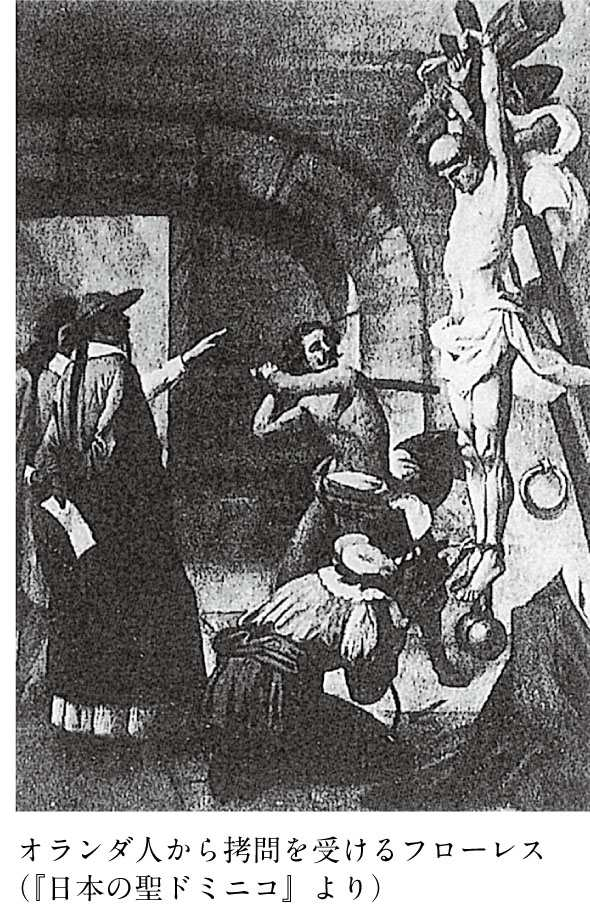

| 殉教～日本人は何を信仰したか～ | |
| 山本 博文 | |
| (2009) | |
目 次
「殉教」とは、教えを守り、教えに殉じて死ぬことである。
日本で殉教といえば、桃山時代から江戸時代初期にかけておこったキリスト教の信仰に殉じて処刑された外国人宣教師や日本人信者のことを思い起こすだろう。
徳川幕府がキリスト教の信仰を禁止したあとも、キリシタンと呼ばれたキリスト教信者は信仰を守り、多くの殉教者があらわれた。特に、「大殉教」と称される元和八（１６２２）年の長崎における五十五人におよぶ殉教、さらに翌年の江戸でおこった五十人の殉教は戦慄的でさえある。
また、棄教を強要され、雲仙の熱湯地獄に突き落とされるキリシタンの姿は、モンタヌスの『日本誌』に挿絵入りでヨーロッパに紹介され、現代日本でも概説書を始めとするさまざまな書物に掲載されている。
この挿絵は想像図だが、日本人の殉教イメージに強いインパクトを与えている。
こうした弾圧や拷問の様子は、イエズス会の日本報告集などに書き留められているから、事実であろう。寛永年間（１６２４～４４年）のキリシタン弾圧は非常に残酷であり、熱湯地獄に突き落とされるのは即座に生命を落とすことができるだけまだましな方とも言える。
このような史実から、草の根分けてもキリシタンを捜し出し、凄惨な拷問を加えて教えを棄てることを強要し、もし棄教（「転ぶ」という）しなければ火焙りなどの刑を加えて殺す、というのが幕府の最初からの方針だったと思われているかもしれない。
天正十五（１５８７）年、豊臣秀吉がバテレン（宣教師）追放令を出し、慶長十七（１６１２）年、徳川家康が禁教令を出したというキリスト教禁令の流れを考えれば、それが次第に強化されていったと理解されても仕方がない。
しかし、バテレン追放令から寛永年間の弾圧までには四十年近い歳月が経っている。支配者が当初からそれほど厳しい態度をとっていたわけでないことは、その間にキリシタンが四十万人ほどに増加していることを見ても明らかである。禁教の動きにいつ変化があり、なぜ弾圧が厳しくなったのかが問われなければならない。
また、キリシタンの方に目を向ければ、なぜキリシタンたちが死を賭けてまで信仰に固執したのかという疑問が生ずる。宗教的情熱だといえばそれまでだが、のちの隠れキリシタンのように、信仰を放棄したように見せて命を守るという手段もありうることだったからである。
さらに、幕府がなぜ厳しくキリシタンを弾圧しなければならなかったかという点も、自明のことではない。日本では「ゼウス」と呼ばれた主キリストを絶対とするキリスト教が、封建支配に異質なものだったと言われているが、当時のヨーロッパの支配体制も王や貴族による封建支配であって、キリスト教が異質なものだとは考えられていない。
当時、日本に入ってきていたのはイエズス会を中心とするカトリックの信仰であって、特にイエズス会は貴族的な団体であるから、身分や階級を重視する封建支配には適合的なものだったはずなのである。
日本における殉教は、もう一度、原点に戻って考え直さなければならないように思う。幸い、数多くの殉教の姿を伝えるイエズス会の年報やイエズス会士の書簡は、日本キリシタン史研究に巨大な足跡を残した故松田毅一氏らのグループによって『十六・七世紀イエズス会日本報告集』（全十五巻）に翻訳されており、同一言語で読めるという面では日本がいちばん研究条件を満たしている。
また、慶応大学名誉教授の高瀬弘一郎氏によるイエズス会文書原本の翻訳（『イエズス会と日本』一、二）、ロザリオ聖母管区本部が刊行した『日本の聖ドミニコ（聖ドミニコ会日本報告書）』など、日本語で読める殉教を語る史料は豊富になってきている。
本書では、これらの史料を批判的に読んでいくことによって、殉教者や彼らを取り巻く民衆の姿を具体的に明らかにしていく。このことは、殉教に対する従来のイメージを変えることになるだろう。
また、日本における殉教のあり方は、世界のどこにもない特殊なものである。ローマ時代、キリスト教徒が迫害された時代は別として、わずか二十数年という短期間に確実に四千人を超える大量の殉教者が出たことは稀である（松田毅一「日本切支丹と殉教」）。特に日本における殉教は、後述するようにいかなる勧誘にも拷問にも屈せず行われた点で、特筆すべきものだと思われる。
こうした殉教の姿は、これまで殉死や切腹などを分析して日本人の死生観を追究しようとしてきた筆者の研究テーマにもつながってくる。
殉教は、日本人の気質や死生観を考えるうえでも重要な論点を含んでいるのである。
なお、以下に記述する用語について解説しておこう。
「バテレン」は宣教師のことで、「パードレ（神父）」の日本風の発音・表記である。漢字では「伴天連」と書かれ、キリシタンの書状では「Pe」と書かれることもある。
もともとパードレは、ローマ教会の職階では司祭である。これに対して、「イルマン」は修道士のことで、司祭になる前の聖職者である。ただし、修道会に属する聖職者は、司祭も含めて修道士と呼ばれることがある。
司祭と修道士では大きな階層差があるが、日本では詳しい職階はわからなかったから、司祭も修道士も「宣教師」と呼ばれた。もちろん、巡察師や司教という高位の聖職者も、日本に来れば「バテレン」である。
修道士の下には、「同宿」という教会に奉仕する在俗のキリシタンがいる。これは主に日本人である。学問を積み、修業を重ねて修道士や司祭に叙せられた日本人もいた。
また、日本に来た宣教師は、十六世紀の終わりまでは、１５３９年にイグナティウス・ロヨラやフランシスコ・ザビエルによって創立され、４０年にローマ教皇から正式に許可されたイエズス会の会士が中心である。日本に来航した貿易船はポルトガル船だったが、宣教師はポルトガル人だけではなく、スペイン人やイタリア人も多かった。
文禄二（１５９３）年からは、スペイン系の修道会であるフランシスコ会が日本布教を開始し、慶長七（１６０２）年以降は、同じくスペイン系の修道会であるドミニコ会、アウグスチノ会も日本布教を開始した。
これらスペイン系の修道会は、総称して托鉢修道会と呼ばれる。清貧を旨とし、跣足で木綿の粗末な修道服を着ており、絹のマントを身にまとうイエズス会士とは見た目がまったく違う（口絵１）。
托鉢修道会の修道士は「フライ」という敬称を付けて呼ばれるが、煩雑になるため本書では省略した。
「管区」は各修道会が設けた布教の単位で、イエズス会では、ロヨラが没した１５５６年に十二あった。日本はインド管区に属していたが、１５８２年、副管区に昇格し、のちインド管区から独立して日本管区になった。
「司教区」はローマ教会が設けるもので、日本には１５８８年２月に司教区が設置された。初代司教に任命されたセヴァスチャン・モライスは日本着任前に死去し、イエズス会インド管区長のペドロ・マルティンスが後任の司教に任命され着任した。
歴史教科書や概説書で書かれる殉教のイメージは、フランス人イエズス会士ジャン・クラッセ（１６１８―９２）の著書を明治十年代に太政官本局翻訳官が訳した『日本西教史』に描かれた「幕府の大弾圧」というイメージを離れるものではない。
もともと、イエズス会の日本報告を主な史料とした日本のキリスト教研究は、殉教史と言ってもよいような様相を呈していた。そして、現在の日本人の殉教のイメージを決定づけたのは、遠藤周作氏（１９２３―９６）の名著『沈黙』であると言っても過言ではないだろう。
キリスト教徒だった遠藤氏の殉教観は、日本に来て棄教した宣教師を主人公に据え、殉教者を救うことができない「神の無力」ということを強調しているため、カトリック教会からは異端の目で見られたが、現代の日本人には理解しやすいものだった。
そこで、本章ではまず遠藤氏の『沈黙』をとりあげて、一般的な殉教のイメージを検討していくことにしよう。
主人公セバスチァン・ロドリゴらが日本に渡ろうとしたのは、天草・島原のキリシタン一揆（１６３７年）後のことである。彼が厳しい弾圧のある日本に来ることを決意したのは、師のクリストヴァン・フェレイラが棄教したことを知り、その真相を知りたいと思ったからである。
フェレイラは実在の人物で、１６３３年に棄教したあと、沢野忠庵と名前を変え、日本におけるキリシタンの棄教に大きな力を発揮した背教者である。実質的な日本司教代理兼イエズス会日本管区長だった彼の棄教は、イエズス会に大きな衝撃をもたらした。
史実としては、日本管区とシナ準管区の巡察師だったアントニオ・ルビノが日本潜入を実行している。この決死的な日本潜入計画が立てられたのは、フェレイラを信仰に立ち戻らせたいという希望を持っていたからだった（レオン・パジェス『日本切支丹宗門史』下巻）。
二団に分けて行われた日本潜入計画の第二次の潜入に参加したジュセッペ・キアラが、ロドリゴのモデルである。
もちろんロドリゴはキアラその人ではなく、遠藤氏が史実の一部を借りて創造した人物である。『沈黙』に描かれる事件も、登場人物の内面描写も、フェレイラを含めて遠藤氏の創作によるものであることは理解しておかなければならない。
『沈黙』全九章のうち最初の四章はロドリゴの書簡の形をとっていて、ポルトガルの「海外領土史研究所」に所蔵された文書だとされる。これによって読者は、この小説が歴史書に近いものだという強い印象を受けるが、この研究所もロドリゴの書簡もフィクションである。
遠藤氏は、枠組みとしての史実にはある程度忠実であるが、ロドリゴらがマカオで東インド巡察師のヴァリニャーノ神父と会っていることだけは理解に苦しむ。
ヴァリニャーノは秀吉時代に活躍したイエズス会宣教師で、巡察師として日本のイエズス会の改革に大きな役割を果たした。巡察師とは、イエズス会総長から布教地に派遣される者の職名で、現地の問題について対策を講ずる権限が委ねられていた。
しかし、ヴァリニャーノは１６０６年１月20日には没している。ロドリゴらに訓戒を与えることはありえない。
ヴァリニャーノと同じ東インド巡察師は、１６３９年から４０年はアントニオ・ルビノで、１６４０年から５０年まではマヌエル・デ・アゼヴェトという人物である。もしロドリゴが話したとしたら、日本潜入宣教師団を組織したルビノのはずである。
薩摩国甑島に上陸して捕えられたルビノらのグループは、拷問に屈せず殉教した。ルビノはフェレイラからの説得に対して激しい言葉で拒否したと『オランダ商館長日記』に記されている。一方、筑前国大島に上陸して捕えられたイエズス会日本副管区長ペドロ・マルケスのグループは、キアラも含め多くが棄教した。
ただし、ヴァリニャーノとしたことから効果をあげている部分もある。ヴァリニャーノは日本における弾圧を嘆き、往事を回想して、「あの頃は私たち宣教師は日本で絹の修道服を着るべきか、木綿の修道服を着るべきかを真剣に議論しあったものだ」と言っている。
この論争は事実で、結局は、「通常は黒く長い僧服をまとい、貴顕の人を訪問する時にはその上にマントと呼ばれた外套をつけること」を決めている。
このほか、日本人が嫌がる肉食を続けるか、やめるかについても議論があった。日本のイエズス会にはそういう平穏な時代があったということが、ヴァリニャーノの言葉によって鮮やかに示される。
遠藤氏はそれを読者に伝えたいため、あえてヴァリニャーノを登場させたのかもしれない。
『沈黙』に書かれたロドリゴの書簡は、「主の平安。基督の栄光」で始まる。これは、宣教師たちの手紙の雰囲気を伝え、十分な効果をあげている。以下では、ロドリゴの棄教に至る過程を小説に従って紹介していこう。
ロドリゴらはマカオで一人の日本人と出会う。キチジローという名で、肥前出身の漁夫だという。
彼は、ロドリゴたちにさえ信者であることを隠そうとする弱虫で、卑屈な者だった。日本人は誇り高い民族だと聞いていたロドリゴの同僚のガルペは、「本当に日本人ですか、あなたは」とまで聞いている。フランシスコ・ザビエルが書簡で強調して以来、日本人が誇り高い民族であるということはヨーロッパ人の共通の認識だった。
その彼を案内者として、ロドリゴとガルペの二人は日本に向かうことになる（第Ⅰ章）。
ロドリゴらはマカオを発し、日本に着く。キチジローは、隠れキリシタンの村であるトモギ村を見つける。ロドリゴらは、なぜキチジローがこんなに早くキリシタンと接触できたのかをいぶかりながら、その村に匿われ、ミサなどを行って過ごす（第Ⅱ章）。
最初、山の炭小屋に潜んでいたロドリゴたちだったが、次第に外に出るなど大胆になる。それを見たほかの村のキリシタンが、ロドリゴたちにミサを頼みに来た。ロドリゴはガルペを残し、五島のフカザワ村に行くことにする（第Ⅲ章）。
ロドリゴが五島から帰ってくると、トモギ村では役人たちによる探索が行われていた。誰か訴人（密告者）があったからである。幕府の法令で、バテレン（宣教師）の所在を密告した者には銀三百枚が与えられることになっていた。
トモギ村からは、よそ者であるキチジローが長崎の奉行所に行くことになった。村人のうちからは、イチゾウとモキチが行くと名乗り出た。彼らは、奉行所で踏絵を踏むことによって、キリシタンではないことを証明するのである。
これを聞いたロドリゴは、「踏んでもいい、踏んでもいい」と言った。
遠藤氏は、ロドリゴにそう叫ばしたあと、「私は自分が司祭として口に出してはならぬことを言ったことに気がつきました」と書かせている。
これが、ロドリゴがのちに棄教する伏線になるのだが、これは宣教師としてありえない発言である。それについてはのちに考えていこう。
ロドリゴの言葉を聞いたキチジローは、「なんのため、こげん責苦ばデウスさまは与えられるとか。パードレ、わしらはなんにも悪いことばしとらんとに」と嘆く。
このキチジローの愚痴が、この小説のモチーフである。
つまり「神の沈黙」ということである。
神は、これほどまでにむごい犠牲を前にしてなお黙っている。どうして神は沈黙を守るのか、そういう疑問がロドリゴに生じたのである。
長崎に行ったイチゾウとモキチは、踏絵を踏んだにもかかわらず、踏絵に唾をかけなかったため、長崎の町を引き回されたうえで、トモギ村の海岸で処刑されることになった。
十字架に組んだ二本の木が波打ち際に立てられた。二人はこれにくくりつけられ、放置された。彼らは、満ち潮になれば、顎のあたりまで水につかる。
その日の夜、モキチはキリシタンたちの唄をうたう。雨と波の音で途絶えがちなこの歌声をロドリゴも聞く。
翌日、モキチはうめき声こそたてるが、唄をうたう気力もなくなっていた。そして午後、二人は絶命した。
これを見ていたロドリゴの感慨は、次のようなものである。
殉教でした。しかし何という殉教でしょう。私は長い間、聖人伝に書かれたような殉教を――たとえばその人たちの魂が天に帰る時、空に栄光の光がみち、天使が喇叭を吹くような赫かしい殉教を夢みすぎました。だが、今、あなたにこうして報告している日本信徒の殉教はそのような赫かしいものではなく、こんなにみじめで、こんなに辛いものだったのです。
たしかに、ヨーロッパで宣伝された殉教のイメージは、ロドリゴが考えていたようなものだったかもしれない。殉教のイメージがどのようなものだったかについてはのちに見ていくが、それにしてもモキチの殉教を見て「みじめ」に感じる宣教師がいただろうか。彼らにとって、殉教はそれだけで栄光であり、十字架にかけられて絶命するモキチの姿を祝福したに違いないことだけは、ここで指摘しておきたい。
もちろん、遠藤氏もそうした宣教師の思考方式は知っていたと思われる。そのため、ロドリゴに次のようなことを書かせている。
モキチもイチゾウも今、主のそばで、彼等に先だった多くの日本人殉教者たちと同じように永遠の至福をえているだろうと。私だってもちろんそんなことは百も承知している。していながら、今になぜ、このような悲哀に似た感情が心に残るのか。
こういうメンタリティも持つロドリゴは、宣教師としてはかなり異質であると言える。そして、神の沈黙に疑問を感じているさなかに、ロドリゴはキチジローの密告によって捕縛されるのである（第Ⅳ章）。
『沈黙』では、ここまでがロドリゴがイエズス会に送った書簡によって説明されている。
「主の平安。基督の栄光」で始まる文章、イエズス会の日本報告集などを巧みに使った日本の風習の説明、第Ⅳ章の途中に挿入される「多分、これが最後の報告となるでしょう」などの言葉によって、本当にロドリゴという宣教師が日本に潜入して書いた手紙が引用されているように見える。
もちろん、イエズス会の日本への書簡や年報を見慣れている者から見れば、これがフィクションであることは一目瞭然である。
まず、ロドリゴ個人の行動に関する記述が多すぎること、キリスト教の厳格な教義とずいぶんかけ離れたロドリゴの考え方、私的な日記のようなロドリゴの感慨など、宣教師の書簡としてはありえないものである。
しかし、こうした部分があるため、ロドリゴの存在に現実感が生まれ、またその後の棄教を自然なものと思わせる効果をあげていることは間違いない。遠藤氏が、歴史小説を執筆するうえで卓越した手法を持っていることがよくわかる。
話はこれ以降、ロドリゴを主人公とした小説として展開していく。
ロドリゴは長崎に護送されていく。
その途中、ロドリゴの前に、ポルトガル語を話す通辞（通訳）があらわれる。
彼は、イエズス会が建てたセミナリオ（神学校）で学び、ポルトガル語を習得した。しかし、キリシタンにはならなかったのだという。
なぜかというと、日本の布教長が日本人を馬鹿にし、彼らがセミナリオを出ても司祭とすることを許さなかったからである。
これは史実を下敷きにしている。１５６８年から８０年まで日本布教長を務めたカブラルは、まったく日本人を信頼しておらず、学問をして日本人の中から司祭が出ないようにするため、ラテン語やポルトガル語を学ぶことを許さなかったという（松田毅一『南蛮のバテレン』）。
日本人イルマン（修道士）で、転んだあとキリスト教批判書『破提宇子』を書いたファビアンは、「今後は日本人を伴天連にしてはいけないということで、みな面白くもない」と書いている。彼が棄教したのは、伴天連（司祭）になれないという不満もその一因だった。ロドリゴの前にあらわれた通詞も、似たような者だったのだろう。
もっとも、１６１２年に宣教師ピレスがイエズス会総長補佐アントニオ・マスカレーニャスに送った書簡には、「彼（ファビアン）が修道女と交渉があったことは感づかれていたが、彼（準管区長ペドロ・ゴメス）はファビアンに対して対策を講じなかった。そのため結局その修道女は妊娠した。ファビアンは逃走して彼女と同棲したうえ、背教者となった」とされているから、司祭になれないことだけが理由だったとは思えない（『イエズス会と日本』二）。
日本巡察師として１５７９年に来日したヴァリニャーノによって、日本人のための神学校が設けられ、日本人司祭養成の道が開かれていた。その後は、日本人司祭も誕生していから、１６３０年代という時代から考えて、ロドリゴの前にあらわれた通辞がそうした不満を持つはずはない。
さてその通辞は、平然と「勇気も時には他人迷惑になる」とロドリゴを非難する。キリスト教の布教が、日本の民にとって迷惑だというのである。
そして、二人の間に宗論問答が始まる。世界を創り、人間を創ったのはデウスだというロドリゴに、通辞は、「ならば、切支丹のデウスは、悪人どもをも創られた、そう申されるわけか。しからば悪もデウスのなせる業じゃ」と言う。
人間は、デウスの授けた智慧分別と反対のことを行うことがある、それを悪と言うだけだ、と答えるロドリゴに対し、通辞はさらに質問する。
「デウスにまこと慈悲の心があらば、なにゆえ天国に行く道に至るまで、さまざまの苦しみやむつかしき事を与えると思わるるか」
これに対してロドリゴは、「人間がデウスの掟をそのまま実行するなら、平安にくらせる筈」とその質問をかわすが、これはロドリゴのもっとも痛いところを突いた質問だった。
そしてロドリゴは、この通詞の口からフェレイラのことを聞いた。名を日本人のように改め、長崎で屋敷と妻をあてがわれている、というのである。
ロドリゴの胸には不安が広がっていった。自分の師であるフェレイラでさえ棄教するのでは、自分がその試練に耐えきれないかもしれない、と思ったのである。
ロドリゴは横瀬浦から諫早、さらに長崎へと護送されていく。そのうしろには、裏切ったキチジローが杖にすがりながらついてきた。
ロドリゴはこの裏切り者に、心の中で「去れ、行きて汝のなすことをなせ」というキリストがユダにかけた言葉を投げつけた（第Ⅴ章）。
長崎に着いたロドリゴは、雑木林に取り囲まれた丘の斜面にある牢屋に入れられた。
しばらくは一人だったが、やがて五、六人の男女が収容された。彼らは、かつてロドリゴが接触したキリシタンたちだった。
ロドリゴは、宗門奉行井上筑後守の取り調べを受けることになる。この井上筑後守は実在の人物で、実名を政重という。秀忠時代の老中井上正就の弟で、大目付を務め、宗門改役を兼帯していた。キリシタンの穿鑿に辣腕を振るった人物として有名である。
井上の態度は、遠い国から来た苦労をねぎらうなどやさしいもので、ロドリゴの張り詰めた心もゆるんだ。
井上の尋問の趣旨は、キリスト教の教えは日本には根付かない、なぜそれなのに禁止されているキリスト教を広めに日本に来るのか、といったものだった。
ロドリゴは、そんなはずはない、葉が茂らず花も咲かないならそれは肥料を与えないためだ、と反論する。
牢屋の外には、ロドリゴを密告したことを懺悔するキチジローがいる。
番人に追い払われて逃げ出したキチジローはこう叫ぶ。
じゃが、俺にゃあ俺の言い分があっと。踏絵ば踏んだ者には、踏んだ者の言い分があっと。踏み絵をば俺が悦んで踏んだとでも思っとっとか。踏んだこの足は痛か。痛かよオ。俺を弱か者に生れさせおきながら、強か者の真似ばせろとデウスさまは仰せ出される。それは無理無法と言うもんじゃい。
わかりやすい言い訳である。
棄教を迫る拷問、踏絵を踏まなければ処刑されるという状況を考えれば、無理もない気もするが、自分のやったことを何かほかのことのせいにする卑怯な言い分である。自分が弱いことをデウスのせいにし、転んだことを当然だとする論法、踏んだ足が痛かったことをもって免罪してもらおうとする心根に卑しいものを感じるのは、筆者一人だけではないだろう。
その後、牢では絵踏が行われた。
役人は、ただ形だけ踏めば牢から出す、と説得した。しかし、収容されたキリシタンは踏絵を踏もうとはしなかった。
こうして、絵を踏まなかった者は処刑された。一人の人間が死んだというのに、蟬は相変わらず鳴き続け、蠅は飛び回っている。
ロドリゴは、殉教があっても世の中がまったく変わらないことに再びショックを受け、神に「なぜ、あなたは黙っている」と呼びかける。自分が殺されたあとも、やはり蟬は鳴き、蠅は飛び続けるのか、という思いが生まれ、嗤いがこみあげてくる（第Ⅵ章）。
それほどまで英雄になりたいか。お前が望んでいるのは、本当のひそかな殉教ではなく、虚栄のための死なのか。信徒たちに讃めたたえられ、祈られ、あのパードレは聖者だったと言われたいためなのか。
このロドリゴの自問自答は不思議である。神は、すべてを見ているはずである。外見では「本当のひそかな殉教」であっても、宣教師には神が見ているという確信があったはずだし、またなければならない。
このような考え方をするような宣教師だから転んだのだと言えばそれまでだが、ロドリゴがとても死を決して日本に渡海してきた宣教師に見えない。
牢に囚われているロドリゴはある日、牢の外に出される。そこに、かつて議論した通辞がいた。
ロドリゴは通辞から、ある人物と対面させたい、と言われる。
フェレイラかと思ったロドリゴだが、そうではなかった。別の場所で囚われた同僚のガルペだった。
ガルペは三人のキリシタンとともにいた。
三人の信徒は、薦で身体をまかれ、蓑虫のような姿になった。三人を乗せた小舟は沖にこぎ出す。
三人は、ガルペが転ぶと言わなければ、そのまま海に放り込まれるという。
ロドリゴは、「転んでいい。転んでいい」と心の中で叫ぶ。
しかしガルペはあくまで転ばず、水しぶきをあげて海に入り、泳いで小舟に近づいていく。
三人は舟から海に落とされた。それを追っていたガルペも海の中に消えていく。
通辞から「卑怯者」と罵られたロドリゴは、再び牢屋に戻される。
しばらくしてロドリゴは、また牢から出される。今度連れていかれたのは、石段の上の山門を通って入るさして大きくない寺だった。
そして、その寺で会ったのは、フェレイラだった。
フェレイラは、二十年布教に従事して、日本にはキリスト教の信仰は根を下ろさないことを悟ったのだという。
ロドリゴは、フェレイラが日本に来たときには教会が至るところに建てられ、日本人が争って洗礼を受けたではないか、と反論する。
しかし、フェレイラは言う。
「だが日本人がその時信仰したものは基督教の教える神でなかったとすれば......」
つまり、日本人が信仰していたのは、キリスト教の神ではなく、日本人の神々だったというのである（第Ⅶ章）。
これは、重要な論点である。
フェレイラがそんなことを言ったとは思えないが、日本人が信仰したのは、日本人の理解できる限りでのキリスト教であったことは間違いなかろう。しかしのちに見ていくように、ヨーロッパにおいても民衆の信仰は、日本人民衆と似たようなものだった。
しばらく牢屋に置かれたロドリゴは、やがて奉行所に連れていかれる。その道筋、通辞は「今夜、お前は転んでいる」と予言する。
ロドリゴは、奉行所の囲いの中に入れられた。
悪臭に満ちたその部屋の壁には、「LAUDATE EUM」（讃えよ、主を）という言葉が書いてあった。
夜、拷問におびえるロドリゴの耳に、誰かの鼾のような声が聞こえてくる。
牢番が眠りこけていると考えたロドリゴは、滑稽に感じるとともに自分の心に余裕があることに思わず微笑する。しかしその後、ロドリゴに急に死の恐怖が訪れる。遠藤氏が描くロドリゴの心の動きは真に迫っている。
鼾の声にいらだったロドリゴは、拳で壁を叩きはじめる。
通辞がやってきて、ロドリゴに言う。
「怖ろしゅうなったな。さあさあ、もう強情を張らずともよいぞ。ただ転ぶと一言申せばすべてが楽になる。張りつめていた心がほれ、ゆるんで......楽に......楽に......楽になっていく」
ロドリゴは、ただあの鼾を止めてほしいと言う。
しかし、それは鼾ではなかった。一緒に付いてきていたフェレイラから聞いたその声の正体は、穴吊りにかけられた信者たちの呻き声だったのである。
フェレイラは、自分も囲いの中で信者たちの呻き声を聞かされたことを述べた。壁の文字を書いたのも彼だった。
そしてフェレイラは、自分が棄教した理由を明らかにする。
自分は、穴吊りにかけられてもまったく屈しなかった。しかし、信者たちが穴吊りにされて呻いているのに、神がなに一つなさらなかったから棄教したのだ、と言う。
これは、それまでのロドリゴの疑問と同じものだった。
そしてフェレイラは、ロドリゴが転ぶとひと言いえば、彼らが助かると言う。
「あの人たちは、地上の苦しみの代りに永遠の悦びをえるでしょう」
こう抗弁したロドリゴに、フェレイラは追い打ちをかける。
お前は彼等より自分が大事なのだろう。少なくとも自分の救いが大切なのだろう。お前が転ぶと言えばあの人たちは穴から引き揚げられる。苦しみから救われる。それなのにお前は転ぼうとはせぬ。お前は彼等のために教会を裏切ることが怖ろしいからだ。このわしのように教会の汚点となるのが怖ろしいからだ。
そして、ロドリゴの前には踏絵が用意される。
フェレイラは、それを踏むことが「最も大きな愛の行為」だと促す。
ロドリゴは「ほんの形だけのことだ」と通辞にせかされ、ついにそれを踏もうとして足をあげた。
足に鈍い重い痛みを感じた。形だけのことではなかった。
そのとき、銅版のキリストは言った。
踏むがいい。お前の足の痛さをこの私が一番よく知っている。踏むがいい。私はお前たちに踏まれるため、この世に生れ、お前たちの痛さを分つため十字架を背負ったのだ。
ロドリゴが踏絵に足をかけたとき、朝が来た（第Ⅷ章）。
ロドリゴは江戸に送られて、井上筑後守の下屋敷を提供される。この屋敷は江戸・小石川にあったもので、棄教したキリシタンたちが収容されたため「キリシタン屋敷」と呼ばれ、キリシタンの尋問などが行われた。
ロドリゴは、日本に生涯いるのだからと、岡田三右衛門というその頃死んだ者の名前とその妻を与えられる。
江戸に行く前、キチジローが訪ねてくる。
ロドリゴはすでに聖職者ではないのに、キチジローの懺悔を聞き、告悔の終わりに言う祈りを授ける（第Ⅸ章）。
これ以後、ロドリゴは岡田三右衛門として、江戸・小石川のキリシタン屋敷で一生を過ごすことになる。
小説の末尾に引用された「切支丹屋敷役人日記」という史料には、岡田三右衛門のキリシタン屋敷での活動とその葬儀の様子が書かれている。この史料引用が、『沈黙』の物語をさらに真実味のあるものにしている。
ちなみにこの史料は、「査祅余録」（『続々群書類従』第十二宗教部）を抜粋し書き直したもので、実際の史料ではキアラは「岡本三右衛門」と名乗り、延宝九（１６８１）年七月二十五日ではなく、貞享二年（１６８５）七月二十五日に没している。
史料には三右衛門の中間となった「吉次郎」も登場するが、実際の史料では「角内」という名であり、また三右衛門の生国は「南蛮ポルトガル」ではなく「南蛮ししりや」である。
さて、小説全体を通して筆者が感じるのは、この小説に書かれたロドリゴの発想法がいかにも現代日本人のものだということである。
ポルトガル人宣教師の考え方ではもちろんなく、当時の日本人の考え方でもない。
このことが、逆に現代の日本人の共感を呼ぶことになったのだろう。
それでは、当時の考え方とはどのようなものだったのだろうか。次節では、『沈黙』の世界を離れ、当時日本で出版された「殉教を勧める書物」から、それを探っていこう。
寛永十六（１６３９）年のポルトガル人追放以後、弾圧が厳しいことが明白な日本に渡ってきた宣教師は、当然、殉教を覚悟していた。むしろ、熱望していたと考えてよい。
彼らがあこがれたのは、はなばなしい殉教だった。そしてそのモデルとして、当時、ヨーロッパでは日本の殉教を書いた書物が出版されていた。もしロドリゴが実在の人物なら、それを読んだに違いない。
日本で二十五年間にわたって布教に従事したイエズス会士ペドロ・モレホンは、慶長十九（１６１４）年、キリシタン大名高山右近（ジュスト右近）のマニラ追放に同行した。モレホンが１６２１年、リスボンで出版したスペイン語の『続日本殉教録』こそ、ロドリゴが読んだ殉教録だっただろう。佐藤吉昭氏が『キリスト教における殉教研究』で紹介した同書の要約から紹介しよう。
徳川家康がキリシタン禁令を出した際、駿府ではキリシタンの登録が行われた。奉行の彦坂九兵衛は、できるだけ人数を少なくしようと考えていたが、城下のキリシタンたちは探索されもしないのに自主的に記帳に赴いた。
奉行は、その中で志操堅固で名前が知れたフアン道壽ら五人を捕縛した。道壽らは、牢の中で一般死刑囚まで改宗させた。これに怒った家康は、キリシタンが望む十字架上の殉教を許さず、額に十字架の烙印を押し、手の指を切断し、足の腱を切って野に捨て、食物も与えず徐々に死なせるよう命じた。
彼らは神に感謝しながら、この責め苦に耐えた。そのとき、神は次のような恩寵を与えてくれた。
「その場所に風が生じ、粉が舞い上がり、種々の色の大変鮮やかで美しい十字架を見たので、皆ひれ伏してこれを拝んだ」
この五人のうち、フアン道壽はその夜、落命する。
翌日、彼の遺骸は棺に納められたが、人々が祈っているとき、道壽は突然目を見開き、天を凝視し、しばらくして目を閉じた、という。
このように、殉教には特別な神の徴があるはずだったのである。殉教者があっても平常な時間が過ぎていくことにロドリゴが絶望したのも、無理からぬところだったかもしれない。
佐藤氏は、「たとえそれが歴史的事実としての記録を用いているにせよ、明らかにある文学的類型に基づいて構成されている」と指摘している。
その文学的類型とは、逮捕から処刑までの一連の出来事がカトリック教会暦上の聖なる日々に重ね込まれていること、善意の弾圧者が助命の手段を教えようとしているのにあくまでそれを拒否すること、処刑されたときに奇蹟が起こること、生存者があってそれを伝えること、などである。
たしかにこの話はあまりにもできすぎているが、モレホンはこれがあくまで事実であるとして、生存者たちが証言していることを強調している。そのため、ヨーロッパにいた宣教師にとって、遠い異国で起こったことながら、神の存在を実感する書物だったと思われる。
筆者がこの話で興味深く思うのは、最初キリシタンの調査を命じられた奉行たちが、彦坂のように、できるだけキリシタンを捕縛しないようにしていることである。これはフィクションではなく、史実だった。
のちに見ていくように、家康がキリシタン禁令を出した頃は、キリシタンの根絶をめざしたものではなかった。たとえキリシタンが転ばなくても処刑せず、せいぜい追放するぐらいだった。この事件の場合も、道壽はたしかに落命したが、ほかの四人は生存している。
もう一つ重要なことは、殉教者たちに強い意志があったということである。自らキリシタンだと名乗りでなければ何の問題もないのに、多くのキリシタンが自分の信仰を申し出ている。
さらに、奉行はキリシタンたちの隣人、親戚、友人に、外見上信仰を棄てるふりをすれば逮捕しないので、そのように説得するよう命じている。しかし、キリシタンたちはあくまでそれを拒否し、牢に入りきれないほどのキリシタンたちが名乗り出た。これも史実だと認められる。
異教徒たち（日本の一般民衆）が、処刑場に連行される五人に、「強情で融通のきかない愚かな奴」と罵ったというのも理解できるところである。
殉教は、ラテン語で「マルチリヨ」という。「マルチル」は殉教者をいい、「丸血留」の字が宛てられた。まさに血だらけになって死ぬイメージがある。
イエズス会宣教師たちは、ことさらに名乗り出て殉教しようとはしていないが、教義の中では殉教を勧めている。
殉教の勧めは、当時のイエズス会士らがキリストの教えとして日本に持ち込んだものだった。明治二十九（１８９６）年に長崎県庁で発見され、弾圧時代に日本人キリシタンが愛読したと思われる「マルチリヨの栞」と名づけられた古写本には、次のようなことが書かれている。
丸血留になるためには死ななければならない。まず第一に、人から殺されることを喜んで堪え忍ぶこと、たとえどんな困難を凌いでも、生きている間は丸血留ではない。死ぬというのは、首を切られ、焼き殺され、磔にされて死ぬだけではない。たとえば食物を与えられないで餓死に及び、流罪に処せられているうちに死に、牢獄の難儀に耐えかねて死ぬなど、どんな形であっても辛労難儀をして死んだ場合は丸血留である。
ただ、殉教と認定されるには厳しい基準があった。殺されるのを嫌がったり、処刑の場から逃げようとしたら殉教とは認められなかった。
そのため、殺されたキリシタンが本当に殉教と認められる死かどうかが問題となる可能性があったので、殉教を報告する文書には、死んだときの状況が非常に詳しく書き留められている。
そして、キリシタンとして殺されるのは喜ぶべきことであるから、抵抗して戦うことは許されなかった。
また、キリシタンが捜索されているとき、よそへ逃げて隠れているのはかまわないが、殉教の望みに燃え、進んで申し出て殺されれば、これは優れた殉教である、とされた。
さらに、なぜキリシタンが迫害されるのか、なぜ迫害者は天罰を受けないのか、殉教にはどのような功徳があるのか、などの点についても、懇切に解説されている。
まず、キリシタンが迫害されるのは、迫害の場ではじめてその信者が真実の信仰を持っているかどうかがわかるためである。
したがって、迫害者が天罰を受けないのは、そのような悪人は善人を鍛えるために生かされているからである。神の罰はいずれ必ず加えられるから、急ぐ必要はない。
棄教を迫られたとき、神を否定することは重罪である。表向き棄教するだけでも、心から棄教する者と同罪である。迫害の短い苦しみの中で、快く殉教を受け入れることが必要だった。
そして殉教すれば、神の前で最高の位につくことができる。すべての罪が許され、煉獄の苦しみは免除され、天国では光背を頭にいただき、受けた傷は光り輝く。つまり、日本人キリシタンにとって、表向きだけでも棄教することは許されず、むしろ進んで殉教することが求められていたのである。
こうした書物を読むと、あらためて日本人キリシタンがキリスト教の教えを積極的に実行しようとし、あるいは素直に従い、自ら進んで殉教者になろうとしたのだと理解することができる。
さて、本章では、遠藤周作氏の小説『沈黙』のストーリィを借りながら、殉教時代の日本キリシタンの置かれた状況を解説してきた。そして、『沈黙』に登場する宣教師たちが、当時の宣教師としては特異な思考方法をしており、むしろ現代人のメンタリティに近いと思われることを述べた。当時の宣教師は、「マルチリヨの栞」に述べられたように、喜んで殉教することを勧めていたのである。
以下の各章では、日本におけるキリスト教の広まりと殉教者の出現、殉教者を取り巻くキリシタンたちの実像、そして為政者たちの考えの変化などを、時代の経過にしたがって見ていこう。そこには、従来考えられていたキリシタン迫害の歴史という枠組みでは理解できない世界がある。
日本に初めて上陸した宣教師は、イエズス会の創立メンバーの一人であるフランシスコ・ザビエルである。１５４９年に鹿児島へ到着したザビエルは、二年三カ月にわたって日本に滞在した。あとにはコスメ・デ・トルレス司祭らが残され、布教にあたった。
ザビエル以後、豊臣秀吉によってバテレン追放令が出されるまで三十八年が経過している。この年月の間に、キリスト教界は次第に勢力を拡大した。
１５７０年に日本布教長として来日したフランシスコ・カブラルは、日本では封建領主に優る宣教師はないと考えていた。大名にとっても、自領にポルトガル船が来航することは大きな経済的効果をもたらしたので、洗礼を受けてキリシタンになる者も出た。
最初にキリシタン大名になったのは大村純忠で、大友宗麟・有馬晴信らもキリシタン大名となった。彼らの領内では、領民がなかば強制的にキリシタンに改宗させられた。
カブラルは、キリシタン大名のために食料や武器・弾薬の援助も行った。彼らが比較的弱体で、独力では周囲の戦国大名の圧力に抗しきれなかったからである。これに対して大村純忠は長崎を、有馬晴信は浦上の地をイエズス会に寄進した。
カブラルは権力者とは親密に交際したが、日本人を低く評価し、かつ疑念を抱いていた。そのため、自分たちの会話が日本人に聞き取られず、また日本人が学問をして司祭になることがないよう、ラテン語やポルトガル語を学ぶことを許さなかった。
１５７９年に来日した巡察師ヴァリニャーノは、彼のやり方を批判し、布教の方法を改めさせた。日本人のための学校を設立し、日本人司祭を養成する道を開いた。ヨーロッパ人の宣教師に対しては、日本の風習を学び、それに順応するよう命じた。九州の特定区域以外は、バテレンが肉食することも禁じた（松田毅一「解題」）。
こうして、１５８２年にヴァリニャーノが日本を離れるまで、日本におけるイエズス会の布教はずいぶん変化していった。
一方、カブラルと同じ年に来日したオルガンティーノ司祭は、日本人の性質を高く評価していたので、自ら日本の風習に順応し、京都に居住して信者を増やしていた。彼は日本の着物をまとい、食事も和食に切り替えた。仏教の僧侶から法華経を学ぶことすらしたという。
本能寺の変（１５８２年）ののち秀吉が覇権を握ると、オルガンティーノは大坂城下に教会の敷地を与えられた。
天正十四（１５８６）年三月十六日、日本副管区長となったガスパル・コエリュも、カブラルと似たような考えであった。コエリュは、新たに日本の支配者になりつつあった秀吉に近づき、大坂に上って秀吉に拝謁した。秀吉は、一行に大坂城内を見学させ、天守閣まで案内した。そして、布教許可の朱印状を与えた。
当時、九州では島津氏の勢力が拡大し、イエズス会を保護していた大友・大村・有馬らのキリシタン大名は劣勢であった。コエリュは秀吉に九州出陣を要請し、九州のキリシタン大名を味方につけること、ポルトガルの二艘の軍艦を提供することを提案したとされる。
コエリュは二年前にも、キリシタン大名を援助するため兵と弾薬・大砲、食料、資金、船舶を送ってほしい、とフィリピン総督に要請している。ポルトガル人であるコエリュは、本国（１５８１年以来スペイン国王がポルトガル国王を兼ねていた）の利益を考え、必要とあれば軍事的な援助も受けることにやぶさかではないと考える人物だった。
もともと秀吉は、すでに九州出陣を計画しており、この年、弟の秀長を日向方面に派遣し、翌年には自ら出陣し、六月には島津氏を屈服させ全九州を支配下に置いた。
秀吉は肥後在陣中、再びコエリュを引見した。秀吉が筑前箱崎に凱旋したときには、コエリュが長崎からフスタ船（細長く帆と櫓を備えた快速船）で博多に出向き、秀吉を迎えた。
コエリュの乗ったフスタ船は旗で飾りたてられ、珍しい格好をしていたので全軍を驚かせた。秀吉は自分自身でフスタ船を訪れ、船内をくまなく観察し、コエリュに対して船を大いに褒め、これは軍艦であるなどと言った。
秀吉の性格をよく知っていたキリシタン大名高山右近と小西行長は、秀吉の内心を慮って、これがイエズス会やキリスト教界に大きな災難を及ばせることになると警告し、このような大きな過ちの弥縫策として、「このフスタ船は関白殿のために作らせたのだと告げて彼に与えてしまうように」と勧めた（高瀬弘一郎『キリシタン時代の研究』）。しかし、コエリュは従わなかった。
六月十八日の晩、秀吉は側近の者たちと夕食をともにしていた。秀吉は、コエリュから贈られた干し果物を食べ、ポルトガルの葡萄酒を飲んだ。
夕食が終り、秀吉は宣教師について話し始めた。すると、その場に列席していた秀吉の側近施薬院全宗（元比叡山の僧侶）が、宣教師たちの行状を訴えた。
キリシタン大名が宣教師に服従する様子は驚くほどで、仏僧や神仏に対して弾圧を行っており、宣教師たちはそれを利用し、神社仏閣を破壊し、良い物は自分の物としてしまい、民衆を強制して、あるいは民衆の自由意思でキリシタンにしてしまいます。
話題は、キリシタン大名である高山右近にも及んだ。彼は、元の領地である摂津国の高槻にいたとき、家臣を全員キリシタンにしたほか、その地の秀吉が与えたすべての神仏の寺社を破壊し、転封先の播磨国の明石でも同じことをしていた。
また全宗は、先日赴いた大村や有馬の地でも、その地のキリシタン大名である大村純忠や有馬晴信が同様のことをしていると述べ、「これによって、日本にいる宣教師たちは大きな力を持ちつつあります」と危惧を表明した。
これを聞いていた秀吉は怒り始め、宣教師やキリシタンに対する激怒にかられた。秀吉は従軍していた右近に、「この日の内に、キリシタンをやめるか領国を追放されるかどちらかを選べ」と伝言させたが、右近は「喜んで追放を受け入れ、領地を返します」と答えた。
秀吉は右近からの伝言を聞き、ただちに右近の領地をほかの者に与え、コエリュに対して使いの者を送って詰問した。
何故司祭たちは、あれほどの熱意で人々をキリシタンにしようとするのか。無理にでも改宗させるのか。何故神や仏の寺社を破壊し、その仏僧を迫害し、何故馬や牛を食うのか、牛馬は人間に仕え有益な動物ではないか。何故ポルトガル人は多くの日本人を買い奴隷として彼らの国に連れて行くのか。
秀吉から遣わされた二人の使者は、関白殿からの伝言があると告げ、コエリュを下船させた。コエリュは次のように答えた。
司祭たちがヨーロッパから日本まで、このような費用と危険や労苦を敢てして来るのは、日本人の霊魂を救いたい以外の何ものでもない。そして我らの主イエズス・キリストの教えを説教するのは、その中にだけ救いがあるからで、このために司祭たちが来ている以上、改宗のためにできる限り働いているが、強制的にキリシタンにすることは、司祭たちもしていないし、そのような習慣もない。たとえそうしたいと思っても日本人は自分たちの自由な国におり、司祭たちは彼らに対して何の権力も有しないので、そのようにはできない。日本人を強制させているのは、彼らに説かれている掟が真実だからであり、これに動かされてキリシタンになっているのである。神や仏の掟には救いがないと判っているので彼ら自身が寺社を破壊し、その跡にデウスへの教会を建てている。
このほか、コエリュは、「馬を食べることはしていないし、ポルトガル人の食習慣にもない。牛はポルトガル人の食習慣なので食べており、バテレンもポルトガル人が来航する港ではたびたび食べている。しかし、止める方がよいということであれば、やめることは容易だ」と答えている。
人身売買については、「ポルトガル人が購入する日本人については、ほかの日本人がこれを売るから買うのであって、司祭たちはこのことを大いに悲しみ、できる限りこれを阻止しようとしてきたが、これ以上はできなかった」と一部を認めた。
使者が戻っていくと、死を覚悟した宣教師たちは互いに告悔をした。しかし、その日の秀吉は、高山右近に下した判決を文書にして知らせただけだった。
翌十九日の朝、秀吉は前夜と同様、その場にいた大名たちにキリシタンの掟やバテレンたちへの怒りをぶちまけた。
この掟は悪魔のものだ。いっさいの善を破壊するものだ。司祭たちは人を誤らせ、救いを説く衣の下で人を集めに来て、後で日本で大きな騒乱を起こす。彼らは狡猾、博識で、やさしい言葉と巧みな論議で日本人の心を自分たちに従わせ、多くの領主たちと武士を欺いた。もし彼（秀吉のこと）も考え深く慎重でなかったら欺かれるところだった。
そして秀吉は、このままにしておくと、バテレンたちが信長を長く苦しめた大坂の石山本願寺の仏僧たちと同様の勢力になるであろうと言い、さらにそれ以上に危険な存在であるとした。というのは、本願寺が下層の人びとを組織したのに対し、バテレンたちは主な領主や武士たちを信者にしていたからである。
信者になった者はバテレンたちを尊敬し、従順であるため、時期が来れば天下人である自分にたちむかうことがずっと容易になるだろう、と秀吉は非難した。
周囲にいた者はみな秀吉に賛同した。これに力を得た秀吉は、コエリュに次のように命じた。
司祭たちが悪魔の悪い掟を説くことは、日本のすべての法に反し、有害で人を誤らせ、その習慣と天下の治政を破壊するので、もはや日本にいてもらいたくない。よってすべての者が二十日以内に集合し、日本の諸国を去って自国に帰るよう命ずる。
朱印状を持参した使者は、「関白殿の司祭に対する怒りをこれ以上深刻にしないよう注意するよう」に、とコエリュに忠告した。
これを聞いたコエリュは、秀吉の命令に従おうとはしなかった（高瀬、前掲書）。彼はすぐに有馬へ行き、有馬晴信らキリシタン大名に、資金と武器・弾薬を提供して援助するから秀吉に対抗するように、と働きかけた。
しかし、晴信はコエリュを嫌悪していると言い、拒絶した。
またコエリュはフィリピン総督にも手紙を送り、二百ないし三百の兵を送ってくれるよう要請している。しかし、これも拒否された。フィリピン総督にはそれだけの余裕がなかったし、そうすることによってかえって日本のイエズス会は完全に破壊されることになることが予想されたからである。
結局、彼は定期船が停泊している平戸に戻った。秀吉の命令に従うことを示すことによって彼の怒りがそれ以上にならないためであり、また平戸で宣教師一同と協議する必要があったためである。
彼は、日本のさまざまな場所や布教地に分散している司祭たちを招集した。多くの宣教師がいた京都と豊後へは、少人数の宣教師を残してその地に潜伏させるよう命じた。
平戸では、集まった宣教師によって、協議会が開催された。
一同は、「今こそ、血と死をもって我らの宣布する律法がいかに真実であるかを証明するにふさわしい時である。これで不信心のわが敵どもを納得せしめ、このキリシタン宗門の若き根は十分に根をおろすことになろう。またこうすることで、暴君の残酷な脅迫とその禁令にたちむかう勇気を培えることになろう」と考え、以下のような方針を決定した。
イエズス会の会員は一人として日本を出てはならぬ。しかし（実際にそのようになされたのだが）その折、関白殿へしかるべき満足を与えるよう、また我らが日本に留まっていることを見咎めた関白殿が我らに対し激怒を発さぬよう、最大限の配慮をなすべきである。
これに従い、平戸に集まった司祭たちは、ふたたび日本の各大名の領地へと戻って潜伏した。
コエリュの行動に対しては、キリシタン史を研究する歴史家の間でも批判的な意見が多い。しかし筆者は、本国の軍事的な支援をもってしてでも日本のキリスト教界を守ろうとしたコエリュの考え方は常識的なもののように思える。
むしろ、のちに述べていく多くの殉教者の態度の方が、我々の理解を超えている部分がある。現代人なら、死ぬよりは安定的な状況の中で通常の布教活動にあたる方がよいと思うはずだからである。
しかし、これは所詮、信仰のない者の考え方なのかもしれない。それまである意味恵まれた状況の中で布教にあたっていた宣教師たちでさえ、最大限の配慮はしながら危険な日本に残ることを選択している。
ただしこれは、ずいぶん大きな変化である。これまで宣教師たちは、大名を信者とし、庶民の上に立って布教することができた。また貿易の利益もあったので、経済的にも恵まれていた。その経済力によって庶民を助けることもできた。
しかしこれからは、潜伏して布教にあたらねばならず、もしその活動が発覚したときは殉教する可能性もあった。それにもかかわらず、宣教師たちは、「血と死をもって我らの宣布する律法がいかに真実であるかを証明」しようと考えている。
宗教者だけあって、弾圧が目前に迫ってくる状況になっても命を賭けて布教に従事すべきだと考え、それだけの覚悟もできていたのである。
天正十八（１５９０）年六月二十日、日本巡察師ヴァリニャーノが長崎に上陸した。二度目の来日である。ヨーロッパの軍事力に頼ろうとしていたコエリュはすでに没していた。
翌年閏正月八日、ヴァリニャーノは、インド副王からの使節として聚楽第で秀吉に謁見した。ヴァリニャーノの目的は再び布教許可を得ることにあった。しかし、秀吉の態度はかたくなであった。
もっとも秀吉は、ポルトガル船との貿易を必要としていたので、インド副王への返書はおだやかなものにした。秀吉はまた、ポルトガル人のためにという名目で長崎の教会の再建を許し、十名の司祭の滞在を公認した。
一方、ローマでは１５８８年、教皇シスト五世が日本に司教区を設置することを決定していた。これには、天正遣欧少年使節（１５８２年）がローマを訪れ、熱狂的な歓迎を受けたことが大きかった。司教に任命されたセバスティアン・モライスは、リスボンから日本に向かう途中で没した。後任にはイエズス会インド管区長ペドロ・マルティンスが選ばれた。
マルティンスは、ヴァリニャーノが日本から戻ってくるのを待ち、その報告を受けてから日本に向かった。
この頃、日本には、イエズス会士だけでなくフランシスコ会というスペイン系の托鉢修道会士が来日していた。その契機となったのが、天正十九（１５９１）年九月に出された、秀吉のマニラのフィリピン総督に対する服属要求である。これによって使節が派遣されることになり、宣教師が来ることになった。
文禄二（１５９３）年、第二次の使節として来日したフランシスコ会士ペドロ・バプティスタら三人の宣教師は、京都に修道院と聖堂を建設し、布教を始めた。翌年には、第三次の使節としてフランシスコ会士三人が来日し、長崎郊外に病院を建設した。
このようなフランシスコ会士の活動に対し、イエズス会は批判的だった。もともと日本への布教はイエズス会だけに認められたものだったし、スペイン系修道会士による公然たる布教活動は秀吉を刺激し弾圧につながると思われたからである。
同じくキリスト教の聖職者でありながら、イエズス会士とスペイン系修道会士とではずいぶん様子が違っている。
イエズス会は、長崎におけるポルトガル貿易で富んでおり、バテレン追放令が出るまでは贅沢な暮らしをしていた。
一方の托鉢修道会は清貧を旨とする集団で、みなぼろの着物をまとい跣足だったため、「跣足修道会」とも呼ばれた。病院を作り、そこに収容した家族からも見捨てられたハンセン氏病患者の足を洗い、その足に接吻した。その姿は信者でない者まで驚かせ、布教を取り締まるべき役人までが、「日本にかくも慈悲深い人がいることは大きい名誉である」と言った（松田毅一『南蛮のバテレン』）。
托鉢修道会士が日本に入って来ると、イエズス会士は彼らの大胆な行動に困惑した。京都にいたイエズス会士オルガンティーノは、バプティスタに自重を求めたが拒否された。来日していた日本司教マルティンスは、信者がフランシスコ会員と交わることを禁じ、彼らを「貧乏人」と呼んで軽蔑した。
またマルティンスは、フランシスコ会士は日本から退去するようバプティスタに命じてもいる。しかしバプティスタは、自分たちが日本に入国したことは正当である理由を述べ、次のように言った。
台下が、無理やりに、我々に寄進を与えることを禁じられ、私たちを餓死させようとされるならば、我々は木の葉を食べても、正当な通知によって、教皇聖下と国王陛下の御命令があるまでは日本から退去せぬものと御承知ありたい。
文禄五（１５９６）年九月二十七日、スペイン船サン・フェリーペ号が土佐国に漂着した。サン・フェリーペ号はものすごい嵐にあって帆柱も帆も舵もなくなるほどに破損し、土佐に漂着して浦戸に導かれた。
当時の習慣では、難破船の積荷は土地の住民のものになることになっていたので、船の大砲や積荷や衣類などはすべて持ちだされた。
領主の長曾我部元親は、スペイン船の漂着を秀吉に知らせた。秀吉からは、奉行の増田長盛が派遣された。この長盛とサン・フェリーペ号の航海士フランシスコ・デ・オランディアとの間で成されたやり取りが、二十六聖人殉教という悲劇を生んだ。
長盛は、オランディアに次のように尋ねた。
「エスパニャ人は、どういう方法で、フィリピナス（フィリピン）、モルーカス（マラッカ）、ヌエバ・エスパニャ（メキシコ）、ペルーなどを奪ったのか」
オランディアは、相手に恐怖心を起こさせようと、次のように答えた。
「われわれは世界中と取引しようとしている。もしわれわれを好遇すれば味方となり、虐待すれば領土を奪う」
長盛は、船の財宝を奪うための口実を見つけるため、さらに次のように尋ねた。
「そのためにまず修道士が来なければならないだろう」
「そうである」
こうして、スペインなどのキリシタン国に侵略の意図があることが発覚し、秀吉は国内にいる宣教師の捕縛と処刑を命じた、とされる。
この話は、スペイン商人アビラ・ヒロンの著書『日本王国記』に同時代のイエズス会士モレホンが付けた註によるもので確かなことではないが、似たようなやり取りはあったようである。
ただ、長盛が船の財宝を奪うために誘導尋問したというのは誤解で、もともと漂着した船の積荷は没収されることになっており、単純にスペイン船の意図を尋ねたかったのだろう。
秀吉は長盛の報告を聞いて激怒し、即刻、宣教師全員を捕縛するよう命じた。京都におけるフランシスコ会士の布教活動はすでに秀吉の耳に届いていた。
こうして、フランシスコ会遣外管区長の地位にあったバプティスタのほか、フランシスコ・ブランコ司祭、フランシスコ・デ・サン・ミゲル修道士らが捕らえられた。
ヒロンの文章で注目すべきなのは、バプティスタがこのような危険のあることを知ったうえで公然と布教をしていたことで、彼の住む修道院は包囲を受けたとき、次のような様子だったという。
入口入口には、見張りがおかれたが、彼らは何より大切な祭壇を清めて、彼らに与え給うたこよなき恵みに対して、われらの天主に感謝をささげ、心ひきしめて、いよいよ天主のお役に立つべきことを待ちうけていた。
この文章だけを読むと、ヒロンが殉教者の名誉のために飾って書いているのだろうと思われるかもしれない。しかし、彼は商人であり、キリスト教の布教のためにこの文章を書いたわけではなかったことを指摘しておかなければならない。彼は、敬虔なキリスト教徒として、見たまま聞いたままを書いているのである。
そして、このあとも、殉教する宣教師たちの行動は、記主が違っても一様にこのようなものとして書かれている。宣教師にとって殉教は忌避すべきことではなく、神に感謝し喜んで迎え入れるべき神の栄光だったからである。
秀吉は、宣教師たちがどのような生活をし、何を企てていたかを調査し、また都にいる全キリシタンの名簿を作るよう命じた。これによって、キリシタンたちを畏怖させようとしたのである。
当然、キリシタンたちは自らの信仰を隠そうとするだろう。秀吉は、キリシタンが隠れて自分の信仰を守るぐらいは許してもよい、と考えていた。しかし、実際はまったく異なったものだった。ヒロンは、そのとき起こった現象を、次のように書いている。
この仕事を遂行するために命ぜられた連中と、これを引きつれた治部少輔（石田三成）とが、市中をあちこちかけ廻り、キリシタンを訊ね廻り始めると、彼らがいったい何を目ざしているのかということが知れたかと思うと、老若男女を問わず、ある者は首にコンタス〔数珠〕をかけ、ある者は聖像を手にささげて、口々に己のキリシタンの名を大声で告げながら集まって来た人々の数は大へんなものだったので、そのために行った書役どもも、書こうにも書き終えないくらいであった。だから、ほんの僅かな間に、三千以上の名を書きとめたが、その中には大勢のお歴々の子弟が混じっていた。
最初、想像されたように、多くの民衆の中から隠れているキリシタンを捜し出す、というようなことにはならず、キリシタンを捜索する役人のもとに、キリシタンたちは自分の洗礼名を名乗り集まってきたのである。良心的なバプティスタらによって教化された上方の民衆は、確かな信仰を持っていたのである。
これを見た石田三成は、秀吉に次のように報告した。
この様子から判断すると、市中には人がいなくなるかもしれない。したがって自分の考えでは、既に着手したことを、この上押し進めない方がよさそうである。もっとも現在すでに捕らえられているパードレたちや日本人らは、もし誰か殺さなければならないとしたら、殺してもよいだろう。なぜなら、もしこの他のやり方をしたら、王国中がえらいことになるからである。それというのも修道士連が死んでしまえば、彼らにはあの教えを教えてくれる人間がいなくなるのだから、そのうちには忘れられてしまうにちがいない。
この記述も、ヒロンが誇張して書いていると思われるかもしれない。たしかに、京都に住むほとんどの者がキリシタンだったということはないだろう。しかし、役人がその名前を書ききれないぐらいにはキリシタンがおり、彼らは強制されたわけでもないのに自分の信仰を告白しに来たことは確かだと思われる。
このあとに詳しく見ていくように、キリシタンたちの行動はそのようなものだったのである。
秀吉は、三成の助言を受け入れた。名乗り出たすべてのキリシタンを捕縛することなど、できなかったからである。
こうして、すでに捕縛していたバプティスタら六人のフランシスコ会員のほか、彼らと同時に捕らえられた十五人の日本人信者が処刑されることになった。
また、日本人イエズス会士だったパウロ三木と二人の同宿も同じく処刑者の中に入れられた。一部のイエズス会士が含まれたのは、秀吉の最初の命令がすべての宣教師や信者を捕らえよ、というものだったからである。
バプティスタら二十四人は、罪状が書かれた「杉の掲示板」を先頭に車に乗せられ、京都の町を引き回された。
その掲示板に書いてあった宣告は、次のようなものだった。
これらの、使節の称号を帯びて、ルソン（フィリピン）より我国へ渡来せし者どもは、予が去んぬる年月すでに厳に禁令を下したるキリシタンの信仰を説き、これを講じて当地に留まりたる故をもちて、先に陳ぶる科によりて長崎へ送られ、彼処において、改宗せる日本人らもろともに磔の極刑に処するものなり。しかして総数二十四人の者どもは十字架にかけたるままにさし置くものなれど、他の者どもの見せしめにせんがためなるをもって、何人といえども、この者どもを十字架より降ろすことを許さず。しかして、ここに改めて、何人も今日より以後、敢えてこの信仰を説くことはもとより、共犯者たることも厳に余は禁ずるものなり、これを犯すにおいては、この法令を破る者ただ一人たりとも、血族一同とともに死罪に処すべきことくだんのごとし。
彼らの乗った車のうしろには、道にあふれんばかりの群集がついていき、その中にはキリシタンの人々も大勢いた。
その日、二十四人は京都のある家に泊められた。この夜の様子は次のようなものだった。
歓喜に満ち溢れていた聖遣外管区長のもとへ一同は集まって行き、その足許にひれ伏したが、彼は人々を立たせて、自ら人々の足もとへ身を投げうった。そうして人々は皆一緒になって、彼らに与え給うた、かくも目ざましい恩寵に対して、主へ感謝をささげた。
翌日、二十四人は伏見へ運ばれ、そこでも引き回された。
さらに翌日は、馬で大坂へ運ばれた。この日は秀吉が秀頼に大坂城を引き渡す日で、秀吉と秀頼が大勢の見物人が見守る中を威風堂々とした行列で大坂城に入った。そのため、大坂では引き回しは行われなかった。
その後、二十四人は長崎に送られた。自ら牢屋に入った者と道中で捕らえられた者を加えて、一行は二十六人になっていた。
長崎では、彼らを磔にする二十六本の十字架が用意されていた。そして、これまでも罪人を処刑するために使われていた「長崎の全市街が一望に見える急斜面」が処刑場に選ばれた。
慶長元年十二月十九日（西暦１５９７年２月５日）、長崎の西坂の丘で処刑が行われた。
長崎に居住していたポルトガル人や長崎の民衆は、処刑の様子をひと目見ようと群集してきた。日本人は棒でたたかれ追い払われたが、ポルトガル人は制止されなかった。
最初、処刑人たちは、これまで罪人を処刑していた大村へ通じる道の右側の狭い場所に十字架を立てる穴を掘り始めた。これを残念に思ったポルトガル人は、その場所は狭く品位に欠けるとして、もう少し下の町と船が眺められる道の左側の場所を与えられるよう願った。それは、即座に許された。その場所は、「狭いけれども長い平地であって、海に面していて、その時には大麦が蒔かれていた」という。
このとき、ヒロンは長崎に居住しており、この処刑の現場を見ている。少し長くなるが引用しよう。
聖なる受刑者たちが、各自それぞれの十字架のところへ近づいて行ったが、もうこの時になると、すべてその場にいた人々の叫び声、泣き声、すすり泣き、うめき声などのどよめきはすさまじいものだったので、そこからはるか遠くまでとどろきわたっていた。それに、日本人たちは近くへはよせつけられなかったけれども、小高い丘、つまりその丘の麓がこの急斜面になっていて、その丘のあたりに、男も女も大勢の人々がいたが、それは大へんな人数であった。また長崎の都市からも、町のお歴々の大勢の人々が、屋根の上から眺めていたが、その人々の悲痛な叫びは、天までどよもし、こだまして鳴りわたっていた。それに、あそこの通りという通り、山々、谷々にあちこちと人が群がって、しかも一切が一つになって痛ましい叫び声であった。役人どもが殉教者たちのいましめを解きにかかったので、われわれはこの聖者がたのところへ近づいて、祝福を授けてもらうように願った。するとあのかたがたは、われわれに彼らのために神へ祈ってくれるようにと願われた。役人どもは、殉教者たちを、十字架の上に横たわらせ、ほとんど同時に釘づけにし、こうして二度目の十字架の道、日本における最初のゴルゴダの丘に、二十六本の聖旗が立てられたのである。
処刑は、四人の死刑執行人によって行われた。二人が一組になり、処刑者の左右から脇腹に鎗を二度突き上げていった。もう二人も、反対側から同様に処刑者の脇腹を突き上げていった。左脇腹から鎗が入ると、鎗の先は右肩に突き出、右脇腹から鎗が入ると、左肩に鎗の先が突き出た。
そして最後に、四人の死刑執行人がそろってバプティスタの十字架の足もとへ来た。この場面も引用しよう。
パードレは双方の眼をじっと天に注いで、顔をまっすぐにしていた。そこでジョアン半三郎が合図をすると、彼らはパードレに二本の槍を突き刺したために、全身をふるわせつつ、霊を主に捧げたのであるが、しかも双の眼も面も天に向けて、そのままの姿であった。誰もかれもこっちでも泣き声、そっちでもすすり泣き、あっちでも涙という有様で、検視役すらも、このむごたらしい有様を見まいとして、彼らに背を向けたほどであった。そして五十二の血潮の流れが、聖き殉教者のからだから流れおち始めたが、ポルトガル人たちと、いく人かの日本人とは散々に棒でたたかれたかわりに、死刑執行者どもの間にたち混って、この血潮の流れを手に受けた。しかもこのポルトガル人とその仲間の連中はたくさんの涙まじりの血を懸命に手に受けようとしたのである。
二十六聖人の殉教は、このように多くの信者や民衆に見守られながらのものだった。秀吉の意図は見せしめであったが、バプティスタらの立派な最期は、信者には信仰への確信を、信者でない者には驚きを与えた。
ヒロンは、その後、聖人の一人であるブランコの血がいつまでも腐らず、流されたばかりのようだったという奇蹟を付け加えている。彼らの遺体や流した血や触れたものは神聖なるる「聖遺物」として尊重され、語り継がれたのである。
日本司教マルティンスは処刑が金曜日だと聞いていた。バプティスタが役人にそう願い、いったんは聞き入れられていたからである。そのため、処刑のあった水曜日には、何のくったくもなく教会の自室にいた。
そこへ、フランシスコ・ロドリーゲス・ピントが、殉教したバプティスタの帯紐を持ってあらわれ、こう言った。
「猊下、聖殉教者がたは今ごろは主の恩寵を受けておいでですよ。もうあの方々の旅程は終りました」
「何、殉教者がただと」
「フランシスコ会の修道士がたですよ。そらここに聖なる遣外管区長の帯紐がございますよ」
マルティンスはもう何も尋ねず、「わしといっしょにおいで」とピントに言い、錫杖を手に持って、教会から出ていった。従者があわてて追いかけ、道で祭服と肩衣をマルティンスに着せた。
この記述は、注目される。二十六人を処刑した直後であっても、司教の祭服を身につけていて危険はなかったのである。秀吉と役人たちの意図はあくまで見せしめであって、宣教師たちをすべて捕らえようとするものではなかった。
西坂の丘に着いたマルティンスは、バプティスタの十字架の足もとに跪いて、こう言った。
「祝福されし神父よ、わがために祈り給え」
そして、祈禱が終わると、次々と他の十字架のところへ行って祈禱を行った。そして、全部が終わると、両眼に涙をいっぱいためて、合唱員フェリーペ・デ・ヘスースの十字架のところでこう語りかけたという。
「おお、至福の殉教者にしていと幸いなる者よ、そなたの不肖の司教たる予が、かつてそなたに与うるを拒みしそれより、天主がそなたに与え給うたそれこそ、最高の品級だ」
「かつてそなたに与うるを拒みし」というのは、マルティンスが秀吉に謁見するため都に上ったとき、ヘスースが上級の品級に叙してもらえるよう願ったのを拒んだことを指す。これを後悔しての語りかけだったのだろう。
マルティンスはこれまでバプティスタと対立していたが、殉教の栄光を手にした彼に対して深い尊敬の念をいだいた。ヘスースに対しても同様である。
しかし、ここで注目しておきたいのは、マルティンスがきわめて常識的な考えを持っていることである。キリスト教の教義として、殉教は神の栄光であるからそれを祝福するのは当然である。しかしマルティンスは、その犠牲を嘆いているようにも見える。
おとなしく潜伏することによって弾圧を防ごうとしたマルティンスの行動は、日本の教会をともかくも守ろうとするものとして理解できる。その理性的な彼の心には、犠牲を嘆く心性も存在していたのである。マルティンスは翌月、宣教師の再追放令が出されると、長崎居住を断念して日本を離れた。
筆者はマルティンスが命を惜しんでいたと言っているわけではない。むしろこうした行動の方が、現代人には理解できると考えているだけである。
しかし、その後の宣教師は、マルティンスのようなある意味理性的な人物ではなく、むしろ殉教の火の中に駆け込んでいくかのような激情的な人物が増えていく。
二十六聖人の殉教を知ったフィリピン総督ドン・フランシスコ・テーリョは、サン・フェリーペ号の積荷の没収と宣教師らの処刑に抗議し、賠償を要求するため、ルイス・デ・ナバレーテ・ファハルドを日本に派遣した。
慶長二（１５９７）年、平戸に到着したファハルドは、大坂に上り、秀吉に拝謁した。ファハルドの船は、秀吉に献上するため、象一頭を載せていた。秀吉はこの象を大坂城に連れてこさせ、まくわ瓜や桃などを食べさせて上機嫌だった。
秀吉は彼を手厚くもてなし、宣教師らの遺骸の引き渡しについては快く了承した。しかし、積荷の没収は日本の国法であり、宣教師の処刑は禁令を破って布教したためであるとして、賠償要求は退けた。
秀吉は彼に、総督への返事と馬二頭・鎗・刀、その他の武器を贈り物として与えた。
その後、ファハルドは長崎に行って遺骸を収容しようとするが、すでに信者によって遺骸のほとんどは切り刻まれて持ち去られており、ほとんど残っていなかった。そして、彼が長崎奉行に完全な遺骸を引き渡すよう抗議しているうちに、十字架までが持ち去られてしまった。
ファハルドは、不幸にも長崎で病死した。あとを継いだディエゴ・デ・ソーサは、持ち去った者から苦心して遺骸を取り返した。彼はそれを箱に入れ、マニラ行きの船に積み込んだ。しかし箱は途中で紛失し、結局、二十六聖人殉教の証拠はほとんど残らなかった。
ちなみに、これら二十六人の殉教者が聖人に列せられるのは、はるかあとのことである。１８６１年12月、教皇ピオ九世はフランシスコ会士ら二十三名を、翌年３月にはイエズス会士ら三名を聖人として認可し、６月８日、二十六名は正式に聖人に列せられた。
慶長三（１５９８）年、日本巡察師ヴァリニャーノが日本を訪問した。これが三度目の来日である。
七月四日、長崎に到着したヴァリニャーノは、通辞として秀吉のもとに出入りしていたジョアン・ロドリゲスを介して秀吉に拝謁した。秀吉が死ぬ数日前のことである。
ヴァリニャーノは、秀吉の死後、イエズス会の総協議会を開催した。ここでは、再び布教が許可されることを予想し、ローマに資金と人員の補給を要求することを決議した。
また、いくつかの人事も行った。ヴァリニャーノとともに来日した日本の補佐司教ルイス・セルケイラは、帰国を望んだ日本司教マルティンスの後任となった。
長崎に避難していた上（近畿地方）の地区長オルガンティーノは、再び京都に戻ることになった。彼は、司祭二人と修道士二人を連れて京都に帰り、上方のキリシタン教界の再建をめざした。
大坂城西の丸にあって権力の座を固めつつあった家康は、オルガンティーノの訪問を受け入れ、二通の特許状を与えた。一通は上方における教会の存続を認めるもの、もう一通は長崎における教会の存続を認めるものだった。
これは、慶長五年六月十六日以前と推定されており（五野井隆史『徳川初期キリシタン史研究増補版』）、イエズス会に恩恵を与えることによって、ポルトガル貿易に関与しようとしたものだと考えられる。
家康が接触しようとした宣教師は、イエズス会だけではない。家康は、西国諸国へ対抗するため、浦賀を開港して、スペインとの通交を開こうとした。
家康は、薩摩の領民の船で再渡航し、伊勢に潜伏していたフランシスコ会士ジェロニモ・デ・ジェズースを大坂城へ呼び出し、フィリピン総督に貿易船を派遣するよう要請し、宣教師を連れてくることを許す、と告げた。関東において一般の人たちをキリスト教徒にしても問題はない、と言ったともいう。
ジェズースは、家康の使者としてマニラに赴いた。フィリピン総督アクーニャは、家康に書簡を送り、関東に貿易船一艘を送ること、メキシコ貿易実現のために尽力すること、日本へ渡航する宣教師を保護してほしいことなどを要請した。
これによって、フランシスコ会のほか、同じスペイン系托鉢修道会のドミニコ会とアウグスチノ会の宣教師十五人が来日することになった。
しかし家康は、マニラとの貿易こそ望んでいたが、宣教師が多数来日することが好ましいと思っていたわけではなかった。そのため、慶長七年九月付けで朱印状を送り、日本のどの土地に居住してもよく、どこで積荷を売買してもよいと伝えたが、キリスト教を広めることは堅く禁ずると付け加えていた。
家康は、フランシスコ会には関東に教会を設立することを認めていたが、新たにキリスト教を広めるため宣教師が来日することは極力排除しようとしたのである。教会を認めるのは、あくまで日本に来るスペイン人たちのためだということなのだろう。
慶長九年七月、アクーニャは重ねて家康に書簡を送り、すでに日本には宣教師が居住しており、その行動は日本の国民の知るところであるとして、重ねて宣教師の保護を要請した。しかし家康は、これに対しても、日本は神国であるとして、キリスト教を広めることは禁止する旨を答えている。
こうして関東では、スペイン系托鉢修道会の宣教師が布教しているにもかかわらず、それはあくまで家康が黙認しているにすぎず、キリスト教の布教は公式には禁じられている、という状態が続いたのである。
江戸幕府がキリシタン禁令を発布したのは、慶長十七（１６１２）年三月二十一日のことである。それまでは、キリスト教の信仰は禁止されていない。
家康は、慶長十一年には日本司教セルケイラを伏見城で引見し、翌年にはイエズス会上長を駿府城で引見している。家康は、ポルトガル貿易を手中にするため、宣教師を厚遇する姿勢を見せ続けていたのである。
このことは当然ながら、秀吉以来のバテレン追放令が撤廃されて、キリスト教の布教が認められたような印象を与えた（五野井隆史『日本キリシタン史の研究』）。
１６０９・１６１０（慶長十四・十五）年度のイエズス会日本年報を見ると、当時のキリスト教界の広がりが想像以上のものであることがわかる。
日本は全国がイエズス会副管区となっており、全国各地にいるイエズス会士は百三十二名だった。彼らは、二カ所の学院、一カ所の修道院、および三十カ所の司祭館に配属されていた。
長崎には学院、修道院、司祭館があり、イエズス会士五十五名が配属されていた。彼らの情熱を傾けた布教活動によって、それまでの二年間で二千人もの改宗者があった。
それほどの改宗者があった理由は、長崎のキリシタンたちが模範的な行いをし、立派な態度を保っていたからである。
特に、仏教の信者と違い、教会の行事にひんぱんに通い、敬虔な祈りを捧げていることが際だっていた。人々は競うようにして教会を訪れ、四旬節の金曜日などの重要な祝祭日には、信じられないぐらいの人々が集まり、教会の中や中庭には入りきれず、近くの街路や広場を埋めた。
これほど多くの人々がキリスト教の信仰を持つに至った動機は何だろう。
この頃の日本人庶民は、いまだ呪術的な観念にとらわれていた。イエズス会日本年報には、次のようなことが書かれている。
日本人の間でどのような紙かは知らないが、とにかく神や仏の経文を書き付けた紙を燃やした灰を水に溶かしたものを飲む習慣が広く行きわたっている。仏僧がこの灰を人々に配っているが、病気を治したり嘘をつかなくなったり約束を忘れなくなる効果があるという。
この紙とは、熊野神社の牛王宝印などの護符のことで、たとえば起請文などは、この護符の裏に記し、また燃やしてその灰を一同で飲むことによって誓約の印とすることが中世以来行われていた。
この護符の灰は病気を治す薬としても用いられており、当時の日本の民衆の医療とは、このように呪術的なものが大きな位置を占めていたと推測される。
病気の原因としても、次のようなことが語られている。
奥方を苦しめているのは、不始末をしたために奥方が解雇した数人の腰元がそれを恨み狐の姿を借りて破廉恥にもその憎悪を奥方に向けているからだと判った。
つまり、人々の恨みや呪いが病気の原因となっていると信じられていたのである。
いまだ迷信の世界から脱していなかった民衆にとって、イエズス会が病院を作り、病人の治療にあたったことは画期的なことだった。イエズス会日本年報でも、日本では、病を得たり臨終に際して洗礼を受ける者が多かったことが指摘されている。
キリスト教への入信は、病気が治るという現世的な利益がまずあったのである。
もちろん、イエズス会の病院といっても、近代的なものを想像してはいけない。呪術的という面では、イエズス会の方も似たようなものであった。
たとえば、次のような記述にそれが示されている。
聖水で健康を回復した病人は数多い。しかし、新たにキリシタンとなった者に授けられた神的治療はこれだけではない。異教徒たちとともにキリシタンが住んでいる当国の某所では、すでに次のような習慣があった。信徒が病にかかると、自分より敬虔で聖らかであると思う別の信徒に頼んでこう言うのである。「どこかの十字架の前へ行って跪き、聖母マリアのロザリオの祈りを唱えてください」と。このようなことが一般に行われるようになって病人らは健康を得ていたが、それは見ていた異教徒たちの感嘆の的であった。
「聖水」で健康を回復したり、十字架への祈りによって病人は健康を回復したのである。
病人といっても、重い病気に苦しむ者もいれば、それほどの病気でない者もいる。重篤に見えても、自然治癒するような病気もあっただろう。
病気が治れば、それはキリスト教の信仰がもたらした奇蹟である。当然のことながら、キリスト教において聖水や十字架の効力で病気が治るのは神の恩寵である。こうした奇蹟の噂が人々の間に広がり、庶民は信仰を広め、より強固なものにしていったことであろう。
もちろん、聖水などの効力がなく死んだとしても、それはあまり問題にならない。彼ら病気が治らなかった者たちは、信仰にさえ入っていれば「神に選ばれた」ということになる。だからこそ、臨終に際して洗礼を受ける者も多かったのである。
しかし、病院を作って献身的に行われたバテレンたちの治療は、いかにそれが現代人の目から見ていかがわしいものだったとしても、日本の民間信仰による治療よりも優越していたことは確かだっただろう。
キリシタン大名として有名な大友宗麟は、貿易の利益に関心が深かったこともあって宣教師を優遇し、領内にキリスト教を強制した。有馬晴信や大村純忠らも同様である。
これらの領内の民衆にとって、キリシタンになることは何ら危険なことではなかった。
九州各地で教会のほか修道院もできたので、生活に困った者たちは修道院に入って救われることを望みもしただろう。
すでに紹介したが、日本布教長カブラルは、「私は、日本人ほど傲慢で、貪欲で、不安定で、偽装的な国民を見たことがない」と言い、その理由として「彼らが（修道会に入って）共同の、そして従順な生活ができるとすれば、それは他に生活手段がない場合においてのみである。ひとたび生計がたつようになると、たちまち彼らは、まるで主人のように振舞う」ことを挙げている。
修道会に入る者には、「生活手段がない」者が目立った、ということである。生活に窮した者が修道会に入り、そこで共同の生活をする。すると、修道会内部での地位も次第に上がっていく。すると、「まるで主人のように振舞う」のである。
つまり、修道会に入ることは、ある者たちにとっては生活のための手段であり、普通なら得られないほどの地位を得ることができるほとんど唯一の道でもあったのである。
多くの庶民が、こうした現世利益のために入信したことは確かだと思われる。
しかし、現世利益のためだけと言うこともできない。領主がキリシタンではない地域でもキリスト教の信仰は広がっており、当時の日本人のメンタリティとキリスト教の教義が相呼応する部分があったこともまた事実だったと思われる。
九州のほかの地方では、キリスト教徒として生きづらい場所もあり、そうしたところから長崎に来る者が大勢いた。夫から離別されたある女性は、裕福な実家で気楽に生きることを拒否し、キリシタンの間で暮らしたいという望みをかなえるため長崎に来た。長崎での生活はたいへん貧困なものであったが、連れ戻そうと長崎に来た両親に、彼女は「悪魔とともに豊かな暮らしをするよりも主（なるデウス）とともに貧しく暮らすことを心から望んでいる」と答えた。両親は、これを聞いて連れ戻すことを断念し、帰っていった。
新興宗教に入信した娘を連れ戻そうとして果たせなかった現代の親たちを彷彿させる話だが、キリスト教の信者はこのようにしても広まっていったのである。
「イエズス会日本年報」では、日本人の信仰の特質として、「日本人は信心の業や死者の魂の行く末について非常に心を傾ける」ことを挙げている。根がまじめであるため、非常に真剣なのである。
ある男の親が亡くなった。彼は、教会に来て自分の着物を脱ぎ、死んだ親の魂の捧げ物にしてくれるよう願った。
司祭は着物は受け取らなかったがその心は受け取り、「喜んでミサを捧げて貴殿の望みをかなえるし、また貴殿の親が告白する暇もなく死んだからといってその霊魂の救済については心配しなくてもよい。なぜなら貴殿は親の死の少し前に自分に向かって告白をし、許しを得ていたからである」と彼を慰めた。
しかし彼は、「たとえ司祭の言ったことがすべて事実であったとしても、人間は本来心が弱いので日に何度も罪を犯すものなのだ」と答えたという。
日本人の庶民には、自分の将来の罪に対しても不安に思う、こうした善良さがあった。告白をして罪を許されることは、まじめに生きる庶民たちにとって本当にありがたいことだったのだろう。
仏教でも、親鸞の悪人正機説のように、罪を許す思想はある。しかし、当時、九州で一般的だった仏教諸宗派の僧侶たちは、こうした庶民の生活上の悩みを癒すことができなかったのであろう。
キリシタンたちは、当時の仏教徒に比べてはるかに敬虔な信仰生活を送っていた。キリシタンは教会の行事のたびに教会に行き、敬虔な祈りを捧げる。重要な祝祭日には信じられないほど多くのキリシタンが教会に集まっていった。キリシタンたちにとって教会は、そういうものだったのである。
当時の庶民にとって、教会や修道院は、いままで経験したことのない信仰において平等な共同体的世界だったと想像される。
家康はキリスト教を黙認していたが、薩摩、肥後、肥前の平戸など、九州諸藩ではキリシタンを厳しく弾圧するところもあった。
イエズス会の日本報告によれば、江戸時代最初の殉教者は、加藤清正の領地である肥後のジョウチンという者（日本名、渡辺次郎左衛門）である。
ジョウチン、ミゲル、ジョアンという三人のキリシタンは、公然と布教活動をしていた。副管区長フランチェスコ・パシオは三人に自重するよう諭したが、三人の信仰が強いことを認め、そのまま活動することを許した。イエズス会の方針は領主を刺激しないよう潜伏することだったので、公然たる布教活動はジョウチンらの強い意志と望みによるものだった。
彼らは、代官によって苦しめられながらも、一年以上もの間布教を続けた。清正は、最初、ジョアンを捕らえ、打ち首や磔や火焙りなどの刑を口にしながら、転宗するよう脅した。しかしジョアンはその言葉を聞いて、喜悦と歓喜の表情を浮かべた。
清正はこれに驚き、言った。
首切り役人の手によって死ななければならぬという宣告を突然受けることは、不名誉な斬首にほかならず、それに対して周章狼狽せぬことなどあり得ない。少なくとも少しは身も凍る（思いをする）はずだ。ところがそのことがすべて、大いなる歓喜を生み出すとはいったいどうしたわけだ。こ奴らは別種類の人間か、それとも人間以上のものなのか。
清正はジョアンをさらに奥まった部屋に連れていき、茶を勧め、話を続けた。話は、キリスト教の教えについての論争になっていった。
ジョアンの信仰が変わらないことを知った清正は、入牢を命じたが、それほどまでに強い心を持つジョアンを失うことを嘆きもした。
清正はキリシタンの信仰そのものを嫌悪していたわけではない。しかし、熱心な法華経信者であり、亡き主君である秀吉がバテレン追放令を出していたことから、領内でキリスト教の布教を認めるわけにはいかなかった。
清正は、実質的な死の宣告を受けているジョアンがなぜ歓喜の表情を浮かべるのかを尋ねた。ジョアンは言った。
殿様、この喜びは自然や心によって私に与えられたものではございませぬ。私にこれから何が起こるかをはっきりと教えてくれる信仰によって得たものです。私に限りない富が約束され、それを満喫できるという望みが私に喜びを与えるのです。
清正はジョアンに敬意を払い、身分の高い人物に対しているかのように、部屋の外までジョアンに付き添ったという。
ジョアンが捕らえられたことを知ったミゲルは、役人が来ることを心待ちにしていた。しかし、清正とジョアンの話が長引いたため、なかなか役人が来ず、デウスに向かって痛ましい嘆きの言葉を投げかけた。
デウス様から拒絶され捕われることもなく生きているとは何と嘆かわしく恥ずかしいことであろう。いっぽうで敬虔な同志ジョアンはおそらくすでに王冠を授けられ天に向かっていることであろうに。
ミゲルにとっては、捕らえられることがデウスから受け入れられることだったのである。しばらくしてミゲルの願いはかなえられ、自宅に来た役人によって捕らえられ、牢屋に入れられた。
ジョウチンはその頃、長崎に赴いていたので、妻のマリアが代わりに捕らえられていた。有馬まで帰っていたジョウチンは、パシオからジョアンとミゲルが捕らえられたことを聞き、わざわざ捕らえられるために出頭しようとした。
ジョウチンもまた、殉教への熱情にかられていた。
このジョウチンの決意を知った有馬の住人の態度は、次のようなものだった。
有馬の住人すべてが――彼らは全員キリシタンであったので――この立派な人物のまわりに集まりほとんどの人が涙を流しながら彼の光輝く顔を見つめ、デウスと信仰のために死ぬつもりだと彼が話す声に聞き入った。ジョウチンははかり知れない喜びのせいで我を忘れているかのように見えた。人々は何度となく彼を抱きしめ（彼のために）祈りを捧げながら彼を港へと導いて行った。そして、もし司祭たちが許可を与えていたならば、多くの人が自ら死を授かろうとして彼に同行していたことであろう。
こうして、熊本に出頭したジョウチンも入牢することになった。入牢した者たちは、狭く不潔な獄舎で四年の歳月を過ごした。
その間にジョウチンは病死するのだが、瀕死の状態に陥ったジョウチンは告白することもできず、精神が錯乱して譫言を口にするようになった。それは、キリスト教徒としての生涯を否定するようなものだった。
イエズス会から派遣された司祭ニアバラ・ルイスは、彼が棄教者だと思われないよう、信仰において決して動揺することなく生きたことを筆記させた。これに正気に戻ったジョウチンが署名し、彼の告白を聞くために呼ばれた信者がそれを証明するために署名した。
このあたりのイエズス会日本年報の記述は注目すべきである。キリシタンたちの行動を美化するつもりなら、ジョウチンが錯乱してキリスト教を恨むようなことを口にしたことは書かないだろう。しかし、日本年報の記述は、のちに教皇が殉教者を認定する材料となるものだから、できる限り正確に書く必要があった。そうした姿勢で書いているのだから、殉教者を語る年報の記事は比較的信頼が置けると思うのである。
ジョウチンが死んだのは、１６０６年８月26日である。キリシタンたちは、教会の定め通りに葬儀を行い、ジョウチンの遺体を埋葬した。その墓は清正の家臣によって見張られていたが、三名のキリシタンがすきを見てジョウチンの遺体を奪い取り、有馬へ戻した。ルイスは、ジョウチンを殉教者として死んだものと認定した。
慶長十三年十二月六日、加藤清正の命令により、牢に入れられていたジョアンとミゲルが処刑されることになった。清正の家臣稲田重右衛門に処刑を告げられた二人は、地面に跪き、天に向かって両手をあげ、感激の涙を流しながらデウスの慈悲に感謝した。
ミゲルの息子で十二歳のトメと、ジョアンの息子で六歳のペイトロも同時に処刑されることになった。まだ幼い者たちの殉教は痛ましいものに見えるが、日本年報には、「彼らにとっての最高の喜びは――これもデウスが彼らに授け給うたものだが――彼らそれぞれの一人息子たちがともに信仰のために父と同様、死罪を宣告されたことであった」と記されている。殉教は、まさしく神の栄光だったのである。
刑場では、首切り役人がまずミゲルの首を切り落とし、次いでトメの首を切った。ジョアンの首も切り落とされた。
ペイトロは遅れて刑場に連れられてきた。彼は、落ち着きはらって父親の遺体を探し、父の血が流れている場所に跪いて静かに祈りを捧げた。首切り役人が刀を抜いて近づくと、彼は頭をあげて両手を高く掲げ、首を差し出した。
この態度には首切り役人も感動し、「自分にはこのように汚れのない子供を殺せるような勇気はない」と尻込みした。もう一人の首切り役人も同様だった。そのため、ペイトロが処刑を待ち続けているのを憐れんだ別の者が、その首を切った。
いまだ全国的な禁教令は出されておらず、清正も信仰を放棄すれば許すつもりだった。しかし彼らは、牢にいるときから、この処刑の日を待ち望んでいたのである。彼らに唯一の心残りがあるとすれば、キリストと同じような十字架上の死ではなかったことぐらいだろう。
処刑を見ていたキリシタンたちは、四人の遺体の引き取りを嘆願した。重右衛門は首以外の引き取りを許可した。彼らは、遺体だけでなく、切り刻まれた着物や肉片、内臓、爪までを集めて帰った。
四人の首は、城の東の門に晒された。そこには、次の判決を書いた高札も立てられていた。
これらの者どもはキリシタンであり、キリシタンを禁じた主計殿（加藤清正）の命に背いて公然と暮らし、そのうえ、下火になったキリシタン宗門をふたたび盛んにした。それゆえに、他の人々への見せしめとして（これらの者の首は）ここに晒される。
この高札は、彼らが殉教者であることを証明するものだったので、厳しい警戒の中、信者によって盗み出され、司教によってローマ教皇のもとに送られた。四人の遺体も、山田リアンという熊本の勇敢な若い信者によって墓から掘り出され、有馬に運ばれた。
興味深いのは、有馬に向かう途中の上津浦で、その地のキリシタンたちによってペイトロの遺体が奪われたことである。ペイトロは、上津浦を管轄するマルコス・フェラーロが洗礼を授けていたからである。このあと、「聖なる遺体」の所有をめぐっては激しい争いがあった。
四人の首も、翌年の正月には盗み出され、有馬へ送られた。有馬では、完全な遺体となった三人とペイトロの首を教会に納めた。
平戸藩では、藩主松浦隆信が厳しい禁教政策を実施していた。
平戸藩領生月島山田の住人西玄可（ガスパル）はこの地の旧領主の重臣で、キリシタンだった。生月島ではいかに多くの者がキリスト教を信仰しているかということが伝えられると、隆信は激怒し、玄可とその妻子を死罪にするよう命じた。
玄可はそのことを密かに知らされたが、顔色一つ変えず、その場から一歩も動かないと答え、「キリストの僕べにとってデウスのために死ぬことに勝る幸福があろうか」と言った。
捕らえられた玄可は死罪に処せられることになった。玄可は、その地の代官で弾圧を行った友人の馬之丞に対し、「好意により名誉ある死を与えてくれたからには、彼も他の役人たちも咎めるつもりはない」と言った。
そして彼は処刑されることになるが、その場面は次のようなものだった。
彼はその場に集まったキリシタンたちに、先に参って道標を設けようと言って別れを告げ、晴れ晴れとした表情で屋敷を出たが、友人たちは嘆きながら彼の後に続いた。こうして一行は刑場へ向かい、そこに到着すると、彼の名誉のためには日本の習慣どおりに彼が自ら死を選んだことを態度で示す方がよいと考えていた馬之丞は、彼に死ぬ心構えをするよう忠告した。ガスパルはこれを聞くと敬虔に地面に跪き、縛られた両手をできる限り高く差し伸べて最後の祈りをデウスに捧げると、大胆にも首を役人の刀の前に差し伸べ、斬首されて輝かしい殉教の栄光を勝ち取った。
この記事で注目すべきことは、こうした死に方がヨーロッパ人の方にむしろ意外な印象を与え、日本人の方は、名誉のために死を選ぶことは「日本の習慣どおり」だと思ったことである。
つまり、玄可が殉教にあたって素直に死に赴いたことは、イエズス会士が美化したものではなく、むしろ驚きを込めてそのままを書き送ったものだと考えられるのである。
熊本藩のジョアンやミゲル、そして玄可のような事例は、その後の殉教でも数多く見られる。
日本人の武士の場合、死に直面して取り乱したりせず、泰然として死んでいくことが通常の習慣であった。したがってキリシタンとなった武士は、殉教の場に臨んで最後まで落ち着いた態度を取り、キリスト教で教えられた通り、殉教を神の恩寵と考えて歓喜の中で死んでいったと考えることは、無理なことではないのである。
その意味では、武士たちの殉教は、武士一般のメンタリティの延長線上にあったと考えることができる。こうしたことは、イエズス会士の方でも充分認識していた。そのため、「マルチリヨの栞」でも、次のような解説がなされている。
たとえば、武士が戦場において臆病をかまえ、その上大将の旗下を逃げ去り、敵に与するとすれば、主君に対する逆心がたいへん深いというべきではないか。信仰の戦いにおいても、欲にひかれたり利欲にふけって転ぶ者は、キリストの貴い十字架の御旗下を遁れ去り、天狗に心を合わせる者なのである。
つまり、武士が戦場で命を惜しまないのと同じように、殉教の場にあっては命を惜しんではいけない、と教えられている。
日本において殉教者が多く出たのは、こうした江戸時代初期という時代の特質、死を恐れずむしろ死に向かっていく武士たちのメンタリティと密接な関係があると思われるのである。
熊本藩のジョアンら四人の殉教があったとき、処刑場に集まっていた信者たちは、四人の遺体だけでなく、切り刻まれた着物や肉片、内臓、爪までを集めて帰っている。これらは、キリスト教では黄金や宝石よりも価値があるとされる「聖遺物」だったからである。
聖遺物とは、殉教者やキリスト教に大きな貢献をなした教皇や司教などの遺体・遺骨・遺灰、あるいは聖人が生前身にまとったり触れた事物を言い、それらの聖遺物に触れたものもまた聖遺物となる。
ヨーロッパにおいて、教会や修道院が、その権威を高めるために積極的に聖遺物を蒐集していたことはよく知られている。ヴァチカンのサン・ピエトロ大聖堂が使徒ペテロの墓の上に建つように、教会は聖人の墓地の上に建てられることが多く、そうでなくても教会の地下や祭壇の中には聖遺物が納められている。
聖遺物の存在そのものが教会や修道院の聖性を保証することになり、また名所として多くの信者を集めることにもなったのである。
当然、日本に建設された教会や修道院にも聖遺物が必要とされていたであろう。しかし、聖遺物ははるか昔の殉教者や聖人の骨や内臓や血液、あるいは処刑に使用された十字架の木片などで、日本において手に入れることはほとんど不可能だった。
しかし、まさに目の前で殉教者が出て、貴重な聖遺物が数多く残される。キリシタンたちだけではなく、教会や修道院の宣教師までがそれを欲したことは、あまりにも当然の成り行きだった。
ジョアンら四人の遺体が有馬へ運ばれる途中、上津浦のキリシタンたちによってペイトロの遺体が奪われたのは、上津浦の教会でも聖遺物が必要だったからである。
青山吉信氏は、ヨーロッパにおいて、聖遺物の争奪戦が繰り広げられていたことを書いている（『聖遺物の世界』）が、それと似たようなことが日本でも起こっていたのである。
信仰を持たない現代人にとっては、この頃のキリシタンたちの行動が理解できないかもしれない。しかし、現在でもヨーロッパの教会に行き、その宝物館を見学すると、きらびやかな聖遺物箱に入った数多くの聖遺物が見られる。よく目をこらすと、そこには聖人の頭蓋骨や手や足の骨が入っている。
フランシスコ・ザビエルの腕は、ローマのジェズ聖堂に残され、金箔を貼ったきらびやかな聖遺物箱に収められている（口絵３）。マカオの教会にもザビエルの大腿骨が残されている。
特に由緒ある教会では、処刑前にキリストの顔を拭いた布や茨の冠、キリストを十字架に打ち付けた釘、キリストの血を浸した布、キリストが処刑された十字架の木片、はてはマリアの母乳に至るまで、とうてい残っているとは考えられないような聖遺物までが残されている。
これらは、それぞれの教会や修道院が大金を払って購入したり、奪ってきたものである。
聖遺物は、金銀や宝石で飾られた聖遺物箱に納められる。そのことが、聖遺物の貴重さを保証することにもなる（秋山聰『聖遺物崇敬の心性史』）。
パリのシテ島にあるステンドグラスの美しいサント・シャペルは、ルイ九世（聖ルイ王）が十字軍遠征のときコンスタンチノープルから持ち帰った茨の冠や十字架の一部などを納めるために建設した巨大な聖遺物箱だったとも言える。
考えてみれば、仏教においても「仏舎利」はたいへん珍重される。これは仏陀の骨のかけらだとされているもので、もともとはインドから招来されたものである。大きな寺院にそびえる五重塔は、まさにその仏舎利を納める巨大な聖遺物箱である。
しかし、古代においてはともかく、日本人のメンタリティとして、たとえ殉教者のものであっても、処刑された信者の遺体や流れた血や血に染まった衣服などを信仰しようという感性は理解できない。
そういう意味では、聖遺物を持ち帰ろうとするキリシタンたちは、たしかにキリスト教の信仰の一面を我が物としていたのかもしれない。
こうした聖遺物信仰は、当時の日本の支配者にとっても不気味なものだった。
もちろん、処刑された信者の遺体を引き取ること自体は、それを手厚く埋葬したいという気持ちの表れとして理解されたかもしれない。しかしキリシタンたちは、遺体の肉片や爪や血まで集めようとする。棒で追い払っても、すぐにまた集まってくる。そして、教会や修道院には、そうした遺体やその切れ端が集められ、崇敬されているのである。
ローマ時代、背教者として有名な四世紀後半のユリアヌス帝は、当時のキリスト教徒が聖遺物を求めて地下や洞穴中の墓に出入りし、遺体を敬い、それを囲んで行列する光景を見ておぞましいと思った。
そのためユリアヌス帝は、「はるか昔の屍体に多数の新たな亡骸を加えて、全世界を墓廟で満たそうとしている」と非難し、キリスト教を魔術や妖術だと攻撃した（青山、前掲書）。
現代人から見ると、ユリアヌス帝の方が自然な感性を持っていたと考えることもできる。
日本でも、聖遺物を求めるキリシタンたちに支配者が嫌悪の感情をあらわにする場面がある。それは、慶長十八（１６１３）年十一月、京都で行われた次郎兵衛という名の長崎の町人の処刑のときである。
キリシタンであった次郎兵衛は、「刻印のない銀を買ったという理由」で、京都所司代板倉勝重によって他の五人の犯罪者とともに処刑された。
大勢の見物人が見守るなか、まず五人の犯罪者が首を刎ねられた。次に次郎兵衛が十字架にかけられた。罪人が十字架にかけられると、すぐに鎗で心臓を突くのが日本の作法である。次郎兵衛もそのように鎗で心臓を突かれたが、その場に居合わせたキリシタンたちは、彼の霊魂をデウスに委ねようとロザリオを手にして跪いた。
この行動は他の見物人の注目を浴び、キリシタンは悪党を崇拝するという中傷や噂が生じた。このことは、許し難い行為として家康に報告された。
長崎奉行長谷川左兵衛（藤広）は、都の学院の地区長だった司祭に宛てた十一月十一日付書状に、家康の言葉を書いている。
（家康様は）次郎兵衛という名の長崎の市民を崇めるために数多くのキリシタンが自分の家を出てしまっているという話を最近聞き及んだあとで、自らの罪ゆえに磔刑を言い渡された一人の極悪人が崇められるだけではなく、さらには自分たちの領主の命によって斬り刻まれたり、火あぶりにされたりする者たちが尊ばれ敬われるように唆す、その教えは疑いなく魔性のものにちがいない、それどころか同様の教えをあえて唱道する者たちがさらには極悪非道の行為を働いている（後略）。
そして、次章で述べる有馬地方で行われた三人の身分の高いキリシタンの殉教のときには、殉教の場面に付き添っていた二万人のキリシタンたちが、彼らの遺体が完全に燃えてしまわないようにと炎が燃え立っている中に入っていき、すでに半ば焼けている遺体を取って背中に負って持ち去った。聖遺物として敬うためにである。
キリシタンにとっては当然のことだったが、当時の普通の日本人にとっては異様な光景だった。
この事件も家康に詳しく報告された。家康はこれらの報告に戦慄し、キリシタンの教えは不都合なだけではなく、魔性のものだと確信を持つことになった。
偶然に残されたキリシタンの書状
ポルトガル・ボルト市のボルト公共図書館に『フロスクリ』という書物がある。1610年に長崎で刊行されたキリシタン版の一つで、東洋文庫所蔵の一本には『聖教精華』という訳名が付けられている。内容は、聖書の章句や聖人の著述などの中から抜粋した名句をABC順に配列したもので、コレジオ（イエズス会の教育施設）での教育のために使われたと考えられる。
ボルト公共図書館の一本は、表紙の裏に補強のため、和紙に書かれた日本の書状が綴り込まれている。全部で24葉あり、キリシタンの間でやりとりされた書状だと推測できるが、裁断されていて完全なものはない。しかし、なかには貴重な情報を伝えるものもある。
ここに掲げた断簡には、「はてれ衆」「きりしたんの男衆」などの言葉が見える。文章は、次のようなものである。
下関まで御巡被成候御次之時分、於彼口五日か廿日ほとはてれ衆御逗留被成候様二被仰付候て被下候ハ﹅、爰元之きりしたんの男衆はかり[ ]二小船にて罷渡候ても[ ]さんヲ相済申度候、左候て此後、越中とのへ為御音信Pe衆――
下関までお出でになることがあれば、そちらに15日か20日ほどバテレン衆がご逗留されるように命じていただければ、この地のキリシタンの男衆だけが小船で渡海し、コンヒサン（告悔）を済したいです。そうして、越中殿（細川忠興）へご音信としてPe衆......
この書状は、豊前小倉藩主の細川忠興（越中守）が禁教を命じたことにより、告悔を聞く司祭がいなくなったキリシタンたちの苦しみを書いたものとして注目される。日本司教のルイス・セルケイラは、1606年、上洛して家康に謁見し、帰りに下関でミサを行っている。そのため、セルケイラらが再び下関に来るときは、しばらく逗留してもらい、告悔をしたいと懇願しているのである。
最後の「Pe衆」は「パードレ衆」の意で、キリシタンたちがアルファベットの略称を使っていたことを示している。
キリシタンが書いた書状は日本にほとんど残っていないが、偶然に残ったこれらの書状の断簡を見ると、盛んにやりとりされていたことが推測される。こうした状況の一端を伝えてくれるこの史料は、きわめて貴重である。
慶長十四年十二月（西暦１６１０年１月６日）、肥前高来藩主有馬晴信は、家康の命令でポルトガル船ノッサ・セニョーラ・ダ・グラッサ号（一般にはマードレ・デ・デウス号として知られる）を撃沈した。前年、マカオで起こった朱印船の乗組員の騒擾事件を鎮圧し、多数の日本人を殺害したアンドレ・ペッソアが、この船のカピタン・モール（船長）として乗っていたからである。
家康の年寄である本多正純の家臣岡本大八は、晴信に恩賞として旧領回復を斡旋すると持ちかけ、多額の賄賂を受けとった。
その後なんの沙汰もないことをいぶかった晴信が正純に問い糺したため、大八の収賄が露見した。最初の吟味では大八が非とされて牢に入れられたが、大八が牢から晴信の長崎奉行長谷川左兵衛謀殺計画を上書したため、再度吟味となった。
今度は晴信の言い訳が立たず、慶長十七（１６１２）年三月、所領を没収され甲州に配流された（のち自害）。大八も火刑に処せられた。
晴信と大八がともにキリシタンであったため、これを契機にキリスト教の弾圧が強化されることになった。この頃、日本にはイエズス会士が百二十二名おり、そのうち六十二名が司祭で、ほかは修道士だった。司祭のうち六名が日本人、修道士のうち十二名がヨーロッパ人だった。修道士にはかなり多くの日本人が登用されていた。
フランシスコ会などスペイン系修道団を加えれば、かなりの数のヨーロッパ人宣教師が日本にいたのである。
幕府は、慶長十七年三月、直轄領にキリスト教の禁止を命じ、翌十八年十二月（西暦１６１４年２月）には禁教を全国に拡大した。
家康のお膝元であった駿府にはキリシタンが多く、司祭一名、修道士一名がいて、駿府と江戸の町のキリシタン教団を助けていた。キリシタンであった岡本大八が、教会やキリシタンの住居を提供するなど便宜をはかっていたのである。
家康がキリスト教を禁止するだろうという噂が流れ始めると、普通に考えればキリシタンは潜伏の準備をすると予測される。しかし、事実は違った。キリシタンたちは教会に集まり、告白を行い聖体（キリストの体とみなされる儀式用のパン）を拝領するなど、逆に殉教の準備をし始めた。
１６１２年度のイエズス会日本年報は、次のように記している。
天下の主の（禁令の）噂が広まると、すぐ駿河のキリシタンたちは告白し聖体を拝領して準備を整え始め、非常に多くの人々が集まったので司祭は昼夜休む暇もないほどで、また、それほど多くの人々が集うと、公方の怒りの原因となるから来ないようにと説得することもできなかった。彼らは、大いなる精神をもって、「公方（家康）が行なう最悪の事態といっても、キリスト様の信仰のために殺されることであるが、それは我らがもっとも望んでいることだ」と答えていた。この情熱は、男も女も、少年少女に至るまで、キリシタン全員に共通のものであった。
この文章を深読みすれば、司祭たちの本音は、家康の怒りの原因になるから教会に来ないように説得したい、というものだったと思われる。駿河の教会は司祭一人・修道士一人の陣容で、迫害の前の一カ月半のわずかな期間で二百四十名の成人が受洗していた。彼らを守ろうと考えるのが自然である。
しかし信者たちは、殺されることすら恐れていなかった。むしろ積極的に教会を訪れ、殉教のための準備を始めたのである。
とはいえ、いまだ駿府で殉教者は出ていなかった。殉教するといっても、多分に観念的なものだったと考えられる。
家康は庶民である多くのキリシタンには手を付けなかった。まだ、キリスト教の信仰自体にそれほどの嫌悪感を持っていたわけではなかったからである。許せないのは、自分の家臣でありながらキリスト教の信仰を棄てようとしない者たちである。家康の脳裏には、かつて苦しんだ三河の一向一揆の信者たちのことが浮かんだであろう。
そのため、自らの家臣でキリシタンになった者十四人に追放を命じた。家康の命令は、これまでの奉仕によって生命は許すが所有物を没収し追放に処す、というものだった。
日本側の史料によれば、このとき改易となったのは、「小笠原権之丞・榊原加兵衛・原主水、此外五三輩（五人ないし三人）」（『当代記』慶長十七年三月十二日条）だという。
小笠原権之丞（洗礼名ディエゴ）は二十四歳の若さで、洗礼を受けたのは七年前だという。その頃は一族に三人しか信者がいなかったのだが、少しの間に三百名もの者に洗礼を受けさせた。
彼は世を逃れ修道士になりたいと思ったのだが、妻帯しているため不可能であることを知ると、「機会が得られればせめてキリストのために死にたいものだ」と考えるようになっていた。
迫害が始まったとき、権之丞は用務で三河にいたが、その知らせを受けるとすぐに駿府に戻り、司祭のもとへ行き、「長い間待ち望んでいたことを成し遂げる機会が到来した」と語った。そして翌朝、告白をして聖体を拝領した。
権之丞は追放を命じられるが、財産を失っただけで生命を失わなかったことを残念に思ったという。彼が日本人修道士に宛てた手紙には、次のように書かれている。
私は自分の運命にたいそう満足しているので、主（なるデウス様）に感謝しないわけにはいかない。私には、この世で望むものはもはや（何も）ない。これは、これまで私が久しく待ち望んでいた機会である。それを私はデウス様の大いなる御恩寵、御憐れみと思っている。今感じている慰めをどのような言葉で表現すればよいか判らない。なぜなら、六千俵の俸禄を棄てる代わりに、主（なるデウス様）が天国を与えて下さると思うと、心は嬉しさのあまり跳びはねているからである。（主よ）いとも賛美され給え。すでに、この世は私にとって汚れのない清浄なもののように思われる。
権之丞の母はキリシタンではなかったので、彼が嬉々として駿府を去ろうとするのを見て、「彼は理性を失い、憑かれた」と嘆いた。しかし彼は、母の無知蒙昧を悲しんだだけで、妻と二歳の娘とともに家を出て、あてもないのに駿府を去った。
彼の考えは、同じく俸禄を失っていた弟に対する言葉からわかる。彼は、江戸からノヴァエスパーニャ（メキシコ）に向けて出帆する船に乗り込もうとした弟に、「その旅はしない方がよいだろう。世間では、信仰のために棄てたものの代わりに人間的賛辞を求め、また自らの利益を求めに行くのだと言うだろうから。日本にいて霊魂の平静を保ち、試練として晒されている苦難や追放や貧困も味わった方がよいだろう」と言っている。
苦難の道を歩むことこそが、キリシタンとしての喜びだというのである。
家康の小姓だったジョウチン十郎兵衛とバルトロメウ市之助という兄弟は、迫害のことを聞くと修道院に来た。二度告白して死の覚悟を固め、修道院でキリシタンの探索が行われるだろうと考え、そこに留まり一歩も外に出なかった。
しかし、家康に提出された信者の名簿の中には二人の名前は記されていなかった。
彼らの行動も、権之丞と同じようなものだった。兄弟は名簿に載せられなかったことを深く悲しみ、城に行って上司に自分たちがキリシタンであることを家康に告げてくれるようにと頼んだ。
これを聞いた上司はあきれ、「黙っておれ。あまりに重大なことだ。秘密にしておくから」と諭した。この頃は、まだ一般の家臣も、キリシタンであることがそれほど問題であるとは認識しておらず、心の中に秘しておれば問題はないという態度だったのである。
しかし兄弟は、「御好意は感謝しますが、職務を全うして下さい。と申しますのも、さもなければ私たちは貴殿の代わりに行って、キリシタンであることを明らかにする決意でいますから」と言い張った。
二人は別々に吟味役の武士から審問を受けた。「その教えを棄てれば名誉も俸禄も増やしてもらえよう」という吟味役に対し、二人は同様に、「キリストの御教え以外に救いの道がないことを十分知っており、信仰を決して棄てない強い信念で決意しております。信仰を棄てることより、むしろ生きたまま焼き殺され寸断されようと、いかなる恐ろしい拷問にも耐えることの方を選ぶでしょう」と答えたという。
こうして二人は知行や財産を没収され、追放を命じられた。彼らは非常に喜び、妻や子供たちとともに駿府を出発した。
家康の禁教令は、主に家臣たちのキリスト教信仰を禁じ、教えを棄てなければ知行を奪い、追放するというものだった。そして、それは家臣の内的な信仰を厳しく問うものではなく、表向き信仰を棄てればそのまま許されるような性格の弾圧だった。しかし、殉教の思いに燃えるキリシタン家臣たちは、進んで自分の信仰を表明し、より厳しい迫害が加えられることを望んでいたのである。
興味深いのは、弾圧を恐れないはずの司祭たちが、彼らに信仰の表明を思い止まらせようとしていることである。無駄に弾圧を招き、駿府の教団が崩壊することを恐れたのである。しかし、ジョウチン兄弟はそれを聞かず進んで名乗り出ている。彼らキリシタン武士たちの殉教への思いは、それほど強いものだったのである。
迫害する方にも、何であれ自分の信念を捨てないことに価値があるという同様の心性が共有されていた。それは、家康が『当代記』にも載せられている榊原加兵衛へとった措置から窺える。
加兵衛は家康と非常に親しく、また戦いにおいては非常に勇敢であった。弾圧が始まる二カ月前、加兵衛は、八歳の長男とほかの数人の武士と洗礼を受けた。しかし、追放の処罰を受けたとき、身内の者に説得され、俸禄を保つために信仰を棄てることを表明した。おそらくは自分の地位を守るというより、家を存続させようとしたのだろう。
役人たちは、このことを家康に告げれば加兵衛が大いに褒められるだろうと考え、家康に報告した。すると、意外にも家康は、加兵衛を「臆病で卑怯な者」だとした。こうして加兵衛は信仰も俸禄も失い、名声も絶えて人前に姿を見せることもできなくなった。
俸禄を保つため、あるいは命が惜しいために自分の考えを曲げるような者は、武士の風上にも置けない者だというのである。家康自身が信仰を棄てるよう命じながら、周囲の説得に応じて信仰を棄てた者を非難したことは、キリスト教の信仰においても武士の倫理が無縁ではなかったことを示している。
ある肥後国の主立った裕福な武士は、友人の勧告に対し、「私は一度得た教えを、理由はどうあれ棄てるような人間ではない。そうした争いになら、喜んで家財をも生命をも犠牲にしよう」と答えている。
こう考えてくると、キリシタンになった武士に対しては、いかなる説得も脅しも無意味だったことがわかる。彼らにとって信仰を棄てることは、武士を棄てることとほぼ同義だったからである。
先に見た権之丞が弟にノヴァエスパーニャ行きを止めたように、キリシタンとしての行動にも通常の武士社会の世間の目が考慮されているのである。キリスト教を禁じた家康でさえ、心の中では武士ならばどんな苦難にあっても信仰を守り通すべきだと考えていた。だからこそ家康は、武士としては立派な彼らを殺すことには忍びず、追放するだけで許したのだろう。
しかし、彼らはむしろ、信仰のために殺されることの方を望んでいたのである。
家康の侍女にもキリシタンがいた。ジュリア、ルシア、カララの三人である。
家康は、三人に信仰を棄てるよう恫喝したが、彼女らは信仰を棄てるぐらいなら死を選ぶと答えた。
このうちジュリアは朝鮮国の生まれで、朝鮮侵略のとき、小西行長によって日本に連れてこられた。キリシタンとなったのは行長の導きだという。その後、家康に仕えることになり、高い身分に引き上げられた。家康がどこに行くときにも常に側におり、もっとも信頼していた侍女だった。
家康は、「ルシアとカララのことは気にならないが、ジュリアが予の命に服さないのは我慢がならない」と憤慨した。そしてルシアらは自由の身にしたが、ジュリアだけは信仰を棄てるまで苦しめるようにと命じた。
ほかの侍女たちは、せめて外見上だけでも家康を満足させるようにと諭したが、ジュリアは決して聞かなかった。そのため侍女たちは彼女を奇人、変人、野蛮人などと呼び、高貴の生まれでないことが十分証明されたと言ったが、彼女はそれを堪え忍んだ。
侍女たちは、家康にジュリアを殺すようにと迫ったが、家康は殺すには忍びず、大島に配流するよう命じた。彼女は連行される道中、小石の多い道では歩いて行かせてくれるよう頼み、裸足で歩いた。キリストが十字架を背負い、裸足でカルヴァリオ山に行くのを真似たのである。このため彼女の足は血だらけとなった。
ジュリアは乗船する前、「私は苦しみの中に留まるでしょう。と申しますのも、この流罪においては、ミサを聴くことも告白することもできませんので、キリスト様のための殉教者となる道に生命を賭ける希望がほとんど失われたからです」と嘆いた。
しかし、その場にいた司祭の訓育を受けたことのあるキリシタンが、「信仰のために追放されるのは、殉教によって死ぬより、長い時間がかかりますが一種の殉教です。流刑先で死ぬのも真の殉教でしょう。その証拠に、教会では、血を流さず流刑先で死んだ多くの殉教者（の祝日）を祭り祝っているではありませんか」と慰めた。
これは彼女にとって大きな福音となった。
幸いジュリアは死刑にはならなかったが、もし処刑されたとしても喜んで殉教したことだろう。
家康が駿府で家臣十四人を追放してから、キリシタンの弾圧は深刻さを増し、次第に殉教者が生まれ始めた。
江戸では、フランシスコ会の修道士が、浅草に藁葺きの非常に小さな聖堂をかまえ、キリシタンたちにミサをあげていたことが奉行所に密告された。信者たちは信仰を棄てるよう拷問を受けたが、拒否した。そのため、慶長十八（１６１３）年七月一日、八人の信者が江戸と浅草との間にある鳥越刑場で斬首に処せられた。
高札には、次のように書かれていた。
これらの者は、お上の法を汚し、伴天連どもの教えを受け、兄弟会の指導者となったがゆえに、このように罰せられる。
彼らが処刑されたのは、単にキリシタンであるからではなく、その指導者だったからだった。当然ミサに参加していたのはもっと大勢で、指導者でなければ許されたのだろう。
さらに翌日、同じく捕らえられて牛込の牢にいたキリシタンのうち、十四名が刑場に連行され斬首された。この日の高札には、次のように書かれていた。
これら十四名の者は、先日のキリシタンの審問で、先に述べた信仰を棄てると文書にしたためて約束したが、今ふたたびキリシタンとなったためこの刑に処す。
この十四名のうちの何名かは、いったんは教えを棄てることを認めていたが、八人の者の殉教に鼓舞され、再び信仰に立ち戻ったことが咎められたのである。
この時点での幕府の方針は、指導者以外はできるだけ棄教させる、というものだった。そしてそれに従って、表向きだけでも棄教した者は、殉教者の数とは比べものにならないほど大勢だったと思われる。
ちなみにこのときの処刑は、十字架上に掛け火焙りにするという方式ではなく、斬首が選ばれ、刑場で即座に行われた。その遺体はためし斬りにされた。
刑場では、棒で叩かれながらも遺体の一部を集めようとする者が幾人かいたという。これはまぎれもないキリシタンの証拠であるが、彼らは棒で追い払われるだけで処刑はされていない。また、首は獄門とされ、高札の側に見張りを付けて晒された。
有馬晴信が岡本大八事件によって所領を没収されたあと、肥前高来郡の領地は、晴信の子直純（洗礼名ドン・ミゲル）に与えられた。直純は十五歳のときから家康の側に仕え、慶長十五年には家康の養女国姫（本多忠政の娘）を娶っていた。こうした関係から、旧領を新たに与えられたのである。
直純は、父の罪のこともあって、領内のキリシタンを根絶することが有馬家存続の道であると考えた。国姫もキリシタン嫌いであったから、キリシタンを容認していると、国姫付きの家来から幕府に通報される恐れもあった。
長崎奉行長谷川左兵衛は、有馬家の領内のキリシタン宗団がまったく壊滅していないことを家康に報告する旨、使者を送って直純に告げた。そのため直純は藩の奉行に主だったキリシタン武士八名を召還させ、せめて少しの間でもうわべだけはキリシタンとして振る舞うことを止めさせるよう説得せよと命じた。
しかし、奉行たちの脅しも説得も、その八人のキリシタン武士を棄教させることができなかった。そのため直純は、直々に八人を涙ながらに説得した。主君の言葉に五人までは納得したが、あとの三人はどうしても聞き入れなかった。そこでその旨を左兵衛に告げ、残り三人の措置について助言を求めた。
左兵衛は、三人を妻子とともに火焙りにすべきことを告げた。そこで直純は三人の者に判決を告げ、ある町家に蟄居させた。この知らせは、有馬地方のキリシタンに広まった。すると、各地からキリシタンが、三人が押し込められている場所に集まり、二万人以上になった。
直純と奉行たちは、おびただしい数のキリシタンが集まってきたことに驚き、暴動を恐れて秘密裏に処刑しようとした。しかし、それを聞きつけたキリシタンのうち三千人は、その町家を包囲した。しかたなく奉行たちは、城の前にある広い浜辺に大量の薪で一軒の家のようなものを作り、丈夫な柵で囲い込んで刑場とした。
慶長十八（１６１３）年八月二十三日、処刑が行われた。会の指導者ガスパル弥太夫は、殉教者たちに見えるように、キリストの聖画を掲げた。役人たちはその家の資材に火を放った。その場に集まったキリシタンたちは大声で使徒信経、パーテル・ノステル、アヴェ・マリアなどの賛美歌を歌い始めた。炎の中の殉教者たちは何らの心の揺らぎも見せず、むしろ喜びの表情を浮かべていた。
三人が絶命すると、信者たちが炎の中に入り、大やけどを負いながら殉教者たちの遺体を持ち帰ったことはすでに述べた。殉教者たちが縛り付けられていた柱はそれぞれの地区のキリシタンの間で分配され、木片や炭や灰まで分けられたという。
長くキリシタンの王国となっていた有馬領では、庶民はほとんど全員がキリシタンであり、彼らをすべて処刑するなどということはもともと不可能だったのである。こうした状況が、のちの天草・島原のキリシタン一揆につながっていく前提であったことは言うまでもない。
前章ですでに述べたように、慶長十八（１６１３）年十一月には、キリシタンたちが偽銀の件で処刑された次郎兵衛を殉教者として拝んだことから、キリスト教が罪人を崇拝する魔性の教えだとして問題になった。また、有馬領でのキリシタン三人の処刑のとき、遺体を奪おうと炎の中に駆け込んだ信者たちの行動も問題とされた。
家康のブレーンだった禅僧金地院崇伝は、伴天連追放文（慶長十八年十二月付）の中で、「刑人あるを見れば、すなわち欣び、すなわち奔り、自ら拝し、自ら礼し、是を以て宗の本懐と為す、邪法に非ずして何ぞ哉（処刑される者を見れば、喜んで走りまわり、拝んだり敬意を表したりする。そんなことを信仰の本懐とする教えが、邪教でなくして何であろうか）」と書いている。
当時の支配者は、口実ではなく、本当にキリシタンたちの行動を怪しみ、嫌悪したのである。
イエズス会の京都修道院長ガブリエル・デ・マットスは、処刑された者がたまたまキリシタンであったという不幸な出来事によってなされた告発が日本キリスト教界を窮地に追い込むことになったと考え、家康に事情を伝え怒りをおさめてもらおうとした。しかし所司代に引き留められ、仕方なく左兵衛に日本人修道士を送り、家康に真実を話して自分たちに好意を持ってくれるようはかってくれないか、と依頼した。
ところが左兵衛は、そのようなことを家康に伝えようとした修道士を厳しく非難し、次のように返事を書いてきた。
「私たち（宣教師のこと）と信仰に関わる事柄のために仲介の労を取る時間はもうない。なぜならば国主が自分にキリシタンの指導者たち全員を日本から国外追放するよう命じてきていたからであり、また自分も日本中に彼らのうちの一人すら残らないまでにこの命令を遂行するつもりでいるからだ」
日本にいる宣教師全員を国外追放に処すということが、すでに決定していたのである。
家康が伴天連追放文を出したのは、よく知られているように慶長十八年十二月のことである。翌年正月には、マットスのもとに追放文が届いた。彼は京都を退去し、ほか修道会の宣教師たちと大坂で合流し長崎に護送された。
上方には、関ヶ原の合戦で主家を失った浪人たちが集まってきていた。なかでも、キリシタン大名小西行長やキリシタンに好意的だった宇喜多秀家・毛利秀包ら西軍に付いた大名の家臣は、多くがキリシタン武士であり、豊臣家に仕える者も多くいた。
京都では、イエズス会の教会と建物が完成したばかりであった。教会は「とても異教風に」建てられていた。つまりは日本の寺院のような建物だっただろうと推測される。これを中心に、八人の司祭と七人の修道士によって指導されていた京都のキリシタン宗団は、日毎に順調に拡大し繁栄していた。
こうしたなか、京都所司代板倉勝重は、京都におけるキリシタンたちの名簿を作成するよう命じた。慶長十八年十二月のことである。伏見、大坂、堺にも同様の命令が出された。
名簿に登載されれば、よくても追放、最悪の場合は処刑されることになる。しかし、キリシタンたちは競って名簿に載せられることを望み、逆に役人の方があまり数が多くならないよう配慮せざるを得なくなった。
約三十日をかけて作成された名簿には、四千人弱のキリシタンが載せられていた。勝重は、キリシタンの数のあまりの多さに、これを家康が見るとおおいに憤慨するだろうと思い、別の名簿を作成するように命じた。数を少なくするため、子供や奉公人は無視するよう命じたのである。
役人たちは再調査を行った。親類や近隣の者は、キリシタンであることを否定しさえすれば許されるのだからキリシタンではないと言うよう勧め、場合によっては本人以外の者が名簿からその名前を消させた。
しかし、この措置に対して逆にキリシタンたちは憤慨した。自分の子供らの名前が消されたことに憤慨した父親が何人もいた。志操堅固な者は、名簿から自分の名前が取り去られないよう、稀に見る熱心さで努力したという。
勝重は、キリシタンであることを公言しなければ許すつもりだった。しかし、大多数のキリシタンは偽りを言うことを拒否した。キリシタンたちは、命が助かるよりも、キリシタンとして死を与えられることを望んでいた。
新しい名簿には千六百人しか記載されなかった。しかし実際には、市中に七千人以上のキリシタンがいたと推測されている。この新しい名簿はすぐに家康のもとへ送られた。
慶長十九年正月十七日、幕府から派遣された弾圧の総奉行大久保忠隣が、三百人ほどの軍勢を連れて京都に到着した。忠隣は、イエズス会の教会と修道院の破却を命じた。西京にあった修道院は焼き払われ、四条の町中にあった教会は類火を恐れ、破却したのち火がかけられた。
しかし、こうした弾圧によっても信仰を棄てさせることはできなかった。修道院には数名の女性が修道女として暮らしていた。彼女らに対しては、キリシタンの信仰を棄てよとは言わず、キリシタンではないと言え、としか説得できなかった。
役人は、都から出て行くようにという幕府の命令に従った司祭の例を挙げて、「どうしてお前たちも少なくとも口先だけで彼（家康）を満足させるふりをして見せないのか」とあきれて言った。
大坂においても、キリシタンの信仰の強さは同様だった。
豊臣秀頼の家老の立場にあった摂津茨木城主片桐且元が、キリシタンの名簿作りを指示し、「キリストを棄てたくない者は死ぬ準備をして開放された広場に翌日来るように」と命じたところ、なんと三百人以上の者が集まった。
これほど多数の者を殺したり追放したりするのは困難だと思った役人は、そのうちから五十八名を選んで、俵に入れて市中を引き回した。取り残された者たちの中には、「自分たちはキリシタンだ」と大声で叫びながら縛られた者たちのあとを追う者もいた。
こうして、京都と大坂のキリシタンたちは追放に処せられた。彼らは次のような様子だった。
彼らは、自分たちのデウスへの愛ゆえに喜んで追放へ赴くこと、そして信仰のために苦悩している者が最下層民には属していないことをはっきりさせるために、あたかも豪奢な饗宴に赴くかのように、絹でおおいに着飾った。
彼らは死を与えられたわけではなかったが、武士が名誉の切腹にあたっていちばんよい着物を着たように、幕府の処罰を喜びをもって受け入れることを示したのである。
このとき、たまたま親族が子供を連れ去ったため追放される者が一人欠けていたのだが、ペイトロ庄五郎という者が「私がここにおりますからには狼狽なさるには及びません」と言い、身代わりとして追放者の列に加わったというエピソードが書かれている。
ほとんどの者が、信仰を隠したり追放を遁れようとすることはなく、むしろ名乗り出てでも名誉ある追放に処せられることを望んでいたのである。
慶長十九年一月十二日、日本司教セルケイラが没した。キリシタン弾圧は次第に厳しくなり、長崎にもその知らせがもたらされていたが、長崎の教会はいまだ健在だった。
イエズス会管区長ヴァレンティン・カルヴァリョは、司祭ディエゴ・デ・メスキータを上方に派遣し、長崎奉行長谷川左兵衛に家康との面会を実現させてくれるよう依頼した。
しかし左兵衛は、「家康様はキリシタンに対して非常に大きな敵意を持っているから、お前たちの弁明など認めはしないだろうし、司祭が自分の前に姿を見せることなど許すわけもない」と長崎に帰るよう言った。
まだイエズス会では、交渉次第によっては再びキリスト教の布教が認められる可能性がある、と思っていたのである。江戸や駿府における弾圧は、おもにスペイン系托鉢修道会に対してであって、自分たちは彼らとは違う、と考えていたのだろう。
復活祭が終わった頃、左兵衛は、「国主がそう望んでいるので、何としてでも仲間を全員引き連れて日本から出る準備をするように」と命じた。このことは、長崎のキリシタンたちの心に火をつけた。自然発生的に、キリシタンが町の中を行列して歩き始めたのである。
行列は、さまざまな仮装がなされていた。藁でできた俵に閉じこめられた者、十字架に縛り付けられた者、足枷をする者、首枷をする者などで、これは全国の都市や地方で拷問を受けて苦しむ者と連帯しよう、という意図のものだったようである。
この行列は八日間続き、七百人もの人々が参加した。
長崎に戻った左兵衛はこれを家康に報告した。激怒した家康は、伏見奉行山口直友に五十人の兵士を付け長崎に派遣した。山口は、もし武力で鎮圧する事態になれば、親しい薩摩藩主やその他の藩主を救援に呼ぶようにと指示されていた。もしキリシタンたちが暴動を起こせば、武力鎮圧されるはずだった。
しかし、山口が長崎に下って何日か様子を見たところ、暴動につながるような問題はなかった。そして、ほどなくポルトガルの商船が長崎に到着した。
左兵衛からこの報告を受けた家康は、おおいに喜び、「日本から司祭を追い払ってもこういった貿易は継続されるであろうかどうか」と一度ならず尋ねたという。家康は、いまだポルトガル貿易には期待を寄せていた。これまで宣教師が潜伏していることを黙認していたのも、ポルトガル貿易があったからである。
ポルトガル船の船長は、長崎かどこかほかの場所で、少なくとも一カ所の宣教師居留地を設けることを嘆願するため駿河まで行こうとした。しかし左兵衛はそれには反対し、船長に次ぐ地位の書記と六人のポルトガル人が駿府に贈物を持参することになった。
使者たちは駿河に到着すると年寄と会見し、さらには年寄の取りなしで家康とも話すことができた。家康は宣教師の話題が出ると憤慨し、数多くの悪口を放ち、「もしもこの教えが広まりすぎたりすれば、時が経つにつれて自分の臣下たちが自分に服従したがらなくなるであろうこと、私たち（宣教師）が太閤様の時代に修道院を一つだけ要求したのに、後になって日本中に散らばってしまったこと、もしも長崎に修道院を一つ認めるだけにしたとしても、私たちがまた同じことをやるであろうこと」などを非難した。
家康は、家臣がキリシタンになると、自分への忠誠よりもキリストへの信仰を重視することになることを憎んでいた。これは、あくまで信仰を守ろうとした小笠原権之丞らが念頭にあったのだろう。
ただし家康は、宣教師やキリシタンの処刑を望んでいるわけではなく、宣教師は国外に追放し、キリシタンたちは信仰を表面化しなければよかった。のちの弾圧にくらべ、家康の時代のキリシタンへの姿勢は、まだそれほど厳しいものではなかった。
宣教師追放に関する「最後の布令」が長崎に来たのは、慶長十九年九月（西暦では10月初旬）だった。当時、日本にいたイエズス会員は百十六人で、このうち十八人の司祭が何人かの修道士とともに日本に残ることになった。日本を退去した者は、二十数人がフィリピン諸島に、何人かがコーチシナ（ベトナム）へ、残りがマカオに行くことになっていた。
イエズス会の日本年報では、「これらの三つの土地には毎年日本から船が通うことになっているので、そこでこの国々の状況が変化したと早く耳にできればという希望を私たちは抱いている」と述べられている。いまだ事態が好転することを期待していたのである。
一方、ポルトガル船はそのまま長崎に留まった。これは、絹の衣服がまったく売りさばけていなかったためで、貿易についてはまだ何の規制もなかった。
キリシタンたちの希望の星であった高山右近がマニラに行く船に乗船したのも、この直後のことである。右近は、秀吉から改易されたあと、加賀の前田家に招かれ一万五千石の知行を得ていた。前田家では、次第に右近を重職に任じていた。
当時、国内には三十七万人ものキリシタンがいたから、豊臣家と事を構えようと計画していた家康にとって右近の動向は気になるところであった。そのため家康は、前田利長に右近と内藤如安（小西行長の元与力大名）、およびその一族を京都所司代に引き渡すよう命じた。
右近らは金沢から大坂へ送還され、その後長崎に下った。十月七日、右近らは国外追放を命じられ、マニラへ赴いた。マニラでは市民の大歓迎を受けたが、翌元和元（１６１５）年正月五日、病死した。享年六十四だった。
元和二（１６１６）年四月十七日、家康が駿府で没した。
全権を握った二代将軍秀忠は、「たとえ如何なる事情があろうとも、領国中にも家臣の中にも一人でもキリシタンがいてはならぬ」という厳命を下した（『イエズス会日本報告集』）。発令は１６１６年９月とされているから、日本暦では元和二年七月二十日から八月二十日にあたる。
これまでは、諸大名の家臣のキリシタンを禁じるものだった。しかし秀忠は、大名領内に一人のキリシタンもいてはならぬと命じたのである。
ちなみに秀忠は、この年八月八日に九州諸大名に異国船の着岸を禁じている。これは、禁教を厳密に施行するためのものだった。先の法令も、これに伴って出されたものだと考えられる。
イエズス会の宣教師は、先に述べたように十八人が残っていた。このことが人々の噂に上ったため、イエズス会はたしかに宣教師が去ったことを示そうと、さらに五人をマカオへ帰らせた。秀忠を刺激しないためである。
秀忠の命令はのちさらに厳しいものとなり、司祭をすべて死罪に処するとの命令が付け足された。
秀忠は、司祭を死罪にする法令を発するにあたってその旨を伝えている。これは注目すべきことで、いきなり宣教師を捕らえて処刑しようとしたわけではない。おそらく自発的に国外に出ることを期待してのものだろうが、一応の手続きはとったとも言える。
これ以後、秀忠の命令に従わず日本に留まっている宣教師は、明白な法令違反として処刑されることになる。
この法令によって、キリシタンに対する大名領の迫害はさらに厳しいものとなった。
たとえば大村藩主大村純頼は、秀忠の命令を忠実に実行することによって、自らがキリシタンに厳しく対処していることを示そうとした。
このため、フランシスコ会のペドロ・デ・ラ・アスンシオンとイエズス会のジョアン・バウティスタという二人の宣教師が、諫早と五島で捕縛された。純頼は二人を斬罪に処した。１６１７年５月22日（元和三年四月十八日）のことである。
長崎にいた聖ドミニコ会管区長代理であるアロンソ・ナヴァレーテは、大村ではこの二人の殉教によって再び信仰心が巻き起こり、棄教者でさえ大勢の者が深く後悔していることを知った。そこで信者の告悔を聞き、また棄教者を信仰に立ち戻らせるため、大村へ行くことを決意した。
まずナヴァレーテは、布教の手伝いをしていたパブロという日本人信者に、「ペドロらの聖なる遺体を取ってきてくれませんか」と持ちかけた。パブロは、「たとえ生命を失おうとも取りにいきましょう」と答えたので、大村行きの計画を話した。パブロは喜んで同意した。
また、ナヴァレーテに宿を貸していたガスパール彦次郎も、その計画を察して同行することを申し出た。
ナヴァレーテは大勢の信者がいるところに司祭一人で行くだけでは十分でないと考え、アウグスチノ会の管区長代理エルナンド・デ・アヤーラを誘った。エルナンドも喜んでこれに同意した。スペイン系托鉢修道会の布教への熱意を感じることができる。
ドミニコ会の司祭フランシスコ・デ・モラーレスは、もう少し待ったほうがいいのではないでしょうか、と止めたが、ナヴァレーテの決心を覆すことはできなかった。
変装した二人は、行く村々でミサを捧げ、告悔を聞いた。大村への乗船場である長与の町では、四日間をすごした。司祭が来たことを知り、棄教していた大勢の元信者までが集まり、家にも通りにも入り切れないので、野外で説教をした。
大村では、何年も宣教師を領地に入れなかったため棄教者が多かったが、司祭が来たことで告悔しようとしたのである。あまりに集まる信者が多いので、ナヴァレーテはさらにドミニコ会の二人の修道士を呼び寄せた。そして、藩主大村純頼がすぐに捕らえに来るであろうと考え、修道服を着用し、剃髪した頭をあらわした。
これは、「迫害のためすでに３年間、日本人やスペイン人の通常の服を着ていたので変装に疲れ果て、その煩わしさから逃れたいと希望していたから」だった。信者たちは修道服を着た司祭に感激し、見るだけでは満足せず、修道服に接吻をし、その上に涙を落とした。
四日目の夜、藩主から派遣された五人の役人が、多数の兵を連れて長与に来た。ナヴァレーテはついに捕らえられることを知って大いに喜び、彼らを迎えに出て丁重に挨拶した。彼らも棄教していたとはいえ元キリシタンだったから、丁重に手と頭が地面につくほどの礼をして言った。
「わがパードレ方よ、私たちは何のために来たのか、それを悲しんでいます。しかし私たちは命令されていて、違反すれば禄も生命も奪われるのですから、他にどうすることもできないのです。私たちの主君である殿が貴殿たちを捕らえて連れて来いと命じているのです」
これを聞いた信者たちはさめざめと泣いたが、ナヴァレーテたちは彼らを諭した。
「みなさん、泣かずに、むしろ喜ぶべきです。これより良い知らせは世の中にはないのですから」
そしてナヴァレーテは、藩主に宛てた手紙を役人に託した。それは、信仰に立ち返り、罪を痛悔して告悔を受けるよう諫めるものだった。
ナヴァレーテに同行していたガスパールは、自分もキリシタンであるから捕らえてほしいと懇願したが、藩主の命令は宣教師を捕らえよというものだったため、役人は知らぬ顔をしていた。
ナヴァレーテたちがいた家から舟着場まで行く間、浜辺はキリシタンでいっぱいになった。
ナヴァレーテたちが舟に乗ろうとすると、キリシタンたちが押し寄せ、手や服に接吻しようとした。護送の兵士は、彼らを押し倒したり、棒でたたいたり、松明の火を顔に押しつけたりしたが、キリシタンたちはひるまず向かっていった。ナヴァレーテたちに近づいた者は、まだ殉教したわけでもないのに、服を聖遺物としてちぎりとり、修道服の原形は失われた。そのためナヴァレーテは別の服に着替えなければならなかった。
ナヴァレーテたちの捕縛を知った大村純頼は、喜ぶことはなく、かえって深く悲しんだ。なぜなら、宣教師を殺すことが自分の罪であることを自覚していたからである。しかし、将軍の命令に背いて、彼らに説教させておくわけにはいかない。そのためナヴァレーテたちを捕縛させたのだが、その処置に困ることになった。
純頼は、次のように考えていた。
彼らを投獄すれば、多数のキリシタンがそこに集まって来て大きな騒ぎとなり、それは私の命令されていることに反する。もし彼らを殺せば、それは私自身の首を斬ることになる。何故ならキリシタンが殺されれば、それに続いてあとからあとからと現れて来て、ここに多数のキリシタンの残っていたことが判明し、それは私の責任となり私は死罪になる。
純頼が宣教師を処刑したのは、あくまで秀忠の命令に従っただけのことだった。若い純頼には、それ以外に考えつかなかったのだろう。そのため純頼は、老臣の意見を聞き、人のいない島にナヴァレーテたちを連れていき、そこで殺すのがいちばん良いと考えた。
最初、純頼は、臼島という無人島へナヴァレーテたちを連れていかせた。現在、長崎大村空港の前に見える緑色の島である。しかし信者たちは、彼らに会うために舟でその島に集まってきた。そこで、もっと離れた雨が浦というほかの島へ連れていった。しかし、ここにも信者が来るようになった。
ここでナヴァレーテたちは処刑を知らされ、大いに喜び、その知らせをもたらした与右衛門という者に毛布を贈った。そして、そこからさらに淋しい鷹島という島へ連れていかれた。
ナヴァレーテたちは管区長やイエズス会士らに宛てて手紙を書き、身につけていたロザリオ、聖遺物、祈禱書、信心の書籍などを刑の執行人に分け与えた。これは、ナヴァレーテが執行人の名前を聞き、親しくなっていたからである。
こうしてナヴァレーテとエルナンド、さらに先に殉教したバプティスタのミサを手伝っていたレオン田中という日本人の三人が斬首された。１６１７年６月１日のことである。
殉教する前にエルナンドが語った言葉が残っているので引用しよう（『日本の聖ドミニコ』）。
皆さんよく聞いて下さい。ご存知のとおり私たちが両親や親戚から離れて遠いこの国へ来たのは、領土や財産を探すためではありません。貴方がたに天国への道を教えるためです。私たちを愚かな者と考えないで下さい。私たちも何より生命を大事にしますが、今それを自ら失うのは、この道によって永遠で無数のお恵みを得ることを確信しているからです。兄弟よ、神に心を向けて下さい。神以外のものは虚しいのです。考えてごらんなさい。この私たちの死は、スペインやローマへ日本のために聖職者を求める私たちの血で署名された生きた手紙のようなものです。私たちが一人殺されるたびにその替わりに必ず後から百人の宣教師が来るでしょう。
宣教師を求める者がいるかぎり、宣教師は生命の危険を冒してもそこに赴く。そして、信仰のために殺されることはまぎれもない殉教であり、神からもたらされた栄光であった。
こうした信念がある以上、これ以後も宣教師の大量殉教が行われることになる。特に托鉢修道会の宣教師は殉教への情熱を強く持っていたから、被害はさらに拡大することになる。
元和五（１６１９）年、長崎では、密告者への報奨金を得るため徒党を組んで宣教師やキリシタンを摘発する集団があらわれた。
彼らは「非常に有害な刺客や浮浪人の群れ」で、徒党を組み、至る所で怪しいと目をつけた家々の戸を蹴破り、無断で踏み込んで、隅も暗い所もくまなく探し回った。
これに対して長崎の民衆は、その集団の頭を「ユダ」と呼び、一味の者を貸家から追い出し、金銭を払おうとしても拒否した。彼らは何も売れず何も買えないようになった。
たとえば彼らに呼ばれた理髪師は、近所の者から、「あのような不誠実なユダに労力を提供することは止めたがよい。さもないと今度は、これまで通りの人を傭うことも賃金を受けとることもできなくなるであろう」と忠告され、髪を結うのを拒否している。
長崎の住民はほとんどキリシタンだったからとも言えるが、それ以上に密告のような卑怯な行動を嫌う日本人の心性がよく示されているエピソードである。
これらの集団がならず者や浮浪人であったことは、注目しておくべきであろう。殉教者が武士中心であったことに対し、密告者は下層の者たちだったということである。
長崎奉行長谷川左兵衛は、密告によって捕縛されていたキリシタンは放免したが、修道士のレオナルドと彼らに宿を貸した四人のキリシタンは火焙りとした。
その後、左兵衛は、さらに宣教師に宿を貸した十一名のキリシタンを斬首に処した。
このほか、九州各地でキリシタンの殉教が相次いだ。そのなかには、小倉藩主細川忠興の元家臣で、十歳のときにルイス・フロイスから洗礼を受けた加賀山隼人（興正、洗礼名ジャコウベ）もいる。
隼人はキリシタンの信仰を固守していたため、知行を没収され、家族とともに幽閉されていたが、ここにいたって死罪を命じられたのである。
隼人は、「キリストのためという一事のために死を願っているのであり、殿に対しては非常に感謝している」と答えた。それから左右の人々に向かい、「死刑の宣告とその理由、すなわちもし自分が信仰を棄てさえすれば、ただちに無罪放免となり、以前の地位に復され得るということを、正確に記録しておいてもらいたい」と言った。
彼にとって、信仰のため自ら望んで殉教することが認められることが重要だったことがわかる。同時に、彼自身が言っているように、彼は信仰を棄てさえすればただちに無罪放免されるはずだった。
隼人は棄教するという行為がどうしてもできなかった、と言えば現代的だが、実はそうではなく、喜んで信仰のために死にたい、と考えていたのである。
妻や娘も同様である。隼人は妻や娘と別れるとき、「今は嘆き悲しむ時ではなく、歓喜をもって祝うべきだ」と諭しているが、妻や娘が嘆く理由は彼が死ぬことを悲しんでいるのではなく、自分たちが生き残らなければならないから悲しんでいたのだ、という。
隼人は別離の盃を交わし、一同に別れを告げ、大祝日に着用していた晴着をまとって刑吏のもとに出頭した。
処刑場では、頂上に着くと跪いて祈り、イエズスとマリアの聖名を呼び、自らどうすればより巧く首が斬れるかを刑吏に教えてから、静かに太刀を浴びた。享年五十四だった。
京都には「デウス町」というキリシタンだけが住んでいる町があった。京都所司代板倉勝重の命令によって、この町のキリシタン三十六人が捕縛され、牢に入れられた。
七月八日、秀忠が上洛してきた。このため板倉は、さらに何人かのキリシタンを捕縛した。これら捕縛されたキリシタンのうち、八人は牢死した。
ただし板倉は、「生来温厚寛仁の人」だった（『イエズス会日本報告集』）から、彼らをすべて放免するつもりだった。しかし秀忠は、牢にいる全員を火焙りにするように命じた。
刑場は伏見に至る非常に人通りの多い街道で、鴨川から遠くなく、大仏に面した場所だという。現在の京阪本線七条駅付近である。そこに二十七基の十字架が立てられた。
処刑される予定のキリシタンたちは、殉教できること、それがキリストと同じ十字架上の死であることを喜んだ。
板倉は、キリシタンたちがあまり苦痛を感じないで死ねるように、大量の薪を用意した。キリシタンたちは牢獄の外の広場に出され、荷車九輌に分乗して刑場に運ばれた。老若貴賤の男女が大群衆をなしてそれに付いていった。
先触れの者は、町々で「この者共はキリシタンであるが故に、全日本の主君なる将軍は彼らを火焙りの刑に処せられる」と叫んで行った。キリシタンたちは祈禱の文句を唱えたり、「キリシタンの信仰は真の救済の道である」と叫んだりしていた。その顔は喜びに満ち、晴れやかだった。
一人の女が荷車に近寄り、涙にむせびながら最後の別れをした。さっそく警吏が来て引っ捕らえ信仰を聞いた。その女は、「自分もキリシタンである」と答えた。警吏が驚いていると、役人が来てただちにその女を放免した。新たな騒ぎにならないように気遣ったのだった。
そして、五十二人の者が背中合わせに二人ずつ十字架にかけられ、薪に火がかけられた。そのときのキリシタンたちの様子は次のように書き留められている（『イエズス会日本報告集』）。
大人の眼にも顔にも驚くばかりの喜びが輝き、死も苦痛も感じていないように思われた。異教徒までが殉教者の不動の比類ない忍耐を認め、少しでも身体を傾けて炎を避けようともしなければ、四肢を縮ませて苦痛を表しもしないのを認めた。
こうして、五十二人の殉教者が新たに生まれた。見物した者たちは、しばらくはこの殉教の話でもちきりだった。
支配的な意見は、「キリシタンは頑固な頭を持った輩である。彼らは強情を貫き通し訳もなしに生命を捨てている。しかし彼らの精神や極刑をも耐え忍ぶその比類ない勇気に至っては、どれほど感嘆し称賛してもしきれぬほどである」というものだった。
キリシタンたちの死を恐れない勇気を、信仰の差を越えて多くの人が感心し、称賛したのだった。
１６２２年10月６日（日本暦元和八年九月二日）、マカオから発信された１６２１（元和七）年度日本年報（『イエズス会日本報告集』）には、秀忠について以下のように記されている。
父によって築き上げられた富は国王（徳川秀忠）を日毎にいっそう強力で恐るべきものにしている。彼のキリシタンに対する憎悪は、これまで公然と宣言されており、また領国の大名たちに対して彼が抱く寛大さ自体によって証明されている。大名たちはちょうど国王の恩顧を抵当にされているかのように、それぞれがキリシタン集団に対して残酷に振舞っている。
こうした秀忠の姿勢に呼応して、豊後のようにかつてキリシタン大名の領国で、のち小大名に分割された地域では、将軍への忠誠を示す手段として特に苛酷な弾圧が行われた。
しかし、長崎のようにほとんどの住民がキリシタンかその支援者である地域は、キリシタンであるだけで捕縛していると町自体が機能しなくなる。そのため、捕縛するのは、宣教師や指導的な立場にある者に限られていた。
ドミニコ会士ルイス・フローレスは、長年、フィリピンの地方で現地の人々に布教活動をしていた。しかし、それほど成果があがらないため、許可を得てマニラの修道院に来て、祈りと読書に専念した。
そうした日々を送っていた頃、日本でドミニコ会士が布教活動をしていたために捕らえられたというニュースが入ってきた。
フローレスはこれを聞いて、日本に行き、彼と同じ労苦や死を味わいたいという気持ちになった。そこで、ドミニコ会の管区長に希望を述べ、日本行きの許可を得た。
しかし管区長は、彼にほかの司祭や修道士をつけることはしなかった。この危険な旅にほかの者をつけると、フィリピンにおける宣教師が不足するためであった。また、フローレスなら一人で十分な成果を期待できる、という言い訳めいた考えもあった。
ところが、偶然にもアウグスチノ会からも日本行きの希望を持つ者が出た。慶長十九（１６１４）年に日本からマニラへ追放された宣教師の一人だったペドロ・デ・スニガである。
スニガが再び日本行きを決意したのは、ある日本人がアウグスチノ会の管区長に手紙を送り、熱心にスニガの日本派遣を願い、その代償として、殉教したアウグスチノ会の管区長代理エルナンドの遺体をスニガのために提供しようと申し出たからである。
この手紙はスニガの心を動かしたし、管区長も貴重な聖遺物が入手できるとあってか、スニガに準備して日本に出発するよう命じた。
フローレスとスニガは修道服を脱いで俗人の服装に着替え、マニラ港に停泊していた日本船に、自分たちを日本に乗せていってくれるよう頼んだ。
この船は平山常陳という者が船長をしている船だった。常陳はキリシタンで、乗員にもキリシタンが多かった。彼らはフローレスらが宣教師であることを知っており、内心ではともに旅ができることを喜んでいたが、表向きは俗人の旅行者を運ぶものと信じている様子をよそおっていた。
１６２０年６月５日（元和六年五月五日）、常陳船はマニラを出航した。途中、海が荒れ、積んだ商品だけでなく糧食までを投棄し、コーチシナに流れ着いた。そこからマカオに行き、ドミニコ会の司教代理アントニオ・デル・ロザリオから日本へ航海するのに必要な物資を与えられた。
７月２日（日本暦六月三日）、マカオを出た船は、不足している水や燃料を補給するため、台湾に投錨した。そして日本に向かったが、そこに海賊船があらわれた。この海賊船はオランダ船で、日本人は取引関係があるので安堵したが、二人の宣教師にとっては致命的なことだった。
常陳は彼らを積荷の中に隠したが、日本人船員の中には彼らがスペイン人商人であると思っている者もおり、彼らのことをオランダ人に話した。
彼らが宣教師であることが立証されれば、宣教師追放令に違反していることから、その船も積荷も没収することができる。オランダ船は常陳船を連れて平戸に向かった。
途中、オランダとイギリスによる七艘の船団と合流した。ともに平戸に商館を持っていたオランダ人とイギリス人は、同盟を結び、東アジア海域で海賊行為を働いていた。これに対して日本の商人は、かねてから彼らの不法行為を幕府に訴えていた。
二人の司祭はオランダ商館に幽閉された。一方、常陳は、平戸藩主に対し、オランダ船が自分の船を拿捕したのは不法行為であると訴え出た。
潜伏していたドミニコ会やフランシスコ会の司祭たちは、オランダ商館に幽閉された二人の司祭を救出するため努力した。
フランシスコ会のリカルド・デ・サンタ・アナは、オランダ出身であることを利用し、牢獄の錠を破る計画を立てた。ある夜、それを実行したが、見張りの者が物音に気付き、大声をたてた。ほかの者が集まってきたときにはすでに牢の扉は開いており、スニガと二人のスペイン人が脱出していた。ただ、フローレスはそのまま残っていた。発覚した以上は、逃亡しても発見されることは目に見えていたからである。
オランダ人は即座にスニガらを追跡し、捕らえて牢に連れ戻した。この事件があってから、オランダ人の彼らに対する扱いはさらに苛酷なものとなった。
別の計画も実行された。オランダ人は商館の汚物を捨てたりするときに、司祭たちを牢から出していた。その機会に、司祭たちが建物の窓のところに行き、そこから司祭たちを綱でつり下げ、下でキリシタンたちが船を用意して彼らを受け取る、という計画だった。
これは首尾良くいきそうだったが、つり降ろすときに縄が切れ、フローレスは海に落ちた。しかし、どうにか彼を待っている船のところまで行くことができた。日本人キリシタンたちは喜んで帆を張って逃げようとしたが、早く逃げようとして高く張りすぎたため、帆綱が切れて大混乱になった。そこへオランダ人が追跡してきて捕縛された。
ほかにも、オランダ人を買収して、フローレスらを引き渡すことも試みた。しかし、そのオランダ人が後悔して約束を守らなかったため、失敗した。
こうした救出作戦は、二人の司祭を救うためというよりは、彼らが司祭の足りない日本で不可欠の人物であるためであった。
フローレスらは、日本に向かおうと決意した時点で、すでに死ぬ可能性がかなり高いことは覚悟していた。ただ、できれば彼らを必要とする日本人キリシタンのために働きたいと思い、救出作戦に同意したのである。
彼らが司祭であることを白状しなかったのも、生命を惜しんだからではなく、自分たちが司祭であることが露見すると常陳らに迷惑がかかると思ったからである。だから、「お前たちはパードレか」と問われたときにも、「パードレではない」と答えている。パードレには司祭という意味と父親という意味があり、彼らは父親ではなかったから、嘘を言ったことにはならない、のである。
現代人にとっては詭弁に思われるが、司祭たちにとっては深刻な問題であった。キリシタンでもそうだが、聖職者にあってはなおさら、自分がキリシタンであり、司祭であることを否認することは神を拒否することになる。これは、方便であっても許されないことだった。
だから、フローレスらが「パードレではない」と言うとき、それを父親の意味で言ったとしても、強い内面の苦悩があったことと思われる。
常陳の船は渡航朱印状を携行していたが、オランダ人は、渡航朱印状の行き先がコーチシナであるのに対しマカオに行っていたこと、積荷はポルトガルの貨物でありスペイン人を乗せていることを幕府に訴えた。スペイン人宣教師密航事件であることを強調し、朱印船の海外渡航を許すかぎり宣教師の密航を食い止めることはできない、と主張したのである。
これは、ポルトガル人やスペイン人を中傷して日本市場から蹴落とそうとするとともに、その頃、活発となっていた朱印船貿易を抑止しようとするものであった（岡田章雄『日欧交渉と南蛮貿易』）。
事件の審理は、平戸藩主松浦隆信と長崎奉行長谷川権六（藤正、左兵衛の甥）が行うことになった。実は、二人の間では利害の対立があった。
松浦隆信は、平戸に商館を持つオランダ・イギリスの両商館と親しく、平戸藩の利害は両商館の利害と密接に結びついていた。
一方、長谷川権六は、自らもルソン貿易に参加しており、マカオやマニラと貿易を行う長崎の商人の利害を代表する存在だった。権六が、かつて日本にいたスニガが司祭であることを知っていたにもかかわらず、あくまで知らないふりをしたのもそのためだった。
元和七（１６２１）年十月、平戸藩主の前で審理が行われることになった。オランダ人は二人の司祭に自白させようと苛酷な拷問をくり返していたが、功を奏していなかった。唯一証拠となるのは、オランダ人を買収したとき、その金を調達するため長崎のキリシタンに送った書簡だったが、これも二人の身分を立証するものではなかった。

審理は十月三日から四度に及んで行われた。権六はスニガたちを擁護し、オランダ人やイギリス人が彼を宣教師だと言うのは悪意から出たものだ、と非難した。しかし、次第に権六に不利な形勢となり、権六は幕府の法廷で審理することをはかったが、隆信は二人はたしかに宣教師であるとして、これを拒んだ。
審理の過程で、証人として、大村の牢獄に捕らわれていたカルロ・スピノラらが平戸に召還された。スピノラらはスニガらが宣教師であることは否認したが、召還された者の中には悪いことに背教者トマス荒木がいた。
彼は、１６０５年頃ローマに渡り、そこで司祭に叙任された。帰国後、長崎で捕らえられ、棄教した背教者である。彼はスニガが司祭であることを証言した。
こうしてスニガはついに自白することになり、いったんは俗人と認められていたフローレスも、逃亡のときに発見された書簡によって自白することになった。
審理が終了して一年ほどがたった元和八年七月、将軍秀忠は、朱印船に宣教師が乗っていたこと、およびキリシタンが牢獄破りを行ったことから、権六に、船長の常陳と二人の司祭、さらに同船の乗組員十二人を長崎に護送し、三人を火焙りに、十二人を斬罪とするよう命じた。
平戸に赴いた権六は、十五人の者に、「キリシタンであるか否か、また何処から来たのか、いつ洗礼を授かったか」を尋ね、「キリシタン（信仰）を棄教するなら、自らは将軍様から権能と職権とを与えられている（故）その名によって、誓って生命は助けよう」と言った。しかし一同は、断固として信仰を棄てるつもりはない、と答えた（『イエズス会日本報告集』）。
このことは、『日本の聖ドミニコ』では次のように記述されている。
８月17日にこの聖なる囚われ人の一行が長崎に到着し、そのあとから迫害者・権六が来た。権六は到着すると、同じく信仰のために長崎の牢内に囚えられている人々を呼び出し、一人ひとりに甘い言葉で棄教を勧め、そうすれば釈放するだけでなく栄誉や利益を与える、と言った。しかしそれからは、ただ「洗礼によって表明した信仰のためには生命も重要ではない」という回答以外に何も得られなかった。
権六の言葉は嘘ではなかっただろう。むやみにキリシタンを殺したくはなかったのである。しかし、キリシタンたちにとって権六の言葉は、悪魔がささやく「甘い言葉」であった。
キリシタンたちは、ただ口先だけでキリシタンではないと言うだけで命が助かったかもしれない。しかしキリスト教の教えにおいて、それは神を裏切ることだった。そのため、尋ねられなければ答えないとしても、尋ねられれば自らの信仰を告白したのである。
フローレスらが、信者を霊的に救うため、すなわち告悔を聞き、ミサを捧げるという宗教的使命に基づいて日本に来ていたことは確かである。宣教師が追放されたあと、日本では司祭が決定的に不足しており、そのため棄教する者が多かったからである。
日本に行こうと決意したとき、彼らは死を当然のことだと考えていたが、わざわざ殉教しに行こうとしたわけではない。
しかし、派遣するドミニコ会やアウグスチノ会の管区長は、日本に行けば殉教するに決まっているからできれば止めたいと思っていた。しかし、フローレスの決意が固かったため、ただ一人のみを派遣した。スニガについては、彼が日本に行けば貴重な聖遺物が手に入るという誘惑に管区長が抗しきれなかったためである。
フローレスらは、司祭を求める日本のキリシタンたちの要望に応え、福音を授け告悔を聞き、ミサを捧げるなどの活動を行い、最後は捕らえられて殉教するだろう、というような気持ちで日本に向かったのだろう。
残念なことに、彼らは日本に着く前に同じヨーロッパ人であるオランダ人に捕らえられ、満足な活動はできなかった。
しかも、殉教しようにも、もし司祭であることを自白すると常陳らに迷惑がかかるということで、あくまで否認し続けなければならなかった。これは、自白してすぐに処刑されるよりもつらいことだっただろう。
ようやく自白し、処刑が決まったとき、フローレスらは、「自分たちはいかなる理由によって死刑に宣告されたのだろうか」と尋ねた。これに対し、「汝らは国主の法令に背いてイエズス・キリストの掟を説くために日本国に渡来したためであり、また他の者に対しては、国主の法令に背いて同類の人々を日本国へ渡航させたためである」と返答されたとき、彼らの様子は次のようなものだった（１６２３年８月16日付け、マニラ発信「１６２２年の日本殉教報告」『イエズス会日本報告集』）。
この理由を聞くと、彼らは自分たちがイエズス・キリストのために死刑を宣告されたことを知って信じ難いほどの喜悦に浸った。
これまでこうした記述は、イエズス会が殉教をこの上なく美しいものに描くために創作されたものだと見なされていた。実際、報告を書いた者はその場を見たわけではないのだから、日本からの報告を公開するにふさわしいよう美化したことは十分に考えられる。
しかし、日本の宣教師からの報告の書簡によったものであり、殉教がキリスト教徒にとって最高の栄光だったことを考慮する必要がある。助かる望みを断固として棄て、斬首や火焙りの場でもまったくうろたえることもなく殉教していく多くのキリシタンの姿を見ていると、彼らが殉教を本当に喜んで迎えたと考えてもよいように思われる。
七月十三日、彼らは長崎郊外の殉教の場に護送された。そこは、先の尖った杭が円形に打ち込まれ、矢来で取り囲まれていた。フローレス、スニガ、常陳の三人のために十字架が立てられ、周囲には大量の薪が積まれていた。長崎で薪を扱う商人は薪を売ろうとせず、これを調達するにも苦労したらしい。
これを見ようとして、陸からも海からも大勢の者が集まっていた。変装してその場にいたドミニコ会士の見たところ、その数は三万人を超えていた。
薪に火が付けられる前に、矢来の中でほかの十二人の者が斬首された。「１６２２年の日本殉教報告」では、この十二人が常陳船の乗組員だとしているが、『日本の聖ドミニコ』では、乗組員のほか、フローレスを救出しようとして捕らえられた五人のキリシタンが入っているとしている。
フローレスらの処刑の場面は、「１６２２年の日本殉教報告」に詳細に書かれている。この記述は詳細で、その場にいた者から聞いた事実をもとに書かれたものだと考えざるをえない。
まず船長ジョウチンがキリシタンの説教の口火を切った。二人の司祭は日本国へ渡来してまだ日が浅く、いまだ国語に熟達していなかったため、（船長は）その望みにより指示に従ったのである。その場に居合わせた人々の証言によれば、彼はあたかも使徒のように熱心に、日本語で説教し、煙と炎の中でも大胆にイエズス・キリストのことを説教していた。野蛮な異教徒たちはその説教を阻止しようとして脅しながら沈黙を命じたが、ジョウチンは使徒のような声でこう答えて言った。「私は人間よりもデウス様に服従する義務があります。あなた方が私を脅しても、あなた方には理由がない。私が耐えているような、生きながら火刑に処する以上に、どのようなひどい苛酷な責苦を加えることができるのだろうか」と。四方に積んである薪に火がつけられてからも、愛に燃えるイエズス・キリストの説教者ジョウチンは、炎に包まれた演壇から火のような声で呼ばわることを止めなかった。ついに彼はいとも浄福な二人の共闘者と共に、驚くばかり動ずることなく晴れやかに身動きせぬまま死亡した。
『日本の聖ドミニコ』によれば、このときスニガは、修道会の父聖アウグスチノの名を呼んで援けを求め、フローレスは、「父は我等と共にここにいらっしゃる」と言ったという。
三人の中ではまず地面に倒れたのがフローレスで、次いで常陳が死に、スニガがもっとも長くかかった。それは風が背中の方から炎を吹き付けるだけで、両脇から焼かれることがなかったからである。そのため、彼の苦しみがいちばん長引いた。
処刑が終わると、斬首した十二人の首は高い台の上に晒され、胴体は火刑になった三人の遺体とともに刑場に放置された。聖遺物となったそれらの遺体を入手しようと大勢のキリシタンが押し寄せたが、番人によって追い払われた。
権六は、彼らの遺体をそのままにして引きあげた。もちろん、監視の者は付けていた。オランダ人に正しく処刑が行われたことを見せるため、そうしたのだった。しかし、五日間オランダ人が来なかったため、監視人は引きあげた。
そこで、キリシタンたちは、遺体を収容するためその場に戻ってきた。変装したドミニコ会の三人の司祭は、フローレスの遺体の大部分をドミニコ会のために収容した。ほかの部分やほかの人々の遺体は、キリシタンが分配して家へ持ち帰り、教会が取り壊されたあと教会の代わりにしている自分の家の祭壇に安置した。
スニガの遺体は、完全な姿で敬虔に刑場から入手された。このような努力が払われた理由は、彼がノヴァエスパーニャの総督だったヴィラマンリケ侯爵家の二男で、身分の高い殉教者として特にその遺体が珍重されたためだった。
彼の遺体はまずマニラへ運ばれ、さらにスペインに送られて、「特別の栄誉と祭儀によって勝利の祝福の埋葬が行われる」ことが予定されていた。
秀忠は、平山常陳らの処刑を命ずるとともに、「各地の牢獄に囚われているヨーロッパ人と日本人の修道士全部、さらに過去数年間にキリシタン信仰のために殉教した夫や両親の、未亡人や子供に至るまで、すべて極刑」にするようにも命じていた。
このため、常陳、フローレス、スニガらの処刑のあと、これまで大村の牢に収容されていたイエズス会士カルロ・スピノラを始めとする二十一名の司祭や修道士と、キリシタンに宿を貸した四人の宿主を長崎に護送させ、処刑するよう命じた。さらに、長崎の牢に収容されていた三十名も同時に処刑することを命じた。
こうして殉教者は五十五名に及び、のちに「元和大殉教」と称されることになる。
大村の牢にいた二十五人が長崎に向かう途上、無数の群集が集まってきた。みな激しく慟哭し、自分をキリシタンにしてくれたそれぞれの司祭に合図を送り、またその名を呼び、あるいは袖を引っ張ったり抱きついたりして悲嘆の声をあげた。
司祭たちは笑みを浮かべ、彼らを慰撫し、「善なるデウスは新たな司祭たちを送って彼らの聖なる望みを援護し給うであろう」と言って彼らを安心させ、「各々死に至るまで真実のキリシタン信仰をたえず堅持するように」と言って彼らを励ました。
処刑場に到着すると、刑吏たちは、各人にそれぞれに火刑にされる十字架を指し示した。司祭たちは柱の前に跪き、堅くそれをつかみ、柱を抱擁して接吻した。
刑吏は、長崎の牢にいた三十人が到着する前に、司祭たちを十字架に縛り付け始めた。
まず、キリシタンの宿主四人が柱に縛り付けられた。
次いで、司祭たちが柱に縛り付けられた。
まず、イエズス会の司祭カルロ・スピノラ。彼はイタリア人で、ジェノバの名門スピノラ家に生まれ、長年、日本で布教にあたっていた。
二番目は、ドミニコ会のアンヘル・フェレール。
三番目は、ドミニコ会のホセ・デ・サン・ヤシント。
四番目は、ドミニコ会のヤシント・オルファネル。
五番目は、イエズス会の木村バスチアン。彼は平戸の出身で、イエズス会で三十年におよぶ修道生活を送り、日本人として最初に司祭に叙せられた。
六番目は、フランシスコ会のペドロ・デ・アビラ。
七番目は、フランシスコ会のリカルド・デ・サンタ・アナ。
八番目は、ドミニコ会のアロン・デ・メーナ。
九番目は、ドミニコ会のフランシスコ・デ・モラーレス。
ここまでが司祭である。それ以外は、まだ司祭に叙せられていない修道士、さらに聖職者とはされない「同宿」である。
十番目は、フランシスコ会のヨーロッパ人修道士ヴィセンテ。
十一番目は、フランシスコ会の日本人修道士レオン・デ・薩摩。
十二番目から十五番目までは、イエズス会の日本人同宿。
十六番目から十九番目までは、ドミニコ会の日本人同宿。
二十番目と二十一番目は、イエズス会の日本人同宿。
この二十一名の内訳は、ドミニコ会士が九名、イエズス会士が八名、フランシスコ会士が四名である。
司祭たちが柱に縛り付けられ、火刑の準備が調った頃、長崎の牢から刑場に三十人が護送されてきた。
刑場に着いた三十人は、矢来の中に入れられると、それぞれの刑柱に縛り付けられた司祭や修道士の傍らに散っていった。
イサベル・フェルナンデスという女性は、スピノラの柱のもとに最後の別れをするために駆け寄った。彼女の夫はスピノラに宿を貸したため、すでに殉教していた。
彼女を見たスピノラは、「お前の小さな息子イナショは何処にいるか」と訊ねた。するとイサベルは、群れの中から幼児を腕に抱え、天に高くさし上げて答えた。「伴天連様、息子はここにいます。この子をデウス様にお捧げするため、そして母親といっしょに殉教に与ることができますように、ここへ連れてきました」と答えた。
スピノラはその子を見て、言葉に尽くせぬほど勇気づけられたという。
元和大殉教は、「１６２２年の日本殉教報告」（『イエズス会日本報告集』１６２３年８月16日付け、マニラ発信、以下「日本殉教報告」）に詳しく記述されているほか、ローマのジェズ聖堂に「元和八年長崎大殉教図」と呼ばれる絵が残っている（口絵２）。
この絵はもとマニラにあり、のちローマに運ばれたらしい。昭和五年にローマでこの絵を見た横山大観は、「この絵は非常に珍しく、日本が保存してしかるべきである。浮世絵の発達史、油絵技法輸入史という観点から見て貴重な資料。（中略）なんとかして日本のものにしたい」と言ったという（西川孟『殉教』）。
描写の技法は、日本画と西洋画の技法が混在しており、イエズス会で絵画を学んだ日本人画家が描いたものとされる。長崎・大浦教会にもこの絵に酷似した絵が残っており、その場を目撃した画家による写生だと推測されている。
絵の中央には二十五本の柱が立てられ、二十二人の殉教者が縛り付けられている。
「日本殉教報告」と人数が合わないが、最初の予定では二十五人が火刑になるはずで、直前に三人が欠けたと言われているので、むしろ現場を見た者がそのまま描いたことを推測させる。特に、余った柱がこの絵の迫真性を保証していると言える。
火刑になる者の前には、祈りをささげる男女と子供の姿がある。彼らは、二十二人が火刑になる前に首を刎ねられることになっており、すでに四人の首が板の上に載せられ、また新しく一人の首を板に載せようとしている。そのすぐ側には、首を刎ねられた遺体が五体転がっている。
刑吏たちは、柱を取り囲む薪に火を付ける前に三十人の男女と十二人の子供の首を刎ね、その首を火刑を待つ司祭たちの見えるところに並べた。
なぜ血のしたたる首を火刑者の眼前に置くのかと尋ねられた刑吏は、「キリストの信仰告白者たちをこうして恐怖心を起こさせ、皆に火の責め苦を受ける勇気を失わさせるためだ」と答えた。しかし、これに恐怖心を持つ者は一人もおらず、むしろ彼らの殉教の決意をより強いものにするだけだった。
竹矢来の前面外側には鎗を持った役人がおり、右側には棒を持った役人と弓を持った役人が二重に取り囲み、左側は崖でその下は海である。殉教者のうしろ側には警備の者はおらず、見物人が跪いている。また、役人の背後には多くの見物人がいる。
この絵で注目すべきなのは、見物人の姿である。陸地では刑場を何重にも取り囲んで多くは跪いており、海に舟を浮かべて見る者もいる。彼らの多くは、手を合わせ、祈りを捧げている。彼らがキリシタンであることは一目瞭然であるが、彼らが捕らえられることはなかった。
竹矢来の一方は、意図的に開かれていた。薪は刑柱から五メートルほど離して置かれており、すぐには絶命しないようになっていた。殉教者は両腕を刑柱に縛り付けられていたが、その縄目はゆるく、火刑が耐え難く思えば縄を抜け、矢来の外に逃れられるようになっていたのである。
処刑の場から逃れようとする宣教師や信者がいれば、美しい殉教の物語は、醜い棄教のスキャンダルとなる。権六はそれをねらったのだろう。キリシタンであっても人間的な弱さがあり、実際に殉教の場から逃げた者がいるということになれば、日本の信者たちにまで広がっている殉教願望に水をかけることができるからである。
四十二人の首が刎ねられると、柱を取り囲む薪に火が付けられた。絵では、すでに何カ所かに火が付けられ、燃え上がろうとしている。しかし殉教者たちは、いずれも穏やかな顔をしており、恐怖に震えているものはいない。
「日本殉教報告」にも、殉教者たちは「デウスへの喜悦の情に溢れ、まなざしを天へ向け、固い大理石像のように静かに身じろぎもせず火に耐えない者は一人もいなかった」と書かれている。
司祭たちは、火に焼かれながら、一時間半から二時間にわたって生きながらえ、その責め苦に耐えた。
ドミニコ会のモラーレスは、火が遠く離れていたので、より火勢の強いところに近づき、ほかの者を励ました。火勢が強まるにつれて何人かが絶命したが、なお長時間にわたって生き、苦痛に耐えたイエズス会の日本人司祭木村バスチアンは、三時間にわたって生存していたという。これも、その場で砂時計や水時計で時間を計った者の証言である。
薪が燃えつきると、見物していたキリシタンたちは、殉教者の遺体や刑柱を集めようと矢来の中に殺到した。警備の役人は、彼らを棒で打って妨害した。
権六は、大きな穴を掘らせ、多くの薪を入れて火を焚き、そこに殉教者の遺体や刑柱の残りを投げ込み、灰になるまで焼き尽くした。そしてその灰は、多数の袋に詰め、船に積んで、町から遠く離れた海中に散布した。言うまでもなく、聖遺物がキリシタンの手に渡らないようにするためであった。
元和大殉教のあと、大村、壱岐、平戸などでも殉教があり、この年の長崎地域では百十八名を超える殉教者があった。
この頃まで、江戸ではキリシタンが黙認されていた。
もちろん、説教したり、公にキリシタンであることを告白すれば、追放されたり処刑される危険はあったが、役人が本気になってキリシタンの摘発をしようとはしていなかったのである。
しかし、秀忠が家光に将軍位を譲ったことを契機に、キリスト教の信仰までが禁じられるようになった。これには、平山常陳事件が大きな要因になっていたであろう。
キリスト教の信仰自体を禁止する理由は、宣教師の言葉によれば、「キリストの教えが各地方にひろまっていけば――それがキリスト教の普及ということであるが――、自分の王国が強奪されてしまうことになる」という秀忠の確信だった。
秀忠は、江戸で厳しくキリシタンの弾圧を行えば、大名領でもそれに倣って同様の弾圧を行うであろう、と考えたのである。
江戸の大殉教の契機となったのが、慶長十七（１６１２）年、キリシタンであることによって家康によって駿府から追放された十四人の一人、原主水ジョアンの従者の密告だった。
この従者は、「様々な気晴らしや遊びにうつつをぬかし、きまって人を堕落させることになる悪徳に満ちたその他の多くのことに耽」る者だった。彼は金が無かったので、自分の主人を売り渡して金を得ようとした。キリシタンを密告する者に与えられる褒美をねらったのである。そして、もう一人の者が彼の仲間に加わった。
彼らは町奉行のもとへ出頭し、主水がほかの多くの者と共にまだキリシタン宗門を信仰し続けていると訴え出た。その際に彼らはほかの幾人かの名前を挙げたが、その中には司祭たちもいた。
密告したのは一般の町人ではなく、博打などにふける無頼の者とその仲間だった。このならず者による密告、裏切り者である「第二のユダ」の出現というストーリィは、多くの殉教物語に書かれるところである。
そのため、殉教の話全体が、そうした物語の定型的なプロットに従って書かれていると理解されがちなのだが、こうしたことはありうる話だと思う。
町奉行が名前の挙がった者を捕らえると、彼らは隠し立てもせず、キリシタンであることを認めた。町奉行は拷問してイエズス会司祭ジロラモ・デ・アンジェリスの居所を白状させたが、アンジェリスは居所を転々としていたので、捕らえることはできなかった。
しかし、これらのことを知ったアンジェリスは、キリシタンを救うために自首して自分の生命を投げ出すことを告げた。それを聞いた者は大きな声で泣き出し、自分も一緒に死ぬという者もいた。
アンジェリスはそれを思い止まらせた。修道士シモン遠甫にも同様に諭したが、シモンは「司祭様、何と残酷で思いやりのないことを仰るのですか。私はあなたのお伴をして参りました。だからこれから死ぬまであなたに従いて行くより他はないのです」と言って、一緒に自首することを言い張った。
シモンは肥後国生まれの日本人である。幼い頃から寺で育ち、師の仏僧がキリシタン宗門に改宗したため、十六歳で洗礼を受けた。十八歳でイエズス会の修道院に同宿として入り、二十五年間にわたって多くのキリシタンを助け、多くの者を改宗させた。一時、フィリピンに追放されるが、また日本に戻っていた。命が助かるより師とともに死にたいという気持ちは、日本人らしい心の動きである。
こうして、アンジェリスとシモンは奉行所に自首した。
鎌倉では、フランシスコ会の司祭フランシスコ・ガルベスが捕らえられた。
ガルベスとともに捕らえられた鎌倉出身のヒラリオ孫左衛門は、親族から「そのような窮地にあるのだから、言葉の上だけでもよいから、キリシタンではないと言えばよい」と勧められた。
しかし孫左衛門はそれに腹を立て、「たとえ生命にかかわるようなことになろうとも、言葉でも行動でも、デウスに対する信仰を否定するようなことは決してあり得ない」と答えた。こうして孫左衛門は、妻とともに捕らえられた。
その後、迫害は激しさを増し、役人たちは力ずくで家々に踏み込み、キリシタンとわかると奉行所へ連行した。奉行は即座に彼らを投獄し、短い期間に五十名の者が投獄された。
もちろん、孫左衛門のように信仰心の強い者ばかりではない。キリシタンでない者はキリシタンが近くにいることを恐れ、彼らを追い払った。弱気になったキリシタンたちは、身を隠していても、いつ捕らえられるかという恐怖に震えたという。次第に動揺するキリシタンが出てきているのである。
家を追い出されたキリシタンは戸外で野宿することを余儀なくされ、旅籠屋に集まってきた。旅籠屋では、すぐに宗旨を尋ねられた。もしキリシタンであれば、ひどい言葉を浴びせられ、追い出された。
秀忠が江戸に帰って来たとき、江戸のキリシタンについての指示が求められた。秀忠は、新将軍である家光に指示を求めるよう答えた。
家光は、司祭もキリシタンも、すべて生きながら火焙りの刑に処すよう命じた。
こうして元和九（１６２３）年十月十三日、五十人の者たちは芝で火刑に処せられることになった。この知らせを受けたアンジェリス司祭は、「再現できないほど嬉しそうな顔」をしていたという。修道士シモンもフランシスコ会のガルベス司祭も同様だった。
アンジェリス、ガルベス、主水の三人は、馬に乗せられ、ほかのキリシタンたちと刑場に送られた。刑場には五十本の刑柱が立ち、そのうちの三本だけは町に近いところに離れて立てられていた。
刑場の広い野原や近くの丘は見物人で埋め尽くされた。なかには、大名らの姿も多く見られた。刑場に掲げられた高札には、「これらの者たちはキリシタンであることにより、死罪に処す」と書かれていた。
アンジェリスら三人を除いた四十七人は、刑柱に縛り付けられ、薪に火がつけられた。彼ら三人を残したのは、残酷な四十七名の者の火刑を見て、キリスト教を棄てるのではないかと期待されたためだった。
火が燃え始めると、殉教者たちは大きな声で聖母マリアの名を呼んだ。
アンジェリスは、「キリストへの信仰のために死ぬことこそが真の信仰で、それ以外はすべてまやかしで価値のないものである」と説教を続けた。
四十七人のキリシタンたちは大きな声で聖母マリアを称え、火の中でも決して身体を曲げたり、悲鳴をあげたり苦痛の表情を浮かべることなく、毅然として刑に耐えた。
火刑を見ている者は、「犯した罪によって有罪の判決を受けた者は決まって命乞いをしようとするものであるのに、生来の心の強さだけでそのようにできるわけはない」と言い始めた。
そのとき、見物人の中から殉教の現場に感激した男女二人が、奉行の座っているところに走り寄り、自分たちもキリシタンである、と叫んだ。彼らの望みは、その燃えさかる火の中に投げ込まれることだったが、奉行は二人を牢に入れるよう命じた。
四十七人が死んだあと、アンジェリスら三人は馬から下ろされ、刑柱に縛り付けられた。薪に火がつけられる前、三人は互いに別れの言葉を交わし、熱情と友情をもって互いを勇気づけた。火は勢いよく燃え上がり、彼らの姿は炎に隠されてときどきしか見えなくなった。
三人の絶命の様子は、『イエズス会日本報告集』によると次のようなものだった。
最初に司祭ジロラモ（アンジェリス）が市の方を向くのが見えた。この市のために短い祈りを唱えた後で、灼熱の炎などは恐れていないことを示すために、風に煽られて炎が一番激しく燃え上がって来る方に身体を向けるのが見てとれたが、それはまた、数え切れないほど大勢そこに集まって来ている人々に説教するためのようにも見えた。その同じ場所にしっかりと立ったまま、火に阻まれながらも、死んで霊魂を主に捧げるまで、熱心に説教を唱えた。そして彼はくず折れて跪いた。そしてほどなくして、今度はジョアン（原主水）が、彼が非常に愛し望んだ物を抱き締めるように、自分の方へ迫り来る炎を抱き締め、柱とともに大地に倒れ、大の字に地面に横たわっていた。一番最後に息を引き取った司祭フランシスコ（ガルベス）は、生きている時にもそのような苛酷な拷問にあっても、柱から少しも動かなかったのだが、死後もその柱に凭れてしっかりと立ったままでいた。
死を恐れず、最後まで説教しようとする宣教師たちを見て、見物人の心には、「死んでいった者たちの強さや心の広い毅然とした態度は十分賞賛に値しうるものではないか」という思いが浮かんだという。
イエズス会士の報告によるものだから、この推測が当たっているかどうかはわからない。しかし、実際に処刑が行われたのが事実であり、司祭たちのそれまでの行動を考えると、彼らが死に対して毅然と向かっていったことは確かであり、実際に殉教することを喜ぶ気持ちもあったと思う。
まして実際にその光景を目にした者であれば、もともと日本人が死に対して毅然とした態度を取る者に対しては賞賛することを惜しまない性質を持っていたから、宣教師やキリシタンたちの姿に感動し、賞賛の声をあげたことは事実であろう。
翌日、多くの民衆の前で、彼らを訴え出た者に褒賞が渡された。それは、「死んだキリシタンの中の一人のりっぱな屋敷と一五〇〇スクードの値に相当する三十枚の金貨」だった。
しかしそれを見ていた者は、決して彼らをうらやましがることはなく、逆に「そのような褒賞は破滅のもとになり、いつまでもそれを有難がってはおれなくなればよい」などという罵声が、キリシタンではない人々の間からもおきたという。
こうした裏切りに対しては、信仰の違いとは無関係に非難されるのが日本の社会の特徴である。
その後もキリシタンへの迫害は止むことなく、江戸でも二度にわたってキリシタンの処刑が行われ、計九十六名の者が殉教した。
元和九（１６２３）年七月、秀忠から将軍職を譲られた家光は、秀忠に輪をかけてキリシタンを憎み、その根絶政策をとった。
すでに武士のキリシタンで志操堅固な者は多くが殉教しており、また宣教師も次々と殉教していたことから、これ以後の殉教者は、潜伏していた宣教師や彼らを匿っていた民衆キリシタン、および新たに日本に潜入した宣教師となる。
元和九年初頭、イエズス会総長宛てに送ったトーレスの書簡によると、日本にいるイエズス会士は二十八人、そのうち二十三人が司祭だった。そのほとんど三分の一は老齢で、十年間におよぶ迫害で疲れ果てていた。新しい宣教師の日本入国は、厳しい禁令のせいで困難だった（１６２３年２月25日付けトーレス書簡『イエズス会と日本』一）。
イエズス会士は、信者のために潜伏し、信仰の火を絶やさないよう努力していた。しかしその方針が、逆に信者たちから不審の目を向けられることにもなった。
元和七年、日本に来たイエズス会士ミゲル・カルヴァーリョは、若くて博学な司祭だった。彼は日本に来ると、日本にいる宣教師全員を非難した。彼らがおびえ、殉教者になるために公然と表に出ることをしなかったからである。彼は家に引き籠もることはなく、しきりに外を出歩いた。これには信者も困惑し、匿ってやりたいと願う人はほとんどいなくなった。
元和九年、フランシスコ会のルイス・ソテロ、およびドミニコ会のペドロ・バスケスが別々に逮捕されたことを聞き、カルヴァーリョは、イエズス会からも逮捕者を出そうとして、自ら牢に入れられるために大村に出頭した（１６２３年９月24日付けトーレス書簡『イエズス会と日本』一）。
彼の行動については、信者の間でも議論があった。彼の熱情を称える者もいれば、なぜ彼をどこか勝手に出歩けないようなところへ閉じこめておかなかったのかと管区長を責める者もいた。トーレスは、何らかの規制を彼に課さなかった管区長にも非があり、その指示に服従しない彼にも非がある、としている。
日本には司祭を必要とする大勢の信者がいた。殉教は、確実にその司祭を失わせることになる。長く日本で布教にあたっているイエズス会士は、殉教を恐れたということではなく、できるだけ領主を刺激しないようにしてキリシタンたちのために働こうとしていたのだから、非難される筋合いではなかった。
しかし、殉教の嵐が吹き荒れる日本に新たに来た宣教師の指向は、まったく違ったものだっただろう。
フランシスコ会の司祭ルイス・ソテロは、伊達政宗の遣欧使節支倉常長をローマに連れていったことで有名である。遠藤周作氏の小説『侍』では、ベラスコの名で準主人公として登場する。ソテロは、再び日本に潜入しようとして、中国人の密告にあって逮捕された。
ドミニコ会の司祭ペドロ・バスケスは、キリシタンの告悔を聞くために有馬へ行き、そこでルイス・フローレスの遺体が届けられるのを待ち、首尾良く受け取って埋葬しようとしていたところを逮捕された（『日本の聖ドミニコ』）。
バスケスは大村藩の牢に送られ、そこでソテロと一緒になった。その後、カルヴァーリョも牢に入れられ、この三人の司祭と日本人修道士と同宿、あわせて五人が、１６２４年８月25日（寛永元年七月十四日）に火刑に処せられた。
「１６２４年度日本年報」（１６２５年３月28日付け、マカオ発信『イエズス会日本報告集』）には、牢の中から管区長に宛てたカルヴァーリョの手紙が収められている。それには、次のように殉教を願う気持ちが綴られていた。
江戸では多くの者たちがキリストのために死ぬことになったのは知っている。ああ、なんと幸運で幸せに満ちたイエズスの騎士たちよ。彼らは将軍の政庁の目前で、彼の法がいかに不当で、全能のデウスの戒律がいかに正しいかを明らかにすることができたのだから。そしてそのデウスに敬意を表して彼らは躊躇することなく血を流し、生命を差し出したのだから。ああ、なんと幸せで、比べようもなく素晴らしい運命であることか。ああ、そのように死ねるとはなんと羨ましいことか。生きていることは私を不幸にして涙で溢れさせるのに、死は私をはるかに幸せにしてくれる。
これは、まったくの殉教願望としか言いようがない。こうしたヨーロッパ人宣教師もいたのである。
この頃、ポルトガルの根拠地マカオでは、日本貿易を維持するため、宣教師を絶対に日本に行かせないようにしていた。スペインの根拠地マニラでも、総督が修道士の日本行きを全面的に否認し、彼らを運んだ者を重罪にすると命じ、大司教もそれを支持した（『日本の聖ドミニコ』）。
しかし、殉教者が牢内から送ってくる書簡は、ひたすら宣教師が足りないことを訴えていた。殉教者は、尋問の場でも、自分が死んでもその何倍もの宣教師が来るだろうと言っていたのだから、これは当然のことであったろう。
寛永三（１６２６）年、日本では、長崎奉行が長谷川権六から水野守信に代わった。権六はできるだけキリシタンを殺さないよう努めており、潜伏していた宣教師に対しても同情的だったから、キリシタン嫌いの水野に交代したことは日本キリスト教界にとっては苛酷な結果をもたらすことになった。
この年、日本イエズス会管区長フランシスコ・パシェコ、バルタザール・デ・トーレス、ジョアン・バプティスタ・ゾーラの三人の司祭が捕らえられ、日本人修道士や信者ら数名とともに火刑となった。
翌年には、島原藩主松倉重政の命令で、島原、有馬、口之津、深江、有家の各地方で厳しい迫害があり、多くの殉教者を出した。雲仙の地獄で、熱湯による拷問が行われたのもこのときのことである。
ほか、日本全国でも厳しい迫害があり、日本におけるキリシタン教団は壊滅的な状況になった。
ちなみに、イエズス会士クリストヴァン・フェレイラが、長崎における拷問で棄教したのは寛永十年のことである。この年、将軍家光は新たに二名の長崎奉行を任命し、彼らに大名領内でもキリシタンがいれば奉行から通告して捕縛させるよう命じている。
この命令は、これまで「鎖国令」とされていた長崎奉行への下知状に記されているものである。家光が推進した「鎖国」政策の本質は、日本人の海外渡航禁止、貿易統制、キリシタン禁制の三本の柱があるとされているが、筆者は、それらはすべてキリシタン禁制のために行われたものであると考えている（拙著『鎖国と海禁の時代』）。
なぜなら、貿易統制はそれまでにも行われており、日本人の海外渡航禁止や在外日本人の日本帰国禁止は、まさに宣教師とキリシタンの日本潜入を防ぐために行われたものだったからである。
家光は、むしろ貿易の利益や必要性を犠牲にしてまで、宣教師の日本潜入を防ごうとしたのである。
１６３４年８月４日（寛永十一年七月十一日）に捕らえられたドミニコ会の司祭、ジョルダン・デ・サン・エステバンとトーマス・デ・サン・ハシントは、苛酷な拷問を受けた。
拷問は、大量の水を飲ませ、飲めなくなると口からじょうごを差し込んで水を流し込み、その後、地上に置いた彼らの身体に板を載せ、その上に二人の男が乗って口や鼻や耳、目、その他すべてのところから水をはき出させる、という残酷なものだった。
また、指と爪の間に焼いた竹を差し込む、あるいは荒削りの竹を尿道に差し込むという拷問も行われた。
そして、それらが効果がないことを知るや、火刑でも斬罪でもなく、「穴吊り」にして殺した。これは、地面に穴を掘ってその中に逆さに吊り、頭と上半身を穴に入れ、身体にとり付けられた板に重い石を置いて苦痛が増すようにして放置する、というものである（『日本の聖ドミニコ』）。
エステバンはイタリアのシシリア生まれで、ドミニコ会士となり、日本におけるドミニコ会士の殉教の噂を聞いて、それを模倣するためにスペインに行く許可を得、スペインからフィリピンに渡り、日本に来た。日本に来てからは、すぐに日本語を学び始め、短期間のうちに習得して長崎やその周辺の土地にも行った。
ハシントは平戸生まれの日本人。両親ともにキリシタンで、幼い頃からキリシタンとして育てられた。修道士になるためにラテン語を勉強し、マニラに渡ってドミニコ会修道院で学んで司祭となった。
それにしても、この時期の弾圧者の行為は残虐である。いくら信仰する宗教が違い、厳しい弾圧を命じられているとはいえ、こうした行為ができる人間の恐ろしさには戦慄する。
しかし、日本における弾圧が厳しく、潜入すれば即座に捕らえられるという客観的状況がありながら、なお日本に潜入しようとする宣教師がいた。
寛永十四（１６３７）年に殉教したドミニコ会の四人の司祭、すなわち管区長代理アントニオ・ゴンサーレス、ギリェルモ・クルテー、ミゲール・デ・アオサラサ、ビセンテ・デ・ラ・クルースは、まさにそのような人たちである。
そして、日本に渡りたいと考える者は彼らだけではなかった。『日本の聖ドミニコ』には、次のように記されている。
この前代未聞の恐ろしい拷問は修道士に恐怖心を起こさせその勇気をくじき、日本へ行こうとする熱烈な希望を弱めるように思われた。しかしそうではなく却って、肉体を棄てただキリストへ捧げる生命のみを重視する者として殉教の地たるかの国へ行こうとする人々の数は非常に多く、もし全員に許可を与えたならば、この管区が無人となって荒廃してしまうほどであった。
数多くの殉教の知らせは、強い心を持った宣教師たちを奮い立たせる役割も果たしたのである。
マニラ総督は、マニラから日本や中国へ宣教師が行かないよう監視していた。宣教師を運んだ航海士や水夫は厳しく処罰されることになっていたので、彼らを雇おうとすれば多額の金銭が必要だった。
ゴンザーレスらが日本に行くために最初作った船は、総督の耳に入って焼かれてしまった。そこで彼らは船を雇ってまず琉球に行き、そこから日本に潜入しようとした。日本に行くことを申し出た日本人キリシタン、ラサロ・デ・キヨトがおり、彼の導きで日本にたどりつけると考えたのである。
一行は、フィリピン人と中国人の混血のロレンソ・ルイスを加え、六人となった。水夫は足らず、嵐にもあって苦労したが、どうにか琉球に到着した。琉球に上陸した六人はまもなく捕らえられ、薩摩の船で長崎に護送された。
同じ船で護送されたクルテー、アオサラサ、クルースの三司祭は、裁判官（長崎奉行）から「宣教師の入国が厳しく禁じられていることを知っているか」と尋問され、次のように答えている。
我々だけでなく、世間のあらゆる者がこの命令およびその酷しさを知っている。それにもかかわらず我々が来たのは、幼児に洗礼を授け、信者の心を堅固にし、迫害で棄教した者の信仰を取り戻して真実の救いの道を教えるためである。
彼らの目的は、あくまで信者たちに福音を授けるためであった。
彼らはただちに水責めの拷問にかけられ、また手の指の爪と肉の間に針を刺されたが、平気であった。アオサラサは指から流れ出る血を見て、深い喜びを見せ、「何と美しいカーネーションの花、バラの花であろうか？ しかしこれも私の罪のために受け給うたキリストの苦しみに較べれば全く軽微なものである」と言って、見ている者を驚かせた。
役人は心を動かされ、涙を流して、「この苦しみを受けるため日本へ来たのは何故だろうか？」と尋ねた。それに対し、クルテーが通訳を通して答えた。
よく私の言うことを聞いて裁判官に言いなさい。私は日本へ死ぬために来たのではなく、真実の神キリストの信仰を説き、救いの道を教えるために来たのである。死ぬためではなく、日本人を導いて神による生命を与えるために来たのである。私たちの来た目的を理解しなさい。裁判官の言っているように死ぬために来たのではない。
これを見ると、彼らの全員に殉教願望があったと考えない方がいいかもしれない。彼らの目的は日本人の魂の救いのためであって、日本からの殉教者の手紙で司祭が求められているからそれに従う、ということもあった。
日本人修道士だったクルースだけは、拷問の恐怖により棄教した。しかし、日本人だったためか、日本にいる宣教師のことを自白させるために、さらに拷問が加えられた。
八月三日、長崎に入港した船には、ゴンサーレスがキヨト、ルイスの二人の伴侶とともに乗せられていた。
裁判官の前に引き出されたゴンサーレスは、自分がドミニコ会の管区長代理であることを堂々と述べ、正しい救いの道を日本人に教えるために来た、と答えた。
さらに裁判官から、何か書簡をもってきたか、と尋ねられると、こう答えた。
もって来ている。一通は長崎にいる棄教した宣教師宛のもので、彼は私の修道会の者ではないが私は彼のために深く悲しむ。だから彼がこの国の何処にいようとも、彼に渡すために私自らこの書簡を書いた。もう一通は、何の害もなく恐れる必要もないキリストの信仰を迫害している非人間的な裁判官宛のもので、彼らの非道を止めさせるために書いたのである。
その場には、背教者クリストヴァン・フェレイラともう一人の元日本人司祭がいた。裁判官はその書簡を探し出させ、フェレイラに「宛名は誰か」と尋ねた。フェレイラは顔色を変え、恥じて震えながら、「私宛である」と言った。
ゴンサーレスは、居並ぶ人々に対し、説教を始めた。機嫌を悪くした裁判官は、三人に水責めの拷問をするよう命じた。
拷問の場では、「前に来た仲間はすでに棄教したから、お前もそうせよ」と言われたが、「それは偽りである。私の伴侶がそのような大きな罪を犯すことは有り得ないし、私もしない」と言い、役人の誤りを説いて、信仰に入ることを勧めた。
ゴンサーレスは苛酷な拷問にも耐えた。
ほかの二人のうち、日本人キリシタンは拷問を恐れて棄教した。混血のルイスは、はじめ拷問を恐れていたが、ゴンサーレスの勇気に力づけられて水責めの拷問に耐えた。
五日、ゴンサーレスとルイスは、棄教を強要するため、日本人キリシタンは何か別のことを白状させるために、再び拷問を受けた。
ゴンサーレスは病気で高い熱があったが、「私はたいへん熱が高いが行きましょう。神に負うている所に較べれば何でもありません」と言って拷問の場に行った。仲間の司祭たちは、監禁された場所から大声で、「管区長代理パードレよ、元気を出しなさい」と励ました。彼は、「はい、わがパードレ方よ」と答えた。
しかし、再度の拷問の際、ゴンサーレスは血の混じった水だけではなく、血の塊を吐いた。そのため、最初の日ほど多くの水は飲まされなかったが、牢に帰されると、一晩中高熱に浮かされた。そして、その夜の内に絶命した。最初の水責めが苛酷だったのであろう。
ゴンサーレスの遺体は、いつも殉教が行われる場所に運ばれ、そこで焼かれた。灰はその場の土とともに袋に入れられ、伊王島近くの海に投げ棄てられた。
九日には、残り三人の司祭とキリシタン二人が牢から引き出され、やはり殉教の場へ連れていかれた。
この護送される司祭たちを見る日本人の目は、以前とは変わっていた。『日本の聖ドミニコ』は、次のように記している。
残った３人の修道士と修道士ではない伴侶２人は多数の役人に伴われて行ったが、それに人々の叫び声が投げかけられた。しかしそれは前のような殉教者に対する称賛ではなく今やことごとく、少し前まではキリシタンであった人々の残忍な嘲りの声のみであった。（中略）彼らを侮辱するために頭髪を半分剃って顔左半分と共に赤茶色に塗り、それに２００人以上の子供がついて行って彼らを嘲笑した。以前はこの子供たちも連禱を唱えながら殉教者に同行して殉教する人々を慰めていたのである。今では街の人々は殆んど異教徒や棄教者ばかりになっていた。
長崎奉行が水野守信に代わり、厳しい弾圧が始まってからすでに十年近くが経過していた。その後、竹中重義時代を経て、長崎奉行は家光側近の旗本二人が毎年交代で赴任するようになっていた。その間に長崎の住人の宣教師への態度は、こうまで変わっていたのである。
厳しいキリシタンの摘発の中で、棄教したことは仕方がない。教えを説く宣教師もほとんどいなくなっていた。しかし、だからといって、殉教者に罵声を浴びせるようにまで変わるとは、時の流れと人間の心の変化はおそろしいものである。
思えば、宣教師の殉教に先立って、武士のキリシタンの殉教があった。彼らは信仰を棄てれば、あるいは口先だけで信仰を棄てたと言えば助かったにもかかわらず、好んで殉教していった。武士の意志の強さはそうしたものだった。そして、堅固な信仰を持つヨーロッパ人宣教師も、わずかな例外を除いてどんな拷問にも甘言にも負けず殉教した。
それに対して、大多数の民衆の元キリシタンは、いつの間にか宣教師に罵声を浴びせる「異教徒」に立ち返っていたのである。
処刑の場には穴が掘ってあった。ここで五人は逆さ吊りにされ、何日か放置された。
クルテーとアオサラサは、ラテン語やスペイン語で互いに励ましの言葉を掛け合った。見張りの役人は裁判官に知らせ、通訳に来てもらい、「何を希望しているのか、棄教して助かりたいのか」と尋ねさせた。しかし二人は、「今まで神や長老に求めてきたもの以外には何も望まない」と言い、「牢獄の中や今ここで貴殿やそのほかの方々に御面倒をかけたことをお許し願いたい」と付け加えた。
この言葉に絶望した裁判官は、五人の斬首を命じた。
日本人キリシタンと混血のルイスは、すでに絶命していた。棄教したクルースは弱っていて跪くこともできず、倒れたままで首を斬られた。ほかの二人の司祭は跪き、両手を挙げ、目を天に向けていた。アオサラサはクルテーに向かい、「別れる時に言えなかった言葉は、間もなく会うことができる天国で話すために、とっておきましょう」と言った。
斬首された二人の遺体はほかの三人の遺体とともに焼かれ、その灰はゴンサーレスと同じく海に棄てられた。
家光時代の殉教といえば、島原の乱、近年では天草・島原の一揆と呼ばれているキリシタンの反抗を思い浮かべる読者も多いだろう。
しかし、これまで見てきた殉教者でわかるように、キリスト教の教えは抵抗することを許していない。抵抗するどころか喜んで殺されるのが殉教である。したがって、天草・島原の一揆の犠牲者は殉教者には数えられていない。
一揆の首領として祭り上げられたのは、益田時貞という少年である。天草四郎の名前の方が通りがよいかもしれない。史料には「益田四郎」として出てくる。
四郎は反乱当時、十五歳だったと言われる。父は小西行長の旧臣で浪人の益田甚兵衛好次という。四郎の母親や姉妹は乱の最中に熊本藩に捕らえられ、のち処刑される。
母親の供述書によれば、四郎は九歳のときから手習を三年、学問を五、六年し、長崎にも学問をするためにときどき行ったという。
この時期の長崎は、イエズス会が設立した学校があり、語学やキリスト教神学を修めることができる学問の先進地域だった。
いつキリシタンとなったかは不明だが、洗礼名をジェロニモと言ったという。一味を裏切って生き延びた山田右衛門作という絵師の口書（供述書）によると、四郎は「天の使い」だと考えられていた。
一揆勃発の少し前、寛永十四（１６３７）年の六月中旬頃から、島原や天草地方で次のような話を広めるグループがあった。
天草の勝浦という所にいた宣教師が二十六年前に幕府の命令で追放された時、書物を残し置いた。それには、今から二十六年目にきっと善人一人が生まれ出るだろう、その子は、習いもしないのに諸字を究め、野山に白旗を立て、諸人の頭にクルスを立てるだろう、東西に雲が焼け、諸人の家は皆焼けはてるであろう、野も山も草も木もみな焼けるだろう、と書いてあった。天草に大矢野四郎と申す者がいて、その少年はその書物に書いてある通りの者なので、天の使いに疑いない。
予言した宣教師とは、天草の上津浦を中心に活動していたイエズス会司祭マルコス・フェラーロであった。彼はイタリアのナポリ出身で、天正十四（１５８６）年に来日し、慶長十九（１６１４）年にマカオに追放されている。
四郎の行った奇蹟とは、幼いときから習いもしないのに字が読め、空から舞い降りてきた鳩が四郎の手のひらの上で卵を生み、四郎がそれを割ってみると中からキリシタンの経文が出てきたというものである。
島原半島の南、原の古城に籠もった農民たちはその話を素直に信じ、四郎を崇めていたようである。一揆鎮圧に功があり、のち初代天草代官となる鈴木重成は、四郎と一揆勢について次のように述べている（中家文書）。
城中のもの共おがミあがめ申す事、六条之門跡（本願寺門跡）よりまし申し候と御心得なさるべく候。中々下々のもの共、かうべをあげ見申す事成り申さず候よし、落人かたり申し候。
――城中に籠もった者が四郎を拝み崇めている様子は、（一向宗の信者が）本願寺門跡に対する態度よりも増していると御考えになってください。なかなか下々の者が、顔をあげて四郎を見ることはできないと、逃げ出した者が語っていました。
このようなカリスマ性を持つ指導者がいたからこそ、大規模な一揆を起こすことができたのである。
天草島原一揆が勃発した契機については、いくつかの信頼できる記録がある。
まず、島原藩松倉家の家臣で、二百三十石取りの使番であった林小左衛門が書いた報告書である（『林小左衛門覚書』）。
寛永十四年十月二十四日夕刻、小左衛門は家老から呼び出され、「有馬村の百姓どもがキリシタンに成りかえって不作法をしている。中でも角内と三吉という者どもは、本尊（キリストの絵を描いた掛軸）を掛けて村中の者を集めているから、捕らえて参れ」と命じられた。彼は、同僚二人と馬廻八人、足軽二十人を連れて有馬村へ行き、角内・三吉とその家族十五人を捕らえ、翌日早朝に島原へ帰着した。しかし二十五日夕刻、有馬で百姓たちが代官の林兵左衛門を討ち果たしたという報告があった。彼は、馬廻五、六人を連れて再び有馬へ向かい、夜四つ過ぎ（午後十時過ぎ）に着いた。すると有馬から逃げ出してきた本間九郎左衛門という者から、「有馬では百姓たちが色をなし、鉄砲を集めて待ち受けている。武器や人数がなければとてもかなわない」と伝えられた。有馬から島原の間では在所在所に火がかけられ、今にも島原を焼いてしまうような勢いだった。彼らは急いで島原へ帰り、城へ籠もった。
これが、当事者の回想である。秘蔵していたキリストの肖像を掛けて人を集めていた者を捕らえたところ、大勢のキリシタンが蜂起したのである。
熊本藩家老が情勢を江戸に報告した書状によると、口之津で島原の農民たちがキリストの肖像を掛け集会を開いていたところに、代官の林兵左衛門という者が駆け付けた。彼はとんでもないことだと肖像画を引き破ったが、怒った信者たちが彼を殺害し、蜂起したという（『御書奉書之写言上之控』）。
この情報は、島原へ派遣した使者がもたらしたものであるから、これも信頼できる記録である。
これらを見ると、島原・天草一帯では当時公然とした布教活動が開始され、突発的な事件を契機として大規模な一揆が起こったようである。
九州西岸の土豪・農民は、弾圧が激しかったとはいえ、ほとんどが元キリシタンである。そしてこの頃、天草四郎のグループが異教徒に最後の審判が下るという回文を回し、かつて棄教したキリシタンたちに再結集を呼び掛けていたのである。
そのようなキリシタンたちの活動の結果が、有馬での公然たる集会だった。天草を拠点に、周囲に活動が広まっていたのである。
したがってこの一揆は、島原藩主松倉重政の苛酷な政治が直接の原因ではなく、先に述べたようなグループが、異教徒に最後の審判が下ると言い立て積極的にキリスト教の布教を始めたことが原因であったと断定してよい。
キリシタンたちは仏教寺院の僧侶を殺し、加わらない者は殺すと脅して農民たちを一揆に引き入れ、勢力を拡大した。在所の放火も、一般の百姓を仲間に引き入れ、逃げ道を断とうとしたもので、この蜂起が意識的なものであったことがわかる。
船で対岸の飽田郡に逃げてきたある百姓は、「近頃殿様よりキリシタン改めがきびしく申し付けられましたので、在々の百姓どもで内々キリシタンを転んでない者が申し合わせて一揆を企て、在郷に放火し、殿様の御城下の町にも火をかけました。私はキリシタンではないので右の者どもに同意できず、御国を頼ってやって来ました」と述べている（『御書奉書之写言上之控』）。
天草・島原に潜伏していたキリシタンたちは、大胆不敵な行動をしていた。露見すればすぐに死罪になるような世の中であるにもかかわらず、積極的な布教活動を行っていたのである。このような行動には、よほど強烈な信念がなければならない。
普通に考えれば、幕藩権力に対して蜂起するというような行動は滅亡に至る道であることが明らかである。だからこそ従来は、松倉氏の凶暴な宗教弾圧か農民収斂があったに違いないと考えられたのである。
たしかに松倉氏の政治は苛酷なものであった。しかし、苛酷な政治が必ずしも一揆に結びつくわけではない。苛酷な政治を改めさせるためならば、幕府から派遣された上使に松倉氏の改易を嘆願すればよいのであって、百姓一揆ならばそうするだろう。農民闘争には、目的と妥協がつきものである。
しかし、そのような指向がなかったとしたら、やはり天草・島原のキリシタンたちに何か大きな変化があったと考えるべきである。
おそらく、この地方の元キリシタンたちにとって、天草四郎の出現が決定的な意味を持ったと思われる。この世に神の国を実現することを約束された存在を得たことが、かれらに無謀とも思える幕藩権力との対決を選ばせたのだと考えてよいだろう。
島原に起こった一揆は、旧領主有馬家の遺臣、土豪、農民を糾合してふくれあがり、領主松倉勝家の居城島原城を攻撃する勢いになった。城を落とすことはできなかったが、藩士を城に押し込め、島原半島の南半分をほぼ勢力下においた。
一方、天草四郎を指導者とする天草の一揆は、援軍にきた島原の一揆勢と合流して、十一月十四日、本渡で唐津藩富岡城代三宅藤兵衛らの軍を破り、富岡城を包囲した。
十一月十二日、幕府は、一揆鎮圧の上使として、板倉重昌（一万五千石）・石谷貞清（目付、千五百石）の両名派遣を決め、加勢は同じ肥前国の鍋島勝茂（佐賀藩主）と寺沢堅高（唐津藩主）に命じられた。周辺の九州諸藩には、上使の指図次第に軍勢を派遣するようにと命じられている。まだこの時点では、一揆の勢力は過小評価されていた。
天草の一揆勢は、富岡城攻撃をあきらめ、島原半島南部の有馬地方に集結、島原の一揆勢と合流し、旧領主有馬氏の居城であった原の古城を修築して立て籠もった。そして一揆勢は、武器・弾薬・食料などを城に運び込んだ。
第二次の上使は松平信綱と戸田氏銕で、十二月二十八日には小倉に到着していた。この知らせを聞き、板倉重昌らは、何としても第二次上使到着前に一揆の城を落とそうと考え、正月一日を総攻撃の日と決めた。しかしこの攻撃は失敗し、板倉は鉄砲で撃たれ即死、石谷も負傷して退いた。
その後、松平信綱を総司令官とした鎮圧軍は、鍋島勢三万、細川勢三万、黒田勢一万五千、有馬勢三千、立花勢二千、寺沢勢二千余、松倉勢五、六百であった。上使が引き連れた人数は、信綱が千足らず、戸田は二千余程度であった。
大軍に包囲されている一揆勢は、急速に兵糧や弾薬が欠乏していった。そのため四郎は、健康な者五千を選び、黒田・寺沢・鍋島の陣へ夜討ちをかけた。二月二十一日夜に行われたこの攻撃は、黒田勢に甚大な損害を与えたが、劣勢を挽回するには至らなかった。
一揆勢が追い詰められたことを知った松平信綱は、二月二十八日に総攻撃を掛けることにした。その前日、鍋島勢の抜け駆けから戦闘が始まり、あわてた諸藩は城へ乗り込んでいった。三の丸、二の丸と攻め込んだ細川勢は、夕刻には本丸にまで乗り込んだ。
そして、本丸内で対峙しながら夜を明かし、藩主細川忠利は四郎の家を火矢で焼き放つよう命じた。熊本藩の歩小姓の陣佐左衛門は、四郎の家の焼け落ちる頃、家の中に駆け込んだところ、衣をかぶって伏せっている者の側で一人の女性が泣いていた。佐左衛門は、足音に驚き起き上がろうとした男を一刀の下に斬り捨て、首を取った。
細川家の記録（『綿考輯録』）によると、総司令官の松平信綱のもとには、細川家だけではなく諸大名からも「四郎の首」と称されるものが届いていた。これを見せられていた四郎の母は少しも臆せず、「四郎殿は私の子ながら実は天使ですから、思いもよらず姿を隠し、南蛮・呂宋にも渡っているでしょう」と平然としていた。
ところが、佐左衛門の取った瘦せた首を見て顔色を変え、「苦労したことでしょう」と叫び、泣き伏した。これによって、佐左衛門の取った首が四郎のものだと判明した。
客観的に見れば、四郎は乱を組織した小西家の浪人たちがまつり上げた宗教的な象徴だった。しかし単なる操り人形ではなく、強いカリスマ性を備えており、一揆勢の心の支えとしての役割を果たしていたと言えよう。
天草島原一揆の本質が、領主松倉重政の苛政への反抗ではなく、元キリシタンたちの宗教運動であったことは間違いないと思う。参加した農民も、奇蹟を起こす四郎をことのほか崇敬していた。
しかし、これまで見てきた宣教師の殉教を考え合わせるとき、この運動がたいへん異端的なものであったことも指摘できる。
まず、弾圧者に対して抵抗すること自体が、キリスト教の教義にもとることであった。またその死に方も、キリシタンとしてふさわしいものではなかった。
たとえば細川忠利は、本丸を攻めている最中、キリシタンたちの最期を見届けている。彼らは焼けている木を小袖でつかんで牽き上げ、その中に入って死んでいった。忠利は、「中々奇特なる々の死、言語を絶し候」と感慨を述べている。ここで「奇特」というのは異様なことを表現した言葉である。
これは幕藩領主に奇異な感を与える光景であったし、自殺を禁じたキリスト教の教義とも相容れない。自ら火の中に入ることは、あるいは自殺とはみなされなかったのかもしれないが、どちらにしても殉教者の死に方とはかけはなれている。
天草島原一揆は、宣教師の予言によって引き起こされた、終末論的世界観に基づく異端的宗教運動であったと考えてよい。
これまでは殉教の流れの中に位置づけられることが多い天草島原一揆であるが、この一揆で犠牲になった二万数千人は決して殉教者ではなかった。
寛永十六（１６３９）年七月五日、幕府は、長崎出島に置いていたポルトガル人を追放し、以後ポルトガル船の来航を堅く禁じた。
この決定がなされた最大の理由は、天草・島原の一揆だと考えられる。
幕府はポルトガル貿易そのものは必要としていた。しかし、それを維持する限り、宣教師の潜入を阻止することができない、と考えた。そこで、絹や生糸など必要な物資を得るため朱印船貿易の復活も検討したが、オランダ人がポルトガル人が持ってくる品物は何であっても持ってくることができると確言したため、この任務をオランダ船に託することにしたのである（拙著『寛永時代』）。
実際は、マカオの商人たちは、日本貿易が断絶するとマカオの存亡にかかわるため、すでに１６２５年頃から貿易船に宣教師を乗せることを禁じていた。そのため、日本に潜入しようとするイエズス会士はマニラに渡り、そこから日本潜入を試みていた。
ポルトガル船が日本から追放されたことを聞いたマカオの商人たちの中には、宣教師たちを非難する者もいた。日本管区とシナ準管区の巡察師アントニオ・ルビノは、１６３９年11月２日（寛永十六年十月七日）付けイエズス会総会長宛て書簡で次のように書いている（『イエズス会と日本』一）。
一〇月三〇日に、出帆した時と同じ荷を積んだ二艘の船が当港に帰ってきた。全面的に対日貿易に依存している当市全体の悲しみについて、私は猊下にいくら強調してもしすぎることはない。イエズス会士たちのせいで、これほど主要な貿易が断絶してしまったのだ、彼らがパードレたちとその維持費とを日本に送ったからである、と言ってわれわれを非難した者が大勢いた。しかし私は、彼らに対し、われわれには全く罪はない、と言って弁明した。
実際、マカオの状況は惨憺たるものだった。市民のほとんどは、自分の銀を日本向けの反物と生糸に投資してしまったにもかかわらず、それを売ることがまったくできなかったため、一レアルの銀貨もなくなっていた。
ルビノを悲しませたもう一つの情報があった。
イエズス会士で司祭だったジョヴァンニ・バッティスタ・ポーロ、ペドロ・カスイ、マルティーニョ・シキミの三人が、「激しい迫害が行われているために、自分たちを匿ったり、扶養したりすることを希望するような者は、もう日本にいないのを知って、江戸の統治者たちの前に出頭する決意を固め、自分たちはパードレであり、キリストの法を説いてきた、と告白した」というのである。
しかも、カスイを除く二人の司祭は、「信仰告白したことを棄てる」と大声で叫び、棄教したのだという。カスイが、真っ赤な金属板を身体中に受け、また生きながら油で揚げられるというすさまじい拷問のすえに殉教したことは慰めだったが、これはルビノを苦しめることになった。
二人の司祭の棄教は、権力者が宣教師の名誉を傷つけるために意識的に流した噂かもしれない。しかし、そうではあっても、無視することのできない情報だった。
ルビノは、第一に、もう日本では司祭の言葉に耳を傾け、彼らを匿おうとする者がいないこと、第二に、厳しい監視下にある日本に潜入することは不可能に近いこと、第三に、殉教するならまだしも、棄教する可能性もあること、第四に、もし貿易が再開されたとき、それを断絶させる可能性があること、などの理由をあげ、日本に潜入を試みることは無謀である、とイエズス会総長に書き送った。
翌年、マカオの商人たちは、日本貿易の再開を嘆願するため、有力市民四名を使節とし、長崎に送った。商人であるため生命の危険はないと思われたが、幕府は前年の法令に背いたことをもって使節ら六十一名を斬殺し、船を焼却させた。医師と黒人水夫十三人には、二度と日本に来ないよう伝えよと告げ、小船を与えて返した。
このため、ルビノはさらに苦しい立場に立たされた。それだけでなく、俗人でさえ生命を棄てたのに、自分がこのまま生きながらえていいのか、と思い直しもした。
そこでルビノは、自ら日本に渡航することが必要だと考えるようになった。１６４２年７月１日（寛永十九年六月五日）付けのルビノのイエズス会総会長宛て書簡は、その理由を六点あげて説明している（清水有子「寛永鎖国と宣教師の入国問題」）。
第一に、日本の巡察師である自分は、生命が明らかに危険であっても日本に行き、日本の信者たちの霊魂を救済するのが妥当である。
第二に、神の教会に不名誉を与え、イエズス会の信用を傷つけたフェレイラの罪のため、彼以上の地位にある自分が行く必要がある。
第三に、自分はすでに六十四歳になり、余命幾ばくもないので、栄光ある死を選ぶのが妥当である。
第四に、イエズス会士の置かれた状況から見て、これを行うのが妥当である。
第五に、ゴアに到着した托鉢修道士の大司教に対して、日本の霊魂の救済のため、巡察師自身が九人の仲間とともに日本に渡航したということを示したい。
第六に、托鉢修道士たちが渡航の準備をしている。
第六の理由は、すでに述べたように、スペイン系の「托鉢修道士」がイエズス会のライバルだったので、イエズス会の信用を守るためにも彼らに先んじて日本に渡航する必要があるということである。しかし、こうした面子は副次的なものにすぎない。ルビノは死を決意して、神の栄光とイエズス会の信用回復をはかろうとしていたと言ってよい。
それは自信たっぷりのものではなかった。フェレイラに言及したところでは、次のような危惧も示している。
彼（フェレイラ）の、教会にもイエズス会にもなしたところの無礼や侮辱を償うことができるほど、自分を信頼しているわけではない。なぜなら私は、彼よりもずっと弱いことを自覚しているからである。もし神が私を助けなければ、諸事を彼がやったよりも、もっと醜悪にしてしまうだろう。しかし私は全善を信じている。（全善は）これらの聖なる願望を私に与えるので、神が堪えることを思召しになっていることについて、苦しむための心と力をともに与えてくれるだろう。そして私の重い罪を考慮せずに、私が行うことができるよう、仕向けて下さるだろう。
このような理性的な言葉を見ると、ルビノの日本潜入計画は、それまで一部の宣教師にあった殉教願望ということで片付けることはできないであろう。
自分の心の弱さを自覚しながら、あえて日本潜入という危険な行動に身を投じようとするルビノの姿には心を動かされる。
ルビノはマニラに行き、日本渡航計画の援助を要請した。幸い、フィリピン総督はこの派遣計画には好意的で、小型の船と船員の提供を申し出てくれた。
そこでルビノはマカオへ帰り、フランシスコ・カッソラ、ジュセッペ・キアラの両司祭に、カンボジアにいるアルベルト・メチンスキ司祭と合流してマニラへ行くよう命じた。
ルビノ自身は、ペドロ・マルケス、フランシスコ・マルケスの両司祭と、イルマンのアンドレ・ヴィエイラを同伴してマニラへ向かった。マニラでは、アントニオ・カペチェ司祭が合流した。フィリピン管区からは、アドンゾ・デ・アロイヨ、ディエゴ・デ・モラレスの両司祭の参加を要請された。
宣教師日本潜入計画は十人にまでふくれあがった。捕縛の危険を考え、全員を一艘の船では送らず、十名を二団に分けて順に出発することにした。
最初に出航したのは、ルビノを長とし、カペチェ、フランシスコ・マルケス、メチンスキ、モラレスを構成員とする五人の宣教師団である。船には、四人の従者も乗っていた。
彼らは、寛永十九（１６４２）年七月十一日、薩摩国甑島に上陸したが、住民に発見され、長崎に送られた。
長崎奉行所では厳しい拷問が行われた。詳しい状況はわからないが、翌年の寛永二十年正月二十七日、処刑された。
『オランダ商館長日記』には、次のように記されている（１６４３年３月17日条）。
一六四二年八月二十二日に捕らえられ当地に置かれていた宣教師とその従者合わせて九名が、当局の命により、駄馬に縛りつけられ全市中を引き廻され、その前で、彼等がどのような者であるのか、どのような皇帝（将軍）の命に反することをしたのか、そしてどのような罪で死刑になるのかが宣告された。市外の、いつも処刑が行われる場所に着くと、九人全員が一つの絞首台に、後手に縛られ、足を上に頭を下にして吊るされた。頭の直ぐ下は、広く、人の丈位深い穴であった。これは、キリスト教徒の刑罰に使われるやり方である。これらの人々は、吊されてすぐには死なず、台から吊されたまま生存しており、朝鮮出身の従者は二十日に、アントニイ・ロベイン（ルビノ）が二十二日、アルベルトウス・デ・ポロニア（メチンスキ）が二十三日に死亡した。九名のうちの一名の交趾シナ人は同じ日キリスト教の信仰を棄て、台から降ろされ、元気をつけるため薬を与えられたが、それから少しして、同日中に死亡した。残りの五名の者は、二十五日まで生存していたが、その時は既にずっと意識がなかったので、知事（長崎奉行）の命により殺された。その後すぐに彼等八名全員は寸断され、焼いて灰にされ、陸地から遠く離れた海中へ投じられた。
オランダ人の手になるものだけに、確かな記録である。これによれば、ルビノは拷問に屈することもなく、最後まで立派に信仰を守り、殉教することができたのである。
もう一方は、ペドロ・マルケスを長とする、カッソラ、キアラ、アロイヨの四人の司祭とイルマンのヴィエイラの宣教師団で、長崎近辺の茂木出身のイルマン一人と日本人同宿五人が同行した。
彼らは、ルビノらに一年遅れて出帆した。寛永二十年五月十二日、筑前国大島に上陸したが、彼らもすぐに捕縛された。
同年七月、江戸に送られ、宗門改の井上筑後守（政重）の尋問を受けた（『契利斯督記』）。
イルマンや同宿は、一人、二人と棄教し、日本の宗旨になった。四人の司祭は二人ずつ棄教し、念仏を唱え、棄教したことが偽りない旨の手形（誓文）に署名した。彼らの自白は、「今度筑前国大島ニ而捕候南蛮伴天連・同入満・同宿白状之事」と題する文書にされ、諸大名に渡された。宣教師の棄教を最大の宣伝として利用しようとしたことがわかる。
しかし、この自白内容なるものは、「イタリアの国ローマというところにキリシタン宗門の頭パッパ（ローマ教皇）という者がある。国々へバテレンを遣わし、宗門を広め、その国がパッパに従えば、奉行を遣わして仕置きする。ノビスパン、ゴア、ルソンなどそのほか多くの国をむさぼり取っている。日本は軍勢で従わせるには困難なので、後生のために宗門を広めることにしてバテレンを渡した。宗門がおおかた広まったら戦争をし、日本の他宗を打ちたいらげ、パッパに従わせようというたくらみである」などというもので、幕府の認識をそのまま示したものにすぎない。おおかた、そのような質問をして、無理やり同意させたものであろう。
井上は、小石川の下屋敷に牢を建て、宣教師四人を収容し、たびたび呼び出して、マカオやマニラから宣教師を潜入させる手段やキリシタンの教義などを質問した。
その後、アロイヨは再び改心したため、女牢に入れたが、二十日ほどで病死した。キリシタンは自殺することが禁じられているため、自殺にならないよう食事を減らし、衰弱して死んだものだという。
カッソラは、女牢に入れていたところ、女囚と通じた。それを二人とも白状したので、牢内の者に「バテレンの祝言は珍しいので見るように」と命じ、夫婦の盃を交わさせた。彼は井上の屋敷に召し寄せられたが、まもなく病死した。棄教せざるを得なかったことを恥じたためだと思われるが、女囚と通じたことの真偽や詳しい事情はわからない。
ペドロ・マルケスは、明暦三（１６５７）年五月一日、八十余歳で病死した。
ひとりジュセッペ・キアラだけが、『契利斯督記』が成立した寛文初（１６６１）年にも存命していた。彼は、岡本三右衛門という日本名と妻を与えられ、井上のキリシタン穿鑿に協力している。
この人物が『沈黙』の主人公ロドリゴのモデルであったことは、すでに述べた通りである。
日本巡察師アントニオ・ルビノの日本潜入計画の失敗後、宣教師の潜入は計画されなくなる。幕府の厳しい監視もさることながら、日本人による宣教師援助が行われなくなったからである。
日本では、多くの者が棄教し、住民のほとんどがキリシタンだった九州の一部地方では「隠れキリシタン」として信仰を守っていくことになる。しかし、長い間、司祭もなく独自の祈りを捧げていたため、本来の教義とはかけはなれた信仰になっていった。
それにしても、禁教令が出て殉教者が出現した頃のキリシタンたちの聖遺物をめぐる熱狂を考えれば、わずか二十年ほどの間に日本のキリシタンの様相は劇的に変化していることに驚かざるを得ない。
確信を持って信仰生活に入り、助かる道を棄て殉教を選んだキリシタン武士にくらべ、民衆の信仰は、キリシタンとは言っても土俗的な信仰に近く、病気が治るだとか、奇蹟を見たといった理由で信者になるというものだった。そもそも最初は、領主の命令によって領民ごとキリシタンになった地域が多かったのである。
殉教者が出ると、その遺体に集まり、なんとか聖遺物を手に入れようとする民衆の姿は、信仰のゆえと考えれば納得できないわけではないが、お守りを手に入れようとする熱狂だと考えれば、これも土俗的な信仰の延長線上にあるようにも見える。
ただし信者の敬虔さは、いかにも日本人のまじめな性格をよく示している。禁教令が出され、宣教師が少なくなると、告悔をすることができない。なんとか宣教師に来て欲しいという気持ちは、真実のものだっただろう。
しかし一方で、宣教師の殉教に罵声を浴びせるような元信者が出てくるという事実を見るとき、日本人の心変わりの恐ろしさに暗澹たる気持ちになるのも事実である。
遠藤周作氏は、背教者になったフェレイラに次のように言わせている。
この国の者たちがあの頃信じたものは我々の神ではない。彼等の神々だった。それを私たちは長い長い間知らず、日本人が基督教徒になったと思いこんでいた。
これに気づいたとき、フェレイラにとって布教の意味がなくなり、棄教したのだとされる。これは、この時期の日本人キリシタンについての卓越した洞察だと思う。日本人民衆のキリシタン信仰は、絶対神を信仰するというより、土俗的な信仰に近いものがあった。
しかし、遠藤氏がフェレイラに言わせた次の言葉はどうであろうか。
日本人は人間とは全く隔絶した神を考える能力をもっていない。日本人は人間を超えた存在を考える力も持っていない。
たしかにその通りかもしれない。しかし、中世ヨーロッパ民衆のキリスト教信仰も似たようなものだったのではないだろうか。
絶対者キリストを信仰するというより、その使徒や殉教者である各聖人に対する信仰が一般的だったことは、よく知られている。そして、その根幹となったのが聖遺物信仰である。青山吉信氏は次のように述べている（『聖遺物の世界』）。
ひとたび改宗すれば、各地の人びとは、祭壇に祀られるそれぞれの守護聖人に加護される。彼らは異教の地方神や精霊（氏神）が果たしてきた役割を肩代わりし、地域ごとの安寧を維持する。民衆の心情では、かつての氏神と新来の聖人とはほとんど同一だったであろう。キリスト教の多神教化とさえ極言できるかもしれない。
こうした聖遺物信仰は、偶像崇拝であるとして弾劾した教会人さえいる。民衆レベルでの信仰は、卑俗化していくのである。
こう考えれば、日本民衆の信仰もヨーロッパ民衆の信仰も似たようなものであって、「日本人は......」というように卑下することはまったくないと思う。むしろ、ヨーロッパ中世の民衆と同じレベルにまで聖遺物信仰が行き渡ったことの方が驚きである。
日本の民衆は、キリスト教のある面での本質を理解していたのである。
キリスト教徒が弾圧されたローマ時代には殉教があったが、キリスト教が公認され、ヨーロッパ全体に広まると、殉教者はほとんどなくなった。
中世ヨーロッパの異端の処刑や魔女狩りのような形で命を失う者はいたが、正統なキリスト教の信仰を守って殉教できるのは日本だけになった。
フランシスコ・ザビエルによってキリスト教がもたらされてからわずか半世紀ほどしか経たない日本において、四千人以上もの大量の殉教者を出したことは、キリスト教会史においても特筆されるものであろう。
この点、同様にキリスト教が伝わった中国においては、ほとんど殉教がなかった。東京大学大学院生の小俣ひとみ氏の教示によれば、中国では迫害はあったが、キリスト教の完全撲滅を目的に実施されたものではなかったし、積極的な殉教者は出現しなかったという。
ヨーロッパ人宣教師の殉教も、１７４６年、福建省において潜入していたドミニコ会士五人が死刑にされた事件だけだった。
朝鮮では、１７９１年に最初の殉教者を出して以来、約百年間にわたってキリシタンが迫害されている。しかし、朝鮮の弾圧は、国家の方針としてというより、反対派を抹殺しようという党派の争いと密接にからんだものだった（浦川和三郎『朝鮮殉教史』）。したがって殉教は、国王の代替わりに伴う１８０１年、１８１５年、１８３９年から４６年と断続的に行われただけで、殉教者はほとんど支配階級である両班層だった。
特に１８０１年の辛酉の大迫害は、ある信徒から北京のフランス人司教に、ヨーロッパの軍事援助を求める手紙を送っていたことが発覚したことから生じたもので、有無を言わせない処刑によるものである。日本におけるような信仰による殉教とは少し様相を異にしている。
本書で見てきたような信仰の強さによる殉教、キリスト教の教えを棄てさえすれば許されるのに、わざわざ信仰を告白して殉教する日本人信者の姿は、世界に類を見ないものだと言ってよい。
本書を構想したとき、筆者は、殉教に日本人の意志の強さや武士的エートスが読み取れると思った。この考えは今でも間違っていないと思うが、史料を読み込むにつれて、日本人民衆の聖遺物信仰や殉教者に対する態度の変化が重要な論点として浮かび上がってきた。
また、殉教時代のヨーロッパ人宣教師には、高潔さ、信仰の強さ、そして日本人の武士的エートス以上に強い意思力があったことも強調しておきたい。
キリスト教の布教が、国家的な戦略に基づいて行われていたことは事実であろう。しかし、大殉教の時代に宣教師たちは、国家的な戦略がなくなってもなお日本人信者に福音を授けるため、生命を賭けて日本に渡航した。マカオの商人たちは、宣教師の援助を断り、むしろ彼らの渡航を妨害さえしていたのである。
その打算のない姿は、信仰を持たない筆者が読んでも心を動かされるものだった。キリスト教の教義には、命さえ捨てさせる魅力があったことは確かで、武士的エートスに加えてこの点も考慮に入れておく必要がある。
最後に、遠藤氏の描くロドリゴがはたして実在する人物たりえるのかという点について付け加えておこう。
宣教師にとって、殉教は望ましいものであり、それは信者が殉教するのを見ても同様だった。元和大殉教の際、イエズス会の司祭スピノラは、信者の女性が子供まで連れて殉教の場に来て殺されることを知ったとき、まったく悲しんでいない。
信者や子供が殉教によって死ぬことを嘆くという発想は、宣教師であるロドリゴにもあるはずはなかった。現代人である遠藤氏の描くロドリゴの発想は現代的であり、十七世紀に生きた宣教師ではありえなかったと思う。
二〇〇九年一〇月吉日
山本博文
モンタヌス（和田萬吉訳）『日本誌（東インド会社遣日使節紀行）』丙午出版社、一九二五年
松田毅一監訳『十六・十七世紀イエズス会日本報告集』（第Ⅰ期全五巻・第Ⅱ期全三巻・第Ⅲ期全七巻）同朋社、一九八七～九七年
＊本史料の引用は、特に重要な場面を除いて出典を省略した。また本文中で「イエズス会日本年報」とした記事は、この史料集による。
高瀬弘一郎編『イエズス会と日本 一・二（大航海時代叢書第Ⅱ期６・７）』岩波書店、一九八一・八八年
『日本の聖ドミニコ（聖ドミニコ会日本報告書）ロザリオの聖母管区の歴史』ロザリオ聖母管区本部刊、一九九〇年
ジャン・クラッセ（太政官本局翻訳官訳）『日本西教史』上・下、太陽堂書店、一九二五・二六年
レオン・パジェス（吉田小五郎訳）『日本切支丹宗門史』上・中・下、岩波書店、一九三八年
『オランダ商館長日記（日本関係海外史料）』訳文編之七、東京大学史料編纂所編、一九九一年
ファビアン『破提宇子』海老沢有道校注『日本思想大系25キリシタン書・排耶書』岩波書店、一九七〇年
「査祅余録」『続々群書類従 第十二宗教部』続群書類従完成会、一九七〇年
ペドロ・モレホン（野間一正・佐久間正共訳）『続日本殉教録』キリシタン文化研究会、一九七三年
「マルチリヨの栞」姉崎正治著『姉崎正治著作集第一巻 切支丹宗門の迫害と潜伏』国書刊行会、一九七六年
アビラ・ヒロン（佐久間正他訳）『日本王国記（大航海時代叢書Ⅺ）』岩波書店、一九六五年
『當代記 駿府記』（『史籍雑纂』第二）続群書類従完成会、一九九五年
「伴天連追放文」『徳川禁令考』前集第五（二六七一号文書）創文社、一九五九年
「山田右衛門作口書」熊本大学附属図書館寄託「永青文庫」所蔵
「中家文書」『熊取町史』史料編Ⅱ、熊取町刊、一九九五年
『林小左衛門覚書』熊本大学附属図書館寄託「永青文庫」所蔵
『御書奉書之写言上之控』熊本大学附属図書館寄託「永青文庫」所蔵
『綿考輯録』第六巻、出水神社刊、一九九〇年
「契利斯督記」『続々群書類従 第十二宗教部』続群書類従完成会、一九七〇年
「今度筑前国大島ニ而捕候南蛮伴天連・入満・同宿白状之覚」『鹿児島県史料 旧記雑録後編六』鹿児島県歴史資料センター黎明館刊、一九八五年
青山吉信『聖遺物の世界――中世ヨーロッパの心象風景』山川出版社、一九九九年
秋山聰『聖遺物崇敬の心性史――西洋中世の聖性と造形』講談社〈講談社選書メチエ〉、二〇〇九年
浦川和三郎『朝鮮殉教史』国書刊行会、一九七三年
遠藤周作『沈黙』新潮社、一九六六年
岡田章雄『岡田章雄著作集Ⅲ 日欧交渉と南蛮貿易』思文閣出版、一九八三年
五野井隆史『徳川初期キリシタン史研究増補版』吉川弘文館、一九八三年
同 『日本キリシタン史』吉川弘文館、一九九〇年
同 『日本キリシタン史の研究』吉川弘文館、二〇〇二年
佐藤吉昭『キリスト教における殉教研究』創文社、二〇〇四年
清水有子「寛永鎖国と宣教師の入国問題」『史学』第六九巻第二号、二〇〇〇年
高瀬弘一郎『キリシタン時代の研究』岩波書店、一九七七年
同 『キリシタン時代対外関係の研究』岩波書店、一九九四年
松田毅一「解題」『ヴァリニャーノ日本巡察記』平凡社、一九七三年
同 「切支丹の殉教」西川孟『殉教 日本キリシタン史』主婦の友社、一九八四年
同 『南蛮のバテレン』朝文社、一九九一年
山本博文『寛永時代』吉川弘文館、一九八九年
同 『鎖国と海禁の時代』校倉書房、一九九五年
山本博文（やまもとひろふみ）
1957年岡山県生まれ。東京大学文学部卒業。'82年、同大学院修了。文学博士。現在、東京大学史料編纂所教授。『江戸お留守居役の日記』（講談社学術文庫）で第40回日本エッセイスト・クラブ賞を受賞。日本近世史を専門とし、史料を丹念に掘り起こした著書には、『切腹』『日本史の一級史料』（ともに光文社新書）、『殉死の構造』（講談社学術文庫）、『武士と世間』（中公新書）、『徳川将軍家の結婚』（文春新書）、『天下人の一級史料』（柏書房）、『江戸に学ぶ日本のかたち』（NHKブックス）など多数がある。
殉教 日本人は何を信仰したか
2009年11月20日初版１刷発行
2013年４月30日電子書籍版発行
著 者─山本博文
発行者─丸山弘順
装 幀─アラン・チャン
発行所─株式会社光文社
東京都文京区音羽１‐16‐６（〒112‐8011）
電 話─編集部 03（5395）8289
メール─sinsyo@kobunsha.com
®本書の全部または一部を無断で複写複製（コピー）することは、著作権法上での例外を除き、禁じられています。
©Hirofumi Yamamoto 2009